B4 · GPT-6 Astra · attempt g5phujA
Batch tb8 · job tb8_B_EXP23000279_rep1_230309_gpt-6-astra · trial B_EXP23000279_rep1_230309__g5phujA. Long tool outputs are cut at 6,000 characters.
0.38
45.4
$34.39
188
160
task prompt (instruction.md)
<environment_context> <cwd>/task</cwd> <shell>bash</shell> <current_date>2026-11-06</current_date> <timezone>Etc/UTC</timezone> <filesystem><workspace_roots><root>/task</root></workspace_roots><permission_profile type="disabled"><file_system type="unrestricted" /></permission_profile></filesystem> </environment_context>
user message
# Caspase-3/7 assay in WT vs PGRN-KO iPSC-derived neurons: plate acquired 09-Mar-2023
You are the analyst for this experiment: analyse the plate, answer the plan's question, and recommend the next step.
## Inputs (read-only)
| Path | Content |
|---|---|
| `/task/inputs/plan.md` | The scientist's notebook plan for this run: background, objective, materials, procedure, plate maps |
| `/task/inputs/plate_layout.csv` | One row per FCS file: `file, well, sample, genotype, treatment`. Values are the scientist's plate-map wording, from the plan's "Run flow" plate map (first row = A, second row = B) |
| `/task/inputs/start.flow` | Cytoflow workflow with the Import step configured: one tube per FCS file, conditions `well`, `sample`, `genotype`, `treatment` |
| `/task/inputs/raw/` | 18 FCS files (Attune NxT, FCS 3.1, acquired 09-Mar-2023) |
## Environment
- **Software.** All gating, any colour correction and all statistics must be done in **Cytoflow 1.3.2** on screen, through `cu`.
- **Terminal.** It has no flow-cytometry libraries. Use it only to read inputs, tabulate CSVs exported from Cytoflow, plot from them, and write the deliverables.
- **Open the start workflow.** File → Open → `/task/inputs/start.flow` (use `cu paste` for the path), then answer "Yes" to run it. Loading takes about 40 s.
- **Import step.** Leave "Events per sample" unset: final counts must use all events.
- **Channel names.** The names shown on screen are the labels stored inside the FCS files. They may be out of date.
- **Saving.** Save the workflow from Cytoflow (File → Save) as `/task/outputs/workflow.flow`. Save again after your last edit.
- **Budget.** About 5 hours.
## Deliverables (all in `/task/outputs/`)
CSV files must be comma-separated, UTF-8, with a header row. Use the exact file names, column names and allowed values below.
### 1. `workflow.flow`
- The saved Cytoflow workflow.
- Every population in `counts.csv` except `all_events` must be a gate operation in this workflow with exactly the same name.
- Re-applying the saved workflow to the raw files must reproduce the counts in `counts.csv`.
### 2. `counts.csv`
Columns, in order: `file, well, population, role, parent, count, pct_of_parent`
- **One row per file × population**, for all 18 files and the same set of populations in every file.
- **The `all_events` row.** Each file has one row with `population` = `all_events`, `role` = `other`, `parent` = `none`, and `pct_of_parent` empty.
- **`role`** ∈ {`cells`, `singlets`, `live`, `marker_positive`, `other`}.
- `cells`: the main cell population on scatter.
- `singlets`: single cells.
- `live`: viable cells.
- `marker_positive`: the population carrying your primary readout.
- `other`: any other population.
- Each of `cells`, `singlets`, `live` and `marker_positive` must be assigned to exactly one population, the same one in every file.
- **`parent`**: the name of the parent population (`all_events` for the first gate).
- **`count`**: integer event count from Cytoflow statistics.
- **`pct_of_parent`**: 100 × count / parent count.
### 3. `flags.csv`
Columns: `file, well, issue_type, evidence, decision`
- One row per file, for all 18 files. Flag any well whose data should not be used, with evidence.
- `issue_type` ∈ {`none`, `clog`, `ran_dry`, `too_few_events`, `saturation`, `bad_control`, `mislabel`, `other`}
- `decision` ∈ {`keep`, `keep_with_note`, `exclude`}
- `evidence` is required unless `issue_type` = `none`. It must cite at least one number measured from the data.
### 4. `condition_summary.csv`
Columns: `condition, wells, n_wells_used, mean, sd, metric_definition, normalisation_applied`
- **One row per condition.** You name the conditions. If you report more than one metric, give each condition–metric pair its own row with a unique `condition` name.
- **`wells`**: the plate wells used, separated by `;` (e.g. `A7;A8`).
- **`n_wells_used`**: integer.
- **`mean`**: number. **`sd`**: number, or empty when `n_wells_used` = 1.
- **`metric_definition`**: the metric in terms of your population names (numerator / denominator).
- **`normalisation_applied`**: `none`, or the exact formula you applied.
### 5. `figure.png`
The main result chart.
### 6. `report.md`
These headings, in this order:
1. `## Question`
2. `## Methods`
3. `## Results`
4. `## Conclusion`
5. `## Caveats`
6. `## Recommendation`
### 7. `answer.json`
```
{
"question": "<the question from the plan>",
"comparisons": [
{"comparison": "<name>", "a": "<condition from condition_summary.csv>", "b": "<condition from condition_summary.csv>",
"direction": "increase|decrease|no_clear_change", "magnitude": "<text with number>", "confidence": "high|medium|low"}
],
"overall_answer": "yes: ... | partial: ... | no: ...",
"assay_verdict": "fit_for_purpose|needs_optimisation|not_fit_for_purpose",
"next_action": "<one ACTION>",
"next_change": {"what": str, "from": str, "to": str, "why": str},
"excluded_wells": ["<wells with decision = exclude in flags.csv>"],
"caveats": ["..."]
}
```
Rules for `answer.json`:
- `comparisons` has at least 1 item. `a` and `b` must exactly match `condition` values in `condition_summary.csv`. `direction` describes b relative to a.
- `overall_answer` starts with `yes:`, `partial:` or `no:`.
- ACTION ∈ {`proceed_as_planned`, `repeat_unchanged`, `repeat_with_change`, `optimise_reagent_or_setting`, `change_treatment_or_timing`, `switch_assay`, `stop`}.
- `next_change`: the change you recommend, as an object: `what` (the step, reagent or condition to change), `from` (its value as run), `to` (the value you recommend) and `why`. Use empty strings if you recommend no change.
- `excluded_wells` must equal the set of wells marked `exclude` in `flags.csv`.
---
## How you operate this computer
You work from a **terminal** (bash, working directory `/task`). The analysis program, **Cytoflow 1.3.2**, is already running on a virtual screen (1440×900). You see and control that screen with the `cu` command:
| Command | What it does |
|---|---|
| `cu screenshot /tmp/screen.png` | Save a screenshot. Then **open/view the image file** to see the screen. |
| `cu click X Y` · `cu click X Y right` · `cu click X Y double` | Mouse click at pixel X,Y |
| `cu drag X1 Y1 X2 Y2` · `cu move X Y` · `cu scroll X Y down 3` | Drag, move, scroll |
| `cu type "text"` · `cu paste "text"` · `cu key ctrl+s` | Keyboard (use `cu paste` for file paths) |
Take a fresh screenshot after actions to check what happened.
- **Cytoflow.** If a "Welcome to Cytoflow!" dialog is showing, close it. In file dialogs, paste the full path (e.g. `/task/inputs/start.flow`) into the *File name* box.
- **Gating must be done in Cytoflow on screen.** Do not install or use flow-cytometry libraries (flowkit, flowio, fcsparser, FlowCytometryTools, the cytoflow Python API, etc.) to gate or count events. Python (numpy, pandas, matplotlib, openpyxl) is available for working with exported tables and writing reports.
- **Inputs** are in `/task/inputs/` (read-only). **Write every deliverable to `/task/outputs/`.** Only that folder is collected for grading.
- **Limits.** There is no limit on the number of actions; the only limit is the time budget above. Save `workflow.flow` and your output files early and often.
text(await tools.exec_command({cmd:"pwd && rg --files /task/inputs && cat /task/inputs/plan.md && cat /task/inputs/plate_layout.csv","max_output_tokens":16000}));
text(ALL_TOOLS.filter(x=> /computer|screen|terminal/i.test(x.name+" "+x.description)).map(x=>({name:x.name,description:x.description.slice(0,200)})));
Script completed
Wall time 0.1 seconds
Output:
{"chunk_id":"2364f8","wall_time_seconds":0.000005808,"exit_code":0,"original_token_count":1518,"output":"/task\n/task/inputs/plan.md\n/task/inputs/start.flow\n/task/inputs/plate_layout.csv\n/task/inputs/raw/Caspase_WT_KO_optimization_caspase_Group_B4.fcs\n/task/inputs/raw/Caspase_WT_KO_optimization_caspase_Group_B8.fcs\n/task/inputs/raw/Caspase_WT_KO_optimization_caspase_Group_A9.fcs\n/task/inputs/raw/Caspase_WT_KO_optimization_caspase_Group_A2.fcs\n/task/inputs/raw/Caspase_WT_KO_optimization_caspase_Group_A12.fcs\n/task/inputs/raw/Caspase_WT_KO_optimization_caspase_Group_A11.fcs\n/task/inputs/raw/Caspase_WT_KO_optimization_caspase_Group_A10.fcs\n/task/inputs/raw/Caspase_WT_KO_optimization_caspase_Group_B11.fcs\n/task/inputs/raw/Caspase_WT_KO_optimization_caspase_Group_B12.fcs\n/task/inputs/raw/Caspase_WT_KO_optimization_caspase_Group_B9.fcs\n/task/inputs/raw/Caspase_WT_KO_optimization_caspase_Group_B10.fcs\n/task/inputs/raw/Caspase_WT_KO_optimization_caspase_Group_B6.fcs\n/task/inputs/raw/Caspase_WT_KO_optimization_caspase_Group_B2.fcs\n/task/inputs/raw/Caspase_WT_KO_optimization_caspase_Group_B7.fcs\n/task/inputs/raw/Caspase_WT_KO_optimization_caspase_Group_A6.fcs\n/task/inputs/raw/Caspase_WT_KO_optimization_caspase_Group_A7.fcs\n/task/inputs/raw/Caspase_WT_KO_optimization_caspase_Group_A8.fcs\n/task/inputs/raw/Caspase_WT_KO_optimization_caspase_Group_A4.fcs\n# EXP23000279 | Caspase Assay in WT and PGRNKO iPSC Derived Neurons\n\nNotebook plan for the run acquired on 2023-03-09. This is the scientist's text as written, up to the start of this run's results.\n\n## DAY 2023-03-09\n\n### Background:\nLoss of function of PGRN has been shown to negatively impact neural cell health reflected by increased cell death and caspase activity.\nCaspases are important mediators of the cell death pathway (apoptosis). Caspases are a group of proteases that result in cleavage of protein substrates subsequently leading to cell disassembly. For the PGRN RNAswap program we will want to measure caspase activity in iPSC derived neurons before and after adding the PGRN RNAswap constructs to ensure that PGRN protein replacement is rescuing the health of neurons. Before testing if AAV-PGRN constructs help restore neural health I will test and optimize the assay on the neurons with no AAV.\n\n### Objective:\nFor first round of experiments will be optimizing the assay. The goal will be to determine if a difference in caspase activity is present in PGRNKOs compared to WT PGP1 neurons. Camptothsesin (topoisomerase inhibitor) will be added.\n\n### Materials:\n- Camptothecin\n- CellEvent Caspase 3/7 reagent\n- DMSO\n- Zombie NIR\n\n### Procedure:\n- Differentiate WT and PGRNKO iPSC into neurons\n- Once cells are sufficiently neuronal can run caspase assay.\n- Add camptothecin Follow plate maps below.\n\n| Dose | for 1 well |\n|---|---|\n| 10uM | 20uL of 250uM stock into 500uL media |\n| 5uM | 10uL of 250uM stock into 500uL media |\n| 2uM | 4uL of 250uM stock into 500uL media |\n| 1uM | 2uL of 250uM stock into 500uL media |\n| DMSO (no treatment controls) | 10uL into 500uL media |\n\n- Incubate with camptothecin for 4.5hrs\n\nWT plate map (as written):\n```\nWT DMSO | WT 5uM camptothecin | WT caspase stain only\nWT no treatment | WT 10uM camptothecin | WT caspase stain only\nWT 1uM camptothecin | WT no stain | WT L/D only\nWT 2uM camptothecin | WT no stain | WT L/D only\n```\n\nKO plate map (as written):\n```\nKO DMSO | KO 5uM camptothecin | KO caspase only\nKO no treatment | KO 10uM camptothecin | KO caspase only\nKO 1uM camptothecin | KO no stain | KO L/D only\nKO 2uM camptothecin | KO no stain | KO L/D only\n```\n\n5. Run flow\n\nFlow plate map (as written; the remaining rows of the table are empty):\n```\nWT no stain | WT no stain | WT caspase only | WT caspase only | WT L/D only | WT L/D only | WT 10uM camptothecin | WT 5uM camptothecin | WT 2uM camptothecin | WT 1uM camptothecin | WT DMSO | WT no treatment\nKO no stain | KO no stain | KO caspase only | KO caspase only | KO L/D only | KO L/D only | KO 10uM camptothecin | KO 5uM camptothecin | KO 2uM camptothecin | KO 1uM camptothecin | KO DMSO | KO no treatment\n```\n\n3. Run CellEvent flow assay\n- Aspirate media and wash with PBS\n- Add 150uL accutase incubate for 5-10min\n- Add 75uL FBS and collect into 96w round bottom plate\n- spin down 200xg for 5min\n- Add 200uL Zombie NIR at 1:500 (4mL PBS+ 8uL Zombie) Incubate for 10min\n- Spin down and remove Zombie stain\n- Add 200uL of Cell Event Caspase 3/7 Detection reagent (1:1000) in flow staining buffer. Incubate for 30min at 37C (4mL +4uL reagent)\n- Analyze the samples without fixing.\nfile,well,sample,genotype,treatment\nCaspase_WT_KO_optimization_caspase_Group_A2.fcs,A2,WT no stain,WT,no stain\nCaspase_WT_KO_optimization_caspase_Group_A4.fcs,A4,WT caspase only,WT,caspase only\nCaspase_WT_KO_optimization_caspase_Group_A6.fcs,A6,WT L/D only,WT,L/D only\nCaspase_WT_KO_optimization_caspase_Group_A7.fcs,A7,WT 10uM camptothecin,WT,10uM camptothecin\nCaspase_WT_KO_optimization_caspase_Group_A8.fcs,A8,WT 5uM camptothecin,WT,5uM camptothecin\nCaspase_WT_KO_optimization_caspase_Group_A9.fcs,A9,WT 2uM camptothecin,WT,2uM camptothecin\nCaspase_WT_KO_optimization_caspase_Group_A10.fcs,A10,WT 1uM camptothecin,WT,1uM camptothecin\nCaspase_WT_KO_optimization_caspase_Group_A11.fcs,A11,WT DMSO,WT,DMSO\nCaspase_WT_KO_optimization_caspase_Group_A12.fcs,A12,WT no treatment,WT,no treatment\nCaspase_WT_KO_optimization_caspase_Group_B2.fcs,B2,KO no stain,KO,no stain\nCaspase_WT_KO_optimization_caspase_Group_B4.fcs,B4,KO caspase only,KO,caspase only\nCaspase_WT_KO_optimization_caspase_Group_B6.fcs,B6,KO L/D only,KO,L/D only\nCaspase_WT_KO_optimization_caspase_Group_B7.fcs,B7,KO 10uM camptothecin,KO,10uM camptothecin\nCaspase_WT_KO_optimization_caspase_Group_B8.fcs,B8,KO 5uM camptothecin,KO,5uM camptothecin\nCaspase_WT
… [586 more characters not shown]text(await tools.exec_command({cmd:"cu screenshot /tmp/initial.png && mkdir -p /task/outputs","max_output_tokens":1000}));
image((await tools.view_image({path:"/tmp/initial.png"})).image_url);
Script completed Wall time 0.1 seconds Output:
{"chunk_id":"e05d14","wall_time_seconds":0.000006434,"exit_code":0,"original_token_count":5,"output":"/tmp/initial.png\n"}
text(await tools.exec_command({cmd:"cu click 916 493 && cu click 94 68 && cu paste /task/inputs/start.flow && cu key enter","max_output_tokens":1000}));
text(await tools.exec_command({cmd:"cu screenshot /tmp/open.png","max_output_tokens":1000}));
image((await tools.view_image({path:"/tmp/open.png"})).image_url);
Script completed Wall time 1.7 seconds Output:
{"chunk_id":"27ef4c","wall_time_seconds":1.404162694,"exit_code":0,"original_token_count":24,"output":"(symbol) No such key name 'enter'. Ignoring it.\n(symbol) No such key name 'enter'. Ignoring it.\n"}{"chunk_id":"f904e2","wall_time_seconds":0.000006163,"exit_code":0,"original_token_count":4,"output":"/tmp/open.png\n"}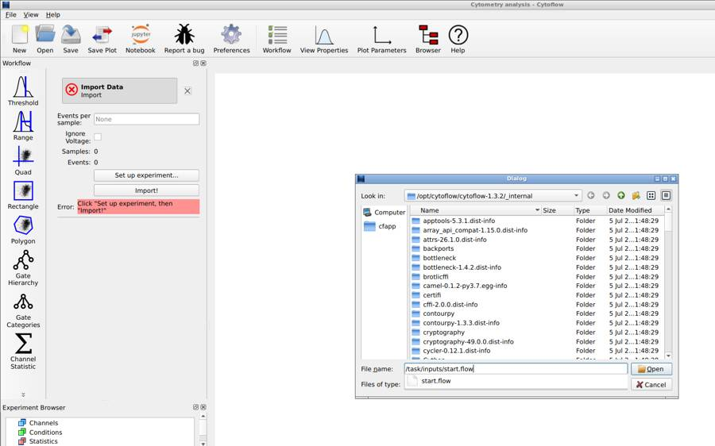
text(await tools.exec_command({cmd:"cu click 1307 745 && cu screenshot /tmp/confirm.png","max_output_tokens":1000}));
image((await tools.view_image({path:"/tmp/confirm.png"})).image_url);
Script completed Wall time 0.2 seconds Output:
{"chunk_id":"e15a23","wall_time_seconds":0.051711809,"exit_code":0,"original_token_count":5,"output":"/tmp/confirm.png\n"}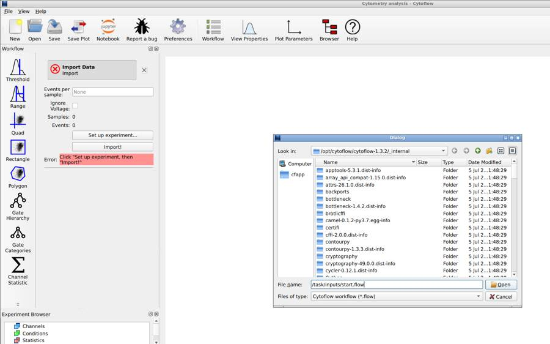
text(await tools.exec_command({cmd:"cu screenshot /tmp/confirm2.png","max_output_tokens":1000}));
image((await tools.view_image({path:"/tmp/confirm2.png"})).image_url);
Script completed Wall time 0.1 seconds Output:
{"chunk_id":"2ce6b1","wall_time_seconds":0.000005782,"exit_code":0,"original_token_count":5,"output":"/tmp/confirm2.png\n"}
text(await tools.exec_command({cmd:"cu click 1318 744 && cu key Return","max_output_tokens":1000}));
text(await tools.exec_command({cmd:"cu screenshot /tmp/yes.png","max_output_tokens":1000}));
image((await tools.view_image({path:"/tmp/yes.png"})).image_url);
Script completed Wall time 0.3 seconds Output:
{"chunk_id":"35a8b1","wall_time_seconds":0.000004721,"exit_code":0,"original_token_count":0,"output":""}{"chunk_id":"41d085","wall_time_seconds":0.000006198,"exit_code":0,"original_token_count":4,"output":"/tmp/yes.png\n"}
text(await tools.exec_command({cmd:"cu screenshot /tmp/loaded.png","max_output_tokens":1000}));
image((await tools.view_image({path:"/tmp/loaded.png"})).image_url);
Script completed Wall time 0.1 seconds Output:
{"chunk_id":"4db614","wall_time_seconds":0.000006119,"exit_code":0,"original_token_count":4,"output":"/tmp/loaded.png\n"}text(await tools.exec_command({cmd:"cu click 266 184 && cu screenshot /tmp/importselected.png","max_output_tokens":1000}));
image((await tools.view_image({path:"/tmp/importselected.png"})).image_url);
Script completed Wall time 0.2 seconds Output:
{"chunk_id":"4811cd","wall_time_seconds":0.042029601,"exit_code":0,"original_token_count":6,"output":"/tmp/importselected.png\n"}text(await tools.exec_command({cmd:"cu click 295 383 && cu click 22 30 && cu screenshot /tmp/saveasmenu.png","max_output_tokens":1000}));
image((await tools.view_image({path:"/tmp/saveasmenu.png"})).image_url);
Script completed Wall time 0.3 seconds Output:
{"chunk_id":"698b9b","wall_time_seconds":0.14580305,"exit_code":0,"original_token_count":5,"output":"/tmp/saveasmenu.png\n"}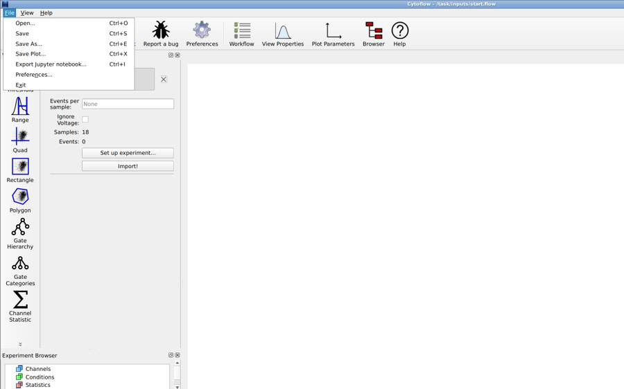
text(await tools.exec_command({cmd:"cu click 76 103 && cu screenshot /tmp/saveas.png","max_output_tokens":1000}));
image((await tools.view_image({path:"/tmp/saveas.png"})).image_url);
Script completed Wall time 0.2 seconds Output:
{"chunk_id":"57449f","wall_time_seconds":0.051630773,"exit_code":0,"original_token_count":4,"output":"/tmp/saveas.png\n"}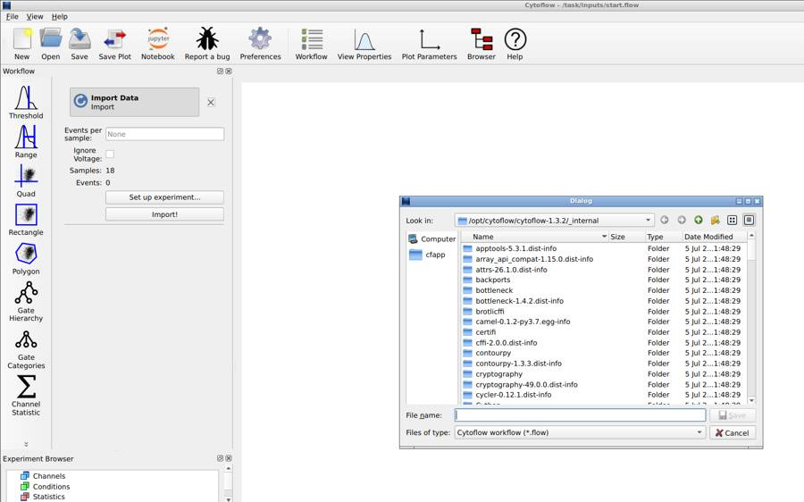
text(await tools.exec_command({cmd:"cu click 976 744 && cu paste /task/outputs/workflow.flow && cu click 1315 746","max_output_tokens":1000}));
text(await tools.web__run({search_query:[{q:"site.cytoflow.readthedocs.io 1.3.2 user manual table export gate hierarchy channel statistic"},{q:"site.thermofisher.com CellEvent Caspase 3/7 Green flow cytometry 502 530 500 nM"},{q:"site.biolegend.com Zombie NIR 640 780 viability"}],response_length:"long"}));
Script completed
Wall time 3.1 seconds
Output:
{"chunk_id":"5e2c3c","wall_time_seconds":1.400174405,"exit_code":0,"original_token_count":0,"output":""}
Table — Cytoflow 1.3.2 documentation (https://cytoflow.readthedocs.io/en/1.3.2/user_manual/reference/views/table.html)
citeturn0search0 [wordlim: 200] Crawled: 4 months ago; The column in the statistic to view (often a channel name.) ... Export the table to a CSV file.
# Table#
Make a table out of a statistic. The table can then be exported.
Statistic
Which statistic to view.
Feature
The column in the statistic to view (often a channel name.)
Rows
Which variable to use for the rows
Subrows
Which variable to use for subrows.
Columns
Which variable to use for the columns.
Subcolumns
Which variable to use for the subcolumns.
Export
Export the table to a CSV file.--------------------------------------------------------------------------------
Guide: Using statistics to summarize data — Cytoflow 1.3.2 documentation (https://cytoflow.readthedocs.io/en/1.3.2/user_manual/guides/statistics.html)
citeturn0search1 [wordlim: 200] Crawled: 4 months ago; /../_images/stats2.png ... /../_images/stats3.png ... This specifies how I want to `Cytoflow` to group the data before applying Function to channel – in this case, I’ve set it to Drug. ... If you would like to export this data, you can of course do so with the Export button. However, `Cytoflow` can plot it directly as well, with the 1D Statistics View. ... However, some functions reduce the size of the statistic – for example, if we apply Geom.Mean again, we only get a table with one column (because it’s taking the geometric mean of all the values in each group):
# Guide: Using statistics to summarize data#
Summarizing data is a key step in flow cytometry. Even simple, “traditional” analyses involve drawing gates and counting the number of events in them.
What proportion of these events were T-cells?#
`Cytoflow` calls these summary values – such as the mean or count of a set of events – statistics. Here, I’m using the word “statistic” in the technical sense, as in “a quantity that is computed from a sample.”
Another key insight is that we are usually interested in how a statistic changes across our experiment. For example, let’s say that I have some cells that express GFP, and I want to know how the amount of GFP expression changes as I alter the amount of a small molecule that I treat my cells with. I can create a statistic, then plot that statistic, to answer my question. Let’s see how I might do so. (I’m using data from the examples-basic directory – feel free to follow along.)
First, I need to import my data. In my experiment setup (in the Import Data operation), I must specify the conditions for each tube – that is, how the cells in each tube are different. In this case, I treated each tube with a different concentration of my drug, so I use “Drug” as a condition.
Using a histogram (and a vertical facet), I can see that the GFP intensity (as displayed in the FITC-A channel) is in fact changing when I vary the amount of drug I treat the cells with.
Image: ../../_images/stats2.png
Each distribution seems pretty symmetrical when plotted on a logarithmic scale, so let’s use a geometric mean to summarize them. I can do that with a Channel Statistics operation (the one whose button is a big sigma.)
Image: ../../_images/stats3.png
Note that I’ve set a name for the statistic, the channel I want to summarize, and the function I want to apply. Probably the most important – and most confusing! – parameter is Group By. This specifies how I want to `Cytoflow` to group the data before applying Function to channel – in this case, I’ve set it to Drug. Here’s the order that things happen in:
1. Cytoflow sees how many different values of the Drug parameter are in the data set.
2. It separates the data into groups – subsets – by those different values of Drug. If each tube has a different Drug value, then each of those subsets is the events from a single tube. However, if I had multiple tubes with the same **Drug* value, those tubes would be combined.*
3. For each subset of the data – each unique value of Drug – `Cytoflow` applies the function I asked for (in this case, Geom.Mean – the geometric mean – to the channel I said – in this case, FITC_A.
This results in a table of those summary numbers for each subset. You can view this table directly (with the Table View, natch) – here’s what we see.
The Feature property is which column of the statistic you’d like to view or plot – it is often the same as the channel name, but not always.
If you would like to export this data, you can of course do so with the Export button. However, `Cytoflow` can plot it directly as well, with the 1D Statistics View.
Image: ../../_images/stats5.png
In setting up this plot, I selected the statistic to plot and the variable I wanted on the X axis. I also changed the statistic scale (to log) and the variable scale (to logicle), which makes things easier to interpret. (Note that if I had left the variable scale on log, it would not have plotted the “Drug = 0” condition, because log(0) is undefined!
It’s clear from this analysis that the mean GFP value increases as the amount of drug increases. However, statistics are more powerful than this because they can capture multiple variables at the same time. For example, let’s imagine that I did two different replicates on two different days:
Image: ../../_images/stats6.png
In this case, I have imported twice as many tubes, and labeled them with both the amount of drug I used and which day I did the experiment on.
Now, when I set up my Channel Statistic, I’ll set Group By to both Day and Drug.
Image: ../../_images/stats7.png
Let’s see what this does to my table:
Image: ../../_images/stats8.png
Note that I now have two conditions that I can use when making my table: Drug and Day. This is because the channel st
… [26,296 more characters not shown]text(await tools.exec_command({cmd:"cu screenshot /tmp/loaded2.png","max_output_tokens":1000}));
image((await tools.view_image({path:"/tmp/loaded2.png"})).image_url);
Script completed Wall time 0.1 seconds Output:
{"chunk_id":"42b10c","wall_time_seconds":0.000007008,"exit_code":0,"original_token_count":5,"output":"/tmp/loaded2.png\n"}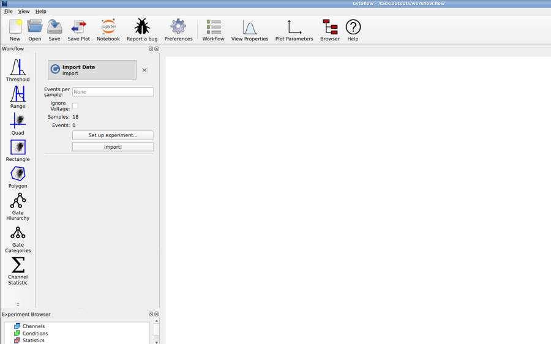
text(await tools.exec_command({cmd:"head -100 /task/inputs/start.flow","max_output_tokens":4000}));
text(await tools.web__run({open:[{ref_id:"https://cytoflow.readthedocs.io/en/1.3.2/user_manual/reference/operations/polygon.html"},{ref_id:"https://cytoflow.readthedocs.io/en/1.3.2/user_manual/reference/operations/channel_stat.html"}],response_length:"long"}));
Script completed
Wall time 0.6 seconds
Output:
{"chunk_id":"6ff024","wall_time_seconds":0.000006003,"exit_code":0,"original_token_count":741,"output":"- !workflow-item;5\n channels: []\n conditions: {}\n current_view: null\n metadata: {}\n operation: !import;4\n channels_list: []\n conditions:\n well: category\n sample: category\n genotype: category\n treatment: category\n events: null\n ignore_v_bool: false\n name_metadata: null\n tubes:\n - !tube;1\n conditions:\n well: 'A2'\n sample: 'WT no stain'\n genotype: 'WT'\n treatment: 'no stain'\n file: '/task/inputs/raw/Caspase_WT_KO_optimization_caspase_Group_A2.fcs'\n - !tube;1\n conditions:\n well: 'A4'\n sample: 'WT caspase only'\n genotype: 'WT'\n treatment: 'caspase only'\n file: '/task/inputs/raw/Caspase_WT_KO_optimization_caspase_Group_A4.fcs'\n - !tube;1\n conditions:\n well: 'A6'\n sample: 'WT L/D only'\n genotype: 'WT'\n treatment: 'L/D only'\n file: '/task/inputs/raw/Caspase_WT_KO_optimization_caspase_Group_A6.fcs'\n - !tube;1\n conditions:\n well: 'A7'\n sample: 'WT 10uM camptothecin'\n genotype: 'WT'\n treatment: '10uM camptothecin'\n file: '/task/inputs/raw/Caspase_WT_KO_optimization_caspase_Group_A7.fcs'\n - !tube;1\n conditions:\n well: 'A8'\n sample: 'WT 5uM camptothecin'\n genotype: 'WT'\n treatment: '5uM camptothecin'\n file: '/task/inputs/raw/Caspase_WT_KO_optimization_caspase_Group_A8.fcs'\n - !tube;1\n conditions:\n well: 'A9'\n sample: 'WT 2uM camptothecin'\n genotype: 'WT'\n treatment: '2uM camptothecin'\n file: '/task/inputs/raw/Caspase_WT_KO_optimization_caspase_Group_A9.fcs'\n - !tube;1\n conditions:\n well: 'A10'\n sample: 'WT 1uM camptothecin'\n genotype: 'WT'\n treatment: '1uM camptothecin'\n file: '/task/inputs/raw/Caspase_WT_KO_optimization_caspase_Group_A10.fcs'\n - !tube;1\n conditions:\n well: 'A11'\n sample: 'WT DMSO'\n genotype: 'WT'\n treatment: 'DMSO'\n file: '/task/inputs/raw/Caspase_WT_KO_optimization_caspase_Group_A11.fcs'\n - !tube;1\n conditions:\n well: 'A12'\n sample: 'WT no treatment'\n genotype: 'WT'\n treatment: 'no treatment'\n file: '/task/inputs/raw/Caspase_WT_KO_optimization_caspase_Group_A12.fcs'\n - !tube;1\n conditions:\n well: 'B2'\n sample: 'KO no stain'\n genotype: 'KO'\n treatment: 'no stain'\n file: '/task/inputs/raw/Caspase_WT_KO_optimization_caspase_Group_B2.fcs'\n - !tube;1\n conditions:\n well: 'B4'\n sample: 'KO caspase only'\n genotype: 'KO'\n treatment: 'caspase only'\n file: '/task/inputs/raw/Caspase_WT_KO_optimization_caspase_Group_B4.fcs'\n - !tube;1\n conditions:\n well: 'B6'\n sample: 'KO L/D only'\n genotype: 'KO'\n treatment: 'L/D only'\n file: '/task/inputs/raw/Caspase_WT_KO_optimization_caspase_Group_B6.fcs'\n"}
Polygon Gate — Cytoflow 1.3.2 documentation (https://cytoflow.readthedocs.io/en/1.3.2/user_manual/reference/operations/polygon.html)
citeturn1view0 [wordlim: 200] Crawled: 2 months ago; Content type: text/html; Source: open({"ref_id":"https://cytoflow.readthedocs.io/en/1.3.2/user_manual/reference/operations/polygon.html","lineno":null}); Total lines: 124
L0: Back to top
L1:
L2: [Input: Search the docs ...] `Ctrl`+`K`
L3:
L4: Section Navigation
L5: * 【0†Tutorials】
L6: * 【1†Tutorial: Quickstart】
L7: * 【2†Tutorial: Dose-Response】
L8: * 【3†Tutorial: Hierarchical Gating】
L9: * 【4†Tutorial: Estimating Genome Size】
L10: * 【5†Tutorial: Microbial Diversity】
L11: * 【6†Tutorial: Yeast Multidimensional Induction Timecourse】
L12: * 【7†Tutorial: Synthetic Gene Logic Network】
L13: * 【8†Tutorial: Transcriptional Repressor Characterization】
L14: * 【9†Tutorial: Machine Learning】
L15: * 【10†Tutorial: Computational Cytometry】
L16: * 【11†How-To Guides】
L17: * 【12†HOWTO: Install Cytoflow】
L18: * 【13†HOWTO: Import an experiment from a table】
L19: * 【14†HOWTO: Compensate for bleedthrough】
L20: * 【15†HOWTO: Use beads to correct for day-to-day variation】
L21: * 【16†HOWTO: Use the TASBE workflow for calibrated flow cytometry】
L22: * 【17†HOWTO: Export FCS files】
L23: * 【18†HOWTO: Export plots】
L24: * 【19†HOWTO: Use different gates for different subsets of data】
L25: * 【20†HOWTO: Add error bars to a statistics plot】
L26: * 【21†Users’ guides】
L27: * 【22†Guide: Using facets to compare data sets】
L28: * 【23†Guide: Using statistics to summarize data】
L29: * 【24†Guide: Which measure of center should I use?】
L30: * 【25†Guide: How can I understand the experiment structure?】
L31: * 【26†Operation and View Gallery】
L32: * 【27†Autofluorescence correction】
L33: * 【28†Bead Calibration】
L34: * 【29†Binning】
L35: * 【30†Linear Bleedthrough Compensation】
L36: * 【31†Categorical Gating】
L37: * 【32†Channel statistic】
L38: * 【33†Color Translation】
L39: * 【34†Density Gate】
L40: * 【35†FlowClean】
L41: * 【36†FlowPeaks Clustering】
L42: * 【37†Gaussian Mixture Model (1D)】
L43: * 【38†Gaussian Mixture Model (2D)】
L44: * 【39†Hierarchical Gating】
L45: * 【40†Import Files】
L46: * 【41†KMeans】
L47: * 【42†Minimum Spanning Tree Gate】
L48: * 【43†Multi-channel statistic】
L49: * 【44†Principal Component Analysis】
L50: * 【45†Polygon Gate】
L51: * 【46†Quadrant Gate】
L52: * 【47†Range Gate】
L53: * 【48†2D Range Gate】
L54: * 【49†Ratio】
L55: * 【50†Registration】
L56: * 【51†Self-Organizing Map Clustering】
L57: * 【52†TASBE Calibrated Flow Cytometry】
L58: * 【53†Threshold Gate】
L59: * 【54†t-Stochastic
… [6,221 more characters not shown]text(await tools.exec_command({cmd:"cu click 47 453 && cu screenshot /tmp/polygon.png","max_output_tokens":1000}));
image((await tools.view_image({path:"/tmp/polygon.png"})).image_url);
Script completed Wall time 0.2 seconds Output:
{"chunk_id":"3eba5e","wall_time_seconds":0.040820799,"exit_code":0,"original_token_count":5,"output":"/tmp/polygon.png\n"}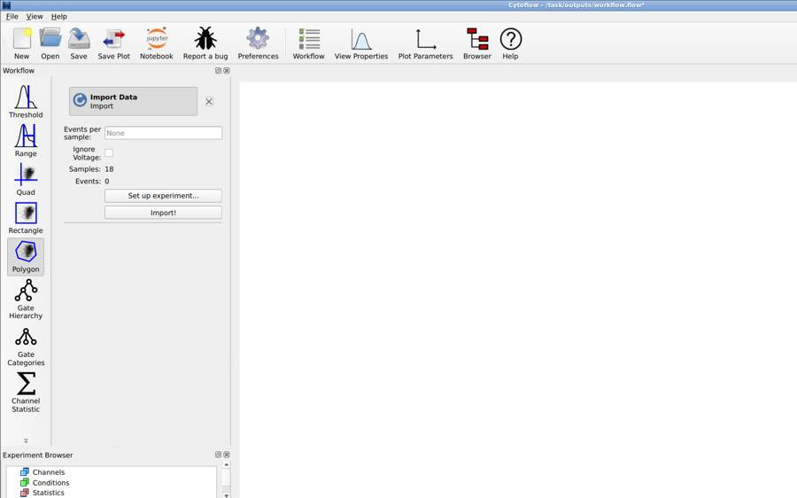
text(await tools.exec_command({cmd:"cu screenshot /tmp/polygon2.png","max_output_tokens":1000}));
image((await tools.view_image({path:"/tmp/polygon2.png"})).image_url);
Script completed Wall time 0.1 seconds Output:
{"chunk_id":"459817","wall_time_seconds":0.000005663,"exit_code":0,"original_token_count":5,"output":"/tmp/polygon2.png\n"}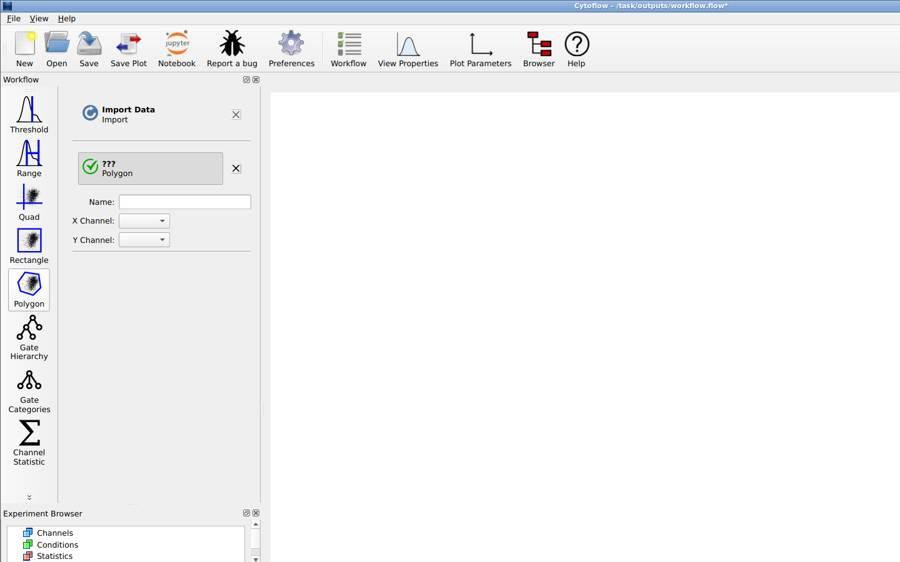
text(await tools.exec_command({cmd:"cu click 289 324 && cu type cells && cu click 262 355 && cu screenshot /tmp/channels.png","max_output_tokens":1000}));
image((await tools.view_image({path:"/tmp/channels.png"})).image_url);
Script completed Wall time 0.5 seconds Output:
{"chunk_id":"12f2a1","wall_time_seconds":0.279039554,"exit_code":0,"original_token_count":5,"output":"/tmp/channels.png\n"}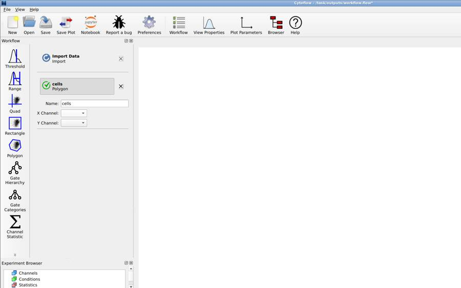
{
"duration_ms": 40000
}Wall time: 40.0043 seconds Sleep completed.
text(await tools.exec_command({cmd:"cu screenshot /tmp/afterload.png","max_output_tokens":1000}));
image((await tools.view_image({path:"/tmp/afterload.png"})).image_url);
Script completed Wall time 0.1 seconds Output:
{"chunk_id":"af425c","wall_time_seconds":0.000006723,"exit_code":0,"original_token_count":5,"output":"/tmp/afterload.png\n"}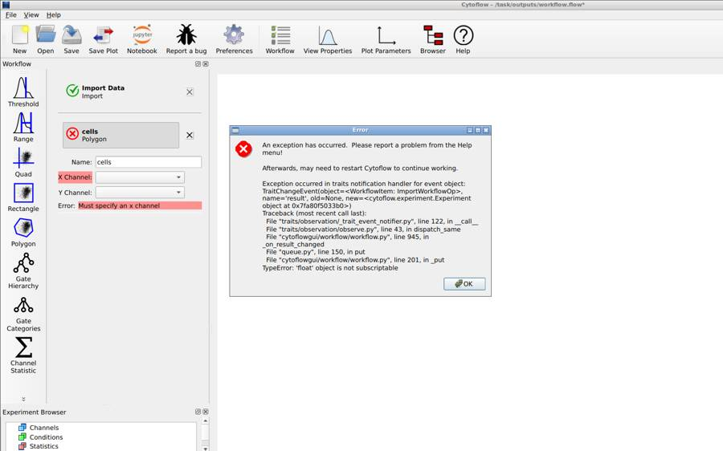
text(await tools.exec_command({cmd:"cu click 928 565 && cu click 355 355 && cu screenshot /tmp/channelmenu.png","max_output_tokens":1000}));
image((await tools.view_image({path:"/tmp/channelmenu.png"})).image_url);
Script completed Wall time 0.3 seconds Output:
{"chunk_id":"b0dc46","wall_time_seconds":0.150000377,"exit_code":0,"original_token_count":6,"output":"/tmp/channelmenu.png\n"}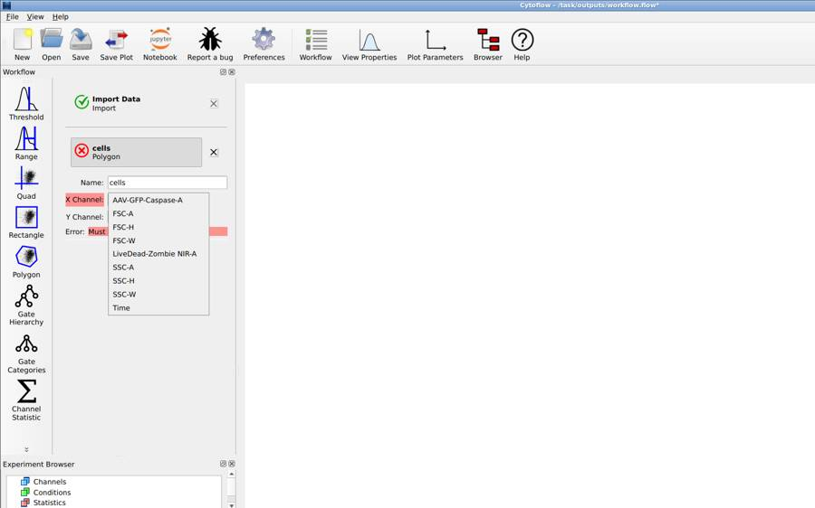
text(await tools.exec_command({cmd:"cu click 225 379 && cu click 355 383 && cu screenshot /tmp/ymenu.png","max_output_tokens":1000}));
image((await tools.view_image({path:"/tmp/ymenu.png"})).image_url);
Script completed Wall time 0.3 seconds Output:
{"chunk_id":"37aeac","wall_time_seconds":0.149891996,"exit_code":0,"original_token_count":4,"output":"/tmp/ymenu.png\n"}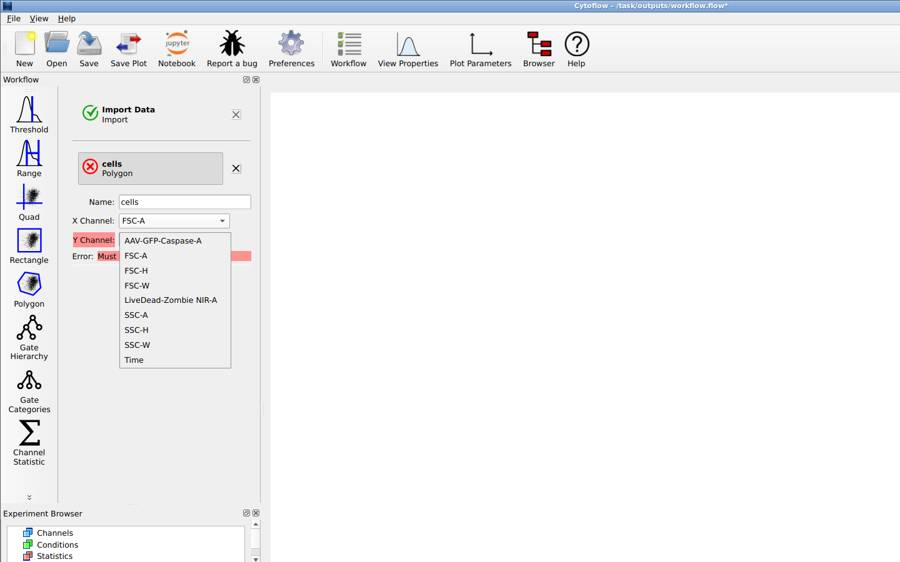
text(await tools.exec_command({cmd:"cu click 226 504 && cu click 650 73 && cu screenshot /tmp/viewcontrols.png","max_output_tokens":1000}));
image((await tools.view_image({path:"/tmp/viewcontrols.png"})).image_url);
Script completed Wall time 0.3 seconds Output:
{"chunk_id":"b7bafe","wall_time_seconds":0.148770994,"exit_code":0,"original_token_count":6,"output":"/tmp/viewcontrols.png\n"}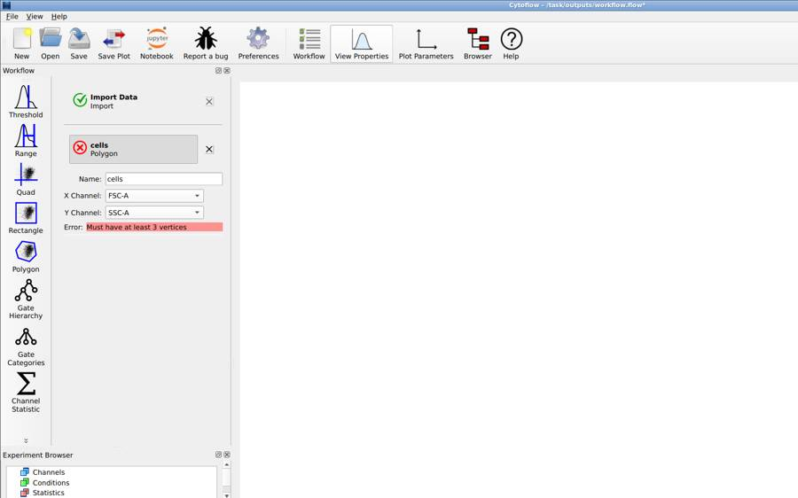
text(await tools.exec_command({cmd:"cu screenshot /tmp/viewcontrols2.png","max_output_tokens":1000}));
image((await tools.view_image({path:"/tmp/viewcontrols2.png"})).image_url);
Script completed Wall time 0.1 seconds Output:
{"chunk_id":"9166cb","wall_time_seconds":0.000006693,"exit_code":0,"original_token_count":6,"output":"/tmp/viewcontrols2.png\n"}text(await tools.exec_command({cmd:"cu click 61 30 && cu screenshot /tmp/viewmenu.png","max_output_tokens":1000}));
image((await tools.view_image({path:"/tmp/viewmenu.png"})).image_url);
Script completed Wall time 0.3 seconds Output:
{"chunk_id":"846aff","wall_time_seconds":0.049127894,"exit_code":0,"original_token_count":5,"output":"/tmp/viewmenu.png\n"}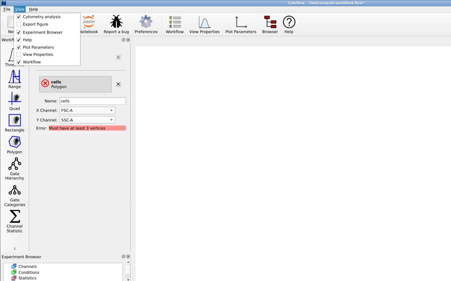
text(await tools.exec_command({cmd:"cu click 119 172 && cu click 650 71 && cu screenshot /tmp/viewtoggled.png","max_output_tokens":1000}));
image((await tools.view_image({path:"/tmp/viewtoggled.png"})).image_url);
Script completed Wall time 0.3 seconds Output:
{"chunk_id":"e542a0","wall_time_seconds":0.1474087,"exit_code":0,"original_token_count":6,"output":"/tmp/viewtoggled.png\n"}text(await tools.exec_command({cmd:"cu click 699 8 double && cu screenshot /tmp/maximize.png","max_output_tokens":1000}));
image((await tools.view_image({path:"/tmp/maximize.png"})).image_url);
Script completed Wall time 0.3 seconds Output:
{"chunk_id":"ffc066","wall_time_seconds":0.15154393,"exit_code":0,"original_token_count":5,"output":"/tmp/maximize.png\n"}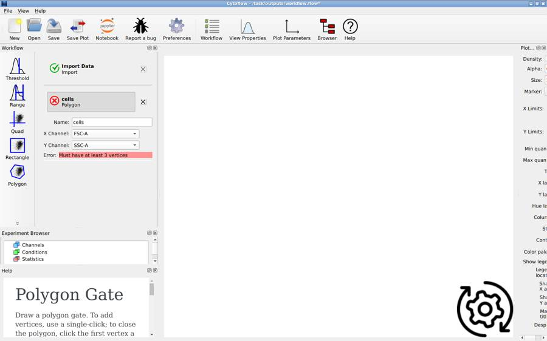
text(await tools.exec_command({cmd:"cu click 770 73 && cu click 866 73 && cu click 925 73 && cu click 651 73 && cu screenshot /tmp/cleanui.png","max_output_tokens":1000}));
image((await tools.view_image({path:"/tmp/cleanui.png"})).image_url);
Script completed Wall time 0.6 seconds Output:
{"chunk_id":"163e76","wall_time_seconds":0.378637233,"exit_code":0,"original_token_count":5,"output":"/tmp/cleanui.png\n"}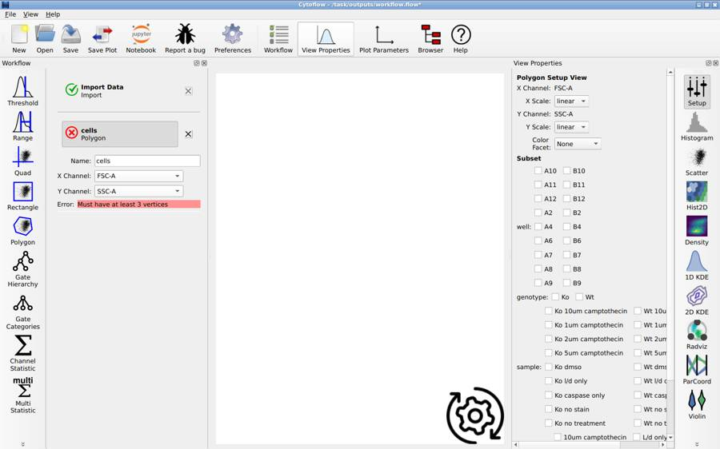
text(await tools.exec_command({cmd:"cu click 1076 398 && cu screenshot /tmp/scatterfirst.png","max_output_tokens":1000}));
image((await tools.view_image({path:"/tmp/scatterfirst.png"})).image_url);
Script completed Wall time 0.3 seconds Output:
{"chunk_id":"7c8830","wall_time_seconds":0.085217526,"exit_code":0,"original_token_count":6,"output":"/tmp/scatterfirst.png\n"}text(await tools.exec_command({cmd:"cu click 1166 203 && cu screenshot /tmp/scalemenu.png","max_output_tokens":1000}));
image((await tools.view_image({path:"/tmp/scalemenu.png"})).image_url);
Script completed Wall time 0.3 seconds Output:
{"chunk_id":"5fc3f4","wall_time_seconds":0.08475454,"exit_code":0,"original_token_count":5,"output":"/tmp/scalemenu.png\n"}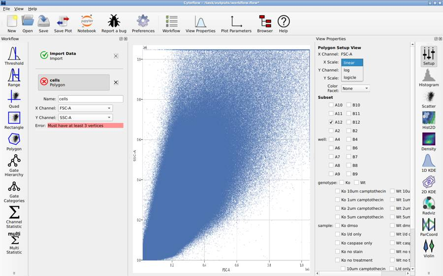
text(await tools.exec_command({cmd:"cu click 1129 227 && cu click 1169 256 && cu screenshot /tmp/yscale.png","max_output_tokens":1000}));
image((await tools.view_image({path:"/tmp/yscale.png"})).image_url);
Script completed Wall time 0.4 seconds Output:
{"chunk_id":"4dd6fb","wall_time_seconds":0.192277057,"exit_code":0,"original_token_count":4,"output":"/tmp/yscale.png\n"}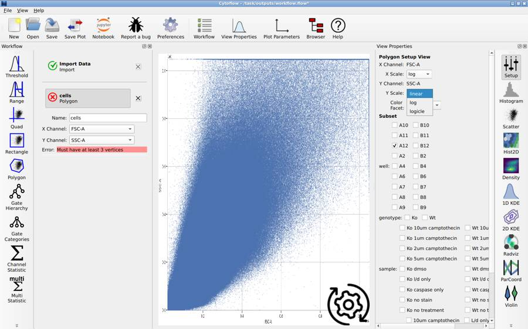
text(await tools.exec_command({cmd:"cu click 1126 278","max_output_tokens":1000}));
Script completed
Wall time 0.1 seconds
Output:
{"chunk_id":"0621f3","wall_time_seconds":0.000005609,"exit_code":0,"original_token_count":0,"output":""}{
"duration_ms": 10000
}Wall time: 10.0030 seconds Sleep completed.
text(await tools.exec_command({cmd:"cu screenshot /tmp/logscatter.png","max_output_tokens":1000}));
image((await tools.view_image({path:"/tmp/logscatter.png"})).image_url);
Script completed Wall time 0.2 seconds Output:
{"chunk_id":"ec624a","wall_time_seconds":0.000006608,"exit_code":0,"original_token_count":5,"output":"/tmp/logscatter.png\n"}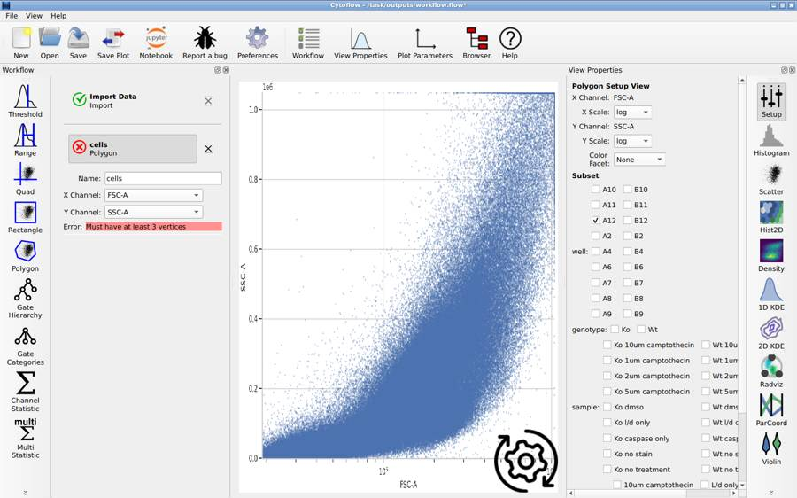
text(await tools.exec_command({cmd:"cu key ctrl+s","max_output_tokens":1000}));
text(await tools.web__run({search_query:[{q:'site.biolegend.com "Zombie NIR" "excitation" "emission"'},{q:'site.cytoflow.readthedocs.io "Gate Hierarchy" "True" "Subset"'}],response_length:"long"}));
Script completed
Wall time 1.9 seconds
Output:
{"chunk_id":"a43049","wall_time_seconds":0.000005558,"exit_code":0,"original_token_count":0,"output":""}
Zombie NIR Dye Profile | FluoroFinder (https://upci.fluorofinder.com/dyes/399-zombie-nir-ex-max-715-nm-em-max-743-nm)
citeturn2search0 [wordlim: 200] Crawled: yesterday; Zombie NIR™ from Biolegend is an amine-reactive viability dye useful in flow cytometry when fixation and permeabilization of the cells is required prior to analysis. ... Zombie NIR has an excitation maximum at 715 nm and an emission maximum at 743 nm, a Stokes shift of 28 nm.
Back to directory
# Zombie NIR
Zombie NIR™ (Ex-Max 715 nm/Em-Max 743 nm)
Zombie NIR™ from Biolegend is an amine-reactive viability dye useful in flow cytometry when fixation and permeabilization of the cells is required prior to analysis. It has an excitation peak at 715 nm and an emission peak at 743 nm, however in flow cytometry it is recommended for excitation with the red 640 nm laser.
640 Red laser 710/50 filter 4 conjugates
Open in Spectra Viewer 4 antibodies from 2 suppliers
## Excitation & emission spectra
Normalised excitation and emission, 350–800 nm
400 450 500 550 600 650 700 750 800
Excitation Emission
## Spectrally similar dyes
Sign in to see spectrally similar dyes and overlay them in the Spectra Viewer.
Sign in to see similar dyes
Excitation max
715 nm
Emission max
743 nm
Stokes shift
28 nm
Optimal laser
640 nm
Optimal filter
710/50
## Popular Zombie NIR products
4 conjugates · ranked by researcher selections
### Conjugated antibodies
4 products for Zombie NIR
Product Supplier
1 Zombie NIR 500T N/A IgG · FC BioLegend View product
2 Zombie NIR 100T N/A IgG · FC BioLegend View product
3 Zombie NIR Clone N/A N/A · FCImage: Sony logoSony View product
4 Zombie NIR Clone N/A N/A · FCImage: Sony logoSony View product
Opens in Product Search with Dye: Zombie NIR Conjugated antibodies See all 4 in Product Search
## Common questions about Zombie NIR
* What is Zombie NIR?
Zombie NIR™ from Biolegend is an amine-reactive viability dye useful in flow cytometry when fixation and permeabilization of the cells is required prior to analysis. It has an excitation peak at 715 nm and an emission peak at 743 nm, however in flow cytometry it is recommended for excitation with the red 640 nm laser.
* What laser excites Zombie NIR?
Zombie NIR is optimally excited by the 628-640 laser line. Its excitation maximum is 715 nm.
* What filter should I use to detect Zombie NIR?
A 710/50 filter captures the peak of the Zombie NIR emission near 743 nm with minimal spillover.
* How many antibodies are available conjugated to Zombie NIR?
FluoroFinder tracks 4 commercially available Zombie NIR conjugates, searchable by target, clone, host and application.
## Key facts about Zombie NIR
Excitation maximum
715 nm
Emission maximum
743 nm
Optimal laser line
628-640
Optimal filter
710/50
Applications
Flow Cytometry
Commercial antibodies
4 from 2 suppliers
Zombie NIR has an excitation maximum at 715 nm and an emission maximum at 743 nm, a Stokes shift of 28 nm. It is optimally excited by the 628-640 laser line.--------------------------------------------------------------------------------
There are multiple fixable dyes available on the market including Zombie (BioLegend), Ghost Dyes (Tonbo Biosciences), and Phantom Dyes (Proteintech). All fixable dyes are available in a variety of excitation/emission ranges to allow for versatility (see Table below). It should be noted that amine dyes must be added prior to fixation of cells. Because fixation can alter the cell’s membrane allowing the dye into the cell. To best determine which type of dye to use in your panel, refer to the table below. (https://flowcore.hsc.wvu.edu/media/17377/fcsccf-newsletter-oct-2022-final-version.pdf)
citeturn2search12 [wordlim: 200] Published: 4.0 years ago; There are multiple fixable dyes available on the market including Zombie (BioLegend), Ghost Dyes (Tonbo Biosciences), and Phantom Dyes (Proteintech). All fixable dyes are available in a variety of excitation/emission ranges to allow for versatility (see Table below). ... <tr><td>Zombie NIR</td><td>633/746</td><td>Red (628 nm)</td></tr>
<tr><td>Live/Dead Fixable Violet Stain</td><td>416/451</td><td>Violet (405 nm)</td></tr>
<tr><td>Live/Dead Fixable Lime Stain</td><td>405/506</td><td>Violet (405 nm)</td></tr>
<tr><td>Live/Dead Fixable Aqua Stain</td><td>367/526</td><td>Violet (405 nm)</td></tr>
<tr><td>Live/Dead Fixable Yellow Stain</td><td>400/575</td><td>Violet (405 nm)</td></tr>
<tr><td>PI</td><td>488/617</td><td>Blue (488 nm)</td></tr>
<tr><td>7-AAD</td><td>488/647</td><td>Blue (488 nm)</td></tr>
<tr><td>Zombie Green; Ghost Dye Blue 516; Phantom Dye Blue 516</td><td>488/515</td><td>Blue (488 nm)</td></tr>
<tr><td>Live/Dead Fixable Green Stain</td><td>495/520</td><td>Blue (488 nm)</td></tr>
<tr><td>Live/Dead Fixable Olive Stain</td><td>480/557</td><td>Blue (488 nm)</td></tr>
<tr><td>Zombie Red</td><td>561/624</td><td>Yellow/Green (561 nm)</td></tr>
<tr><td>Live/Dead Fixable Orange Stain</td><td>580/602</td><td>Yellow/Green (561 nm)</td></tr>
<tr><td>Live/Dead Fixable Red Stain</td><td>595/615</td><td>Yellow/Green (561 nm)</td></tr>
<tr><td>Zombie NIR</td><td>633/746</td><td>Red (628 nm)</td></tr>
<tr><td>Phantom Dye Red 780; Ghost Dye Red 780</td><td>633/780</td><td>Red (628 nm)</td></tr>
<tr><td>Phantom Dye Red 710; Ghost Dye Red 710</td><td>633/710</td><td>Red (628 nm)</td></tr>
<tr><td>Live/Dead Fixable Near-IR (780) Stain</td><td>633/785</td><td>Red (628 nm)</td></tr>
</table>
http://flowcore.wvu.edu
5--------------------------------------------------------------------------------
Wireless electrical–molecular quantum signalling for cancer cell apoptosis (https://www.nature.com/articles/s41565-023-01496-y.pdf)
citeturn2search13 [wordlim: 200] Published: 3.2 years ago; Crawled: 3.2 years
… [21,917 more characters not shown]text(await tools.exec_command({cmd:"cu screenshot /tmp/logdone.png","max_output_tokens":1000}));
image((await tools.view_image({path:"/tmp/logdone.png"})).image_url);
Script completed Wall time 0.2 seconds Output:
{"chunk_id":"64bd79","wall_time_seconds":0.000006223,"exit_code":0,"original_token_count":5,"output":"/tmp/logdone.png\n"}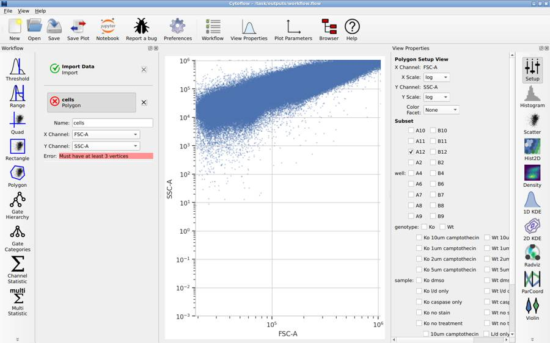
text(await tools.exec_command({cmd:"cu click 606 338 && cu click 713 316 && cu click 996 227 && cu click 996 157 && cu click 712 157 && cu click 606 228 && cu click 606 338 && cu key ctrl+s","max_output_tokens":1000}));
Script completed
Wall time 0.8 seconds
Output:
{"chunk_id":"216a20","wall_time_seconds":0.632641031,"exit_code":0,"original_token_count":0,"output":""}text(await tools.exec_command({cmd:"cu screenshot /tmp/cellsgate.png","max_output_tokens":1000}));
image((await tools.view_image({path:"/tmp/cellsgate.png"})).image_url);
Script completed Wall time 0.2 seconds Output:
{"chunk_id":"19c8cb","wall_time_seconds":0.000006746,"exit_code":0,"original_token_count":5,"output":"/tmp/cellsgate.png\n"}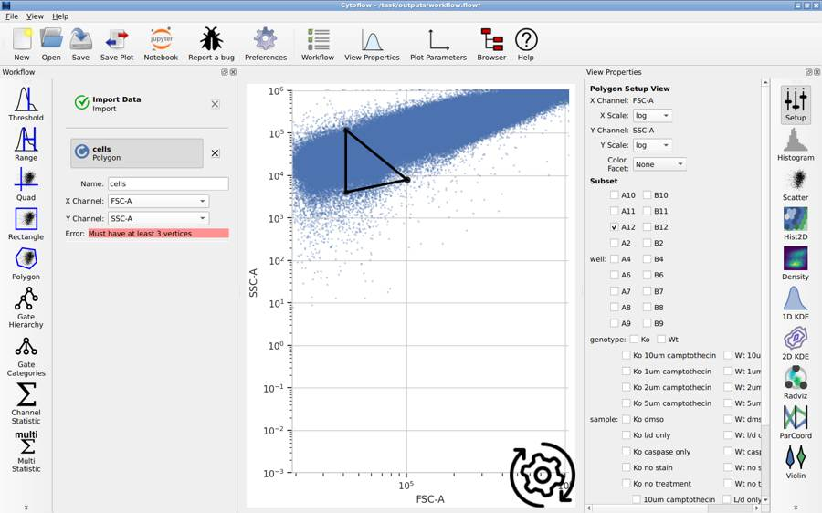
text(await tools.exec_command({cmd:"cu click 606 338 && cu click 713 316 && cu click 990 227 && cu click 990 163 && cu click 713 163 && cu click 606 228 && cu click 606 338","max_output_tokens":1000}));
Script completed
Wall time 0.8 seconds
Output:
{"chunk_id":"d1cdb2","wall_time_seconds":0.60374286,"exit_code":0,"original_token_count":0,"output":""}{
"duration_ms": 10000
}Wall time: 10.0042 seconds Sleep completed.
text(await tools.exec_command({cmd:"cu screenshot /tmp/cells2.png","max_output_tokens":1000}));
image((await tools.view_image({path:"/tmp/cells2.png"})).image_url);
Script completed Wall time 0.2 seconds Output:
{"chunk_id":"c50aca","wall_time_seconds":0.000006748,"exit_code":0,"original_token_count":4,"output":"/tmp/cells2.png\n"}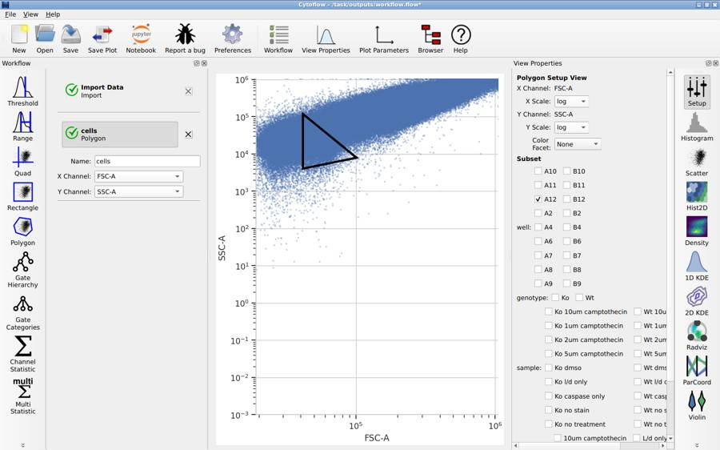
text(await tools.exec_command({cmd:"cu click 606 338 && cu screenshot /tmp/p1.png","max_output_tokens":1000}));
image((await tools.view_image({path:"/tmp/p1.png"})).image_url);
Script completed Wall time 0.3 seconds Output:
{"chunk_id":"0b22ee","wall_time_seconds":0.060066348,"exit_code":0,"original_token_count":3,"output":"/tmp/p1.png\n"}text(await tools.exec_command({cmd:"cu click 900 230 && cu move 950 190 && cu screenshot /tmp/p2.png","max_output_tokens":1000}));
image((await tools.view_image({path:"/tmp/p2.png"})).image_url);
Script completed Wall time 0.3 seconds Output:
{"chunk_id":"c66dfb","wall_time_seconds":0.065500448,"exit_code":0,"original_token_count":3,"output":"/tmp/p2.png\n"}text(await tools.exec_command({cmd:"cu click 982 217","max_output_tokens":1000}));
Script completed
Wall time 0.1 seconds
Output:
{"chunk_id":"a54520","wall_time_seconds":0.000005398,"exit_code":0,"original_token_count":0,"output":""}text(await tools.exec_command({cmd:"cu click 982 165","max_output_tokens":1000}));
Script completed
Wall time 0.1 seconds
Output:
{"chunk_id":"2c5773","wall_time_seconds":0.000005747,"exit_code":0,"original_token_count":0,"output":""}text(await tools.exec_command({cmd:"cu click 712 165","max_output_tokens":1000}));
Script completed
Wall time 0.1 seconds
Output:
{"chunk_id":"f02b16","wall_time_seconds":0.000005429,"exit_code":0,"original_token_count":0,"output":""}text(await tools.exec_command({cmd:"cu click 606 228","max_output_tokens":1000}));
Script completed
Wall time 0.1 seconds
Output:
{"chunk_id":"1bc4e3","wall_time_seconds":0.000005801,"exit_code":0,"original_token_count":0,"output":""}text(await tools.exec_command({cmd:"cu click 606 338 && cu screenshot /tmp/cellsfinal.png","max_output_tokens":1000}));
image((await tools.view_image({path:"/tmp/cellsfinal.png"})).image_url);
Script completed Wall time 0.2 seconds Output:
{"chunk_id":"7fa589","wall_time_seconds":0.061793096,"exit_code":0,"original_token_count":5,"output":"/tmp/cellsfinal.png\n"}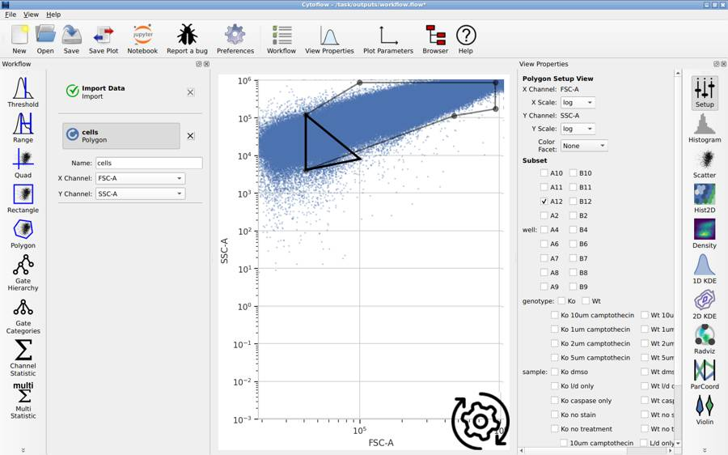
text(await tools.exec_command({cmd:"cu key ctrl+s && cu click 46 455 && sleep 1 && cu screenshot /tmp/singletsnew.png","max_output_tokens":1000}));
image((await tools.view_image({path:"/tmp/singletsnew.png"})).image_url);
Script completed Wall time 1.3 seconds Output:
{"chunk_id":"1b4c77","wall_time_seconds":1.095867204,"exit_code":0,"original_token_count":6,"output":"/tmp/singletsnew.png\n"}text(await tools.exec_command({cmd:"cu click 266 409 && cu type singlets && cu click 354 438 && sleep 0.3 && cu screenshot /tmp/singletsxmenu.png","max_output_tokens":1000}));
image((await tools.view_image({path:"/tmp/singletsxmenu.png"})).image_url);
Script completed Wall time 0.9 seconds Output:
{"chunk_id":"7abafa","wall_time_seconds":0.677067099,"exit_code":0,"original_token_count":6,"output":"/tmp/singletsxmenu.png\n"}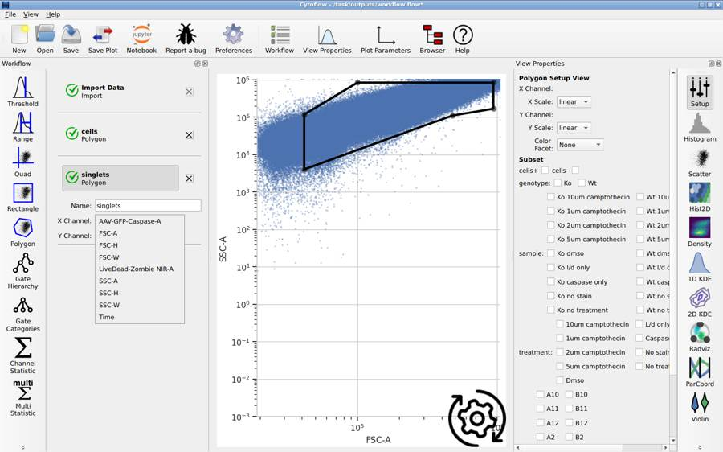
text(await tools.exec_command({cmd:"cu click 220 464 && cu click 354 469 && sleep 0.3 && cu screenshot /tmp/singlety.png","max_output_tokens":1000}));
image((await tools.view_image({path:"/tmp/singlety.png"})).image_url);
Script completed Wall time 0.7 seconds Output:
{"chunk_id":"8e92f1","wall_time_seconds":0.467194772,"exit_code":0,"original_token_count":5,"output":"/tmp/singlety.png\n"}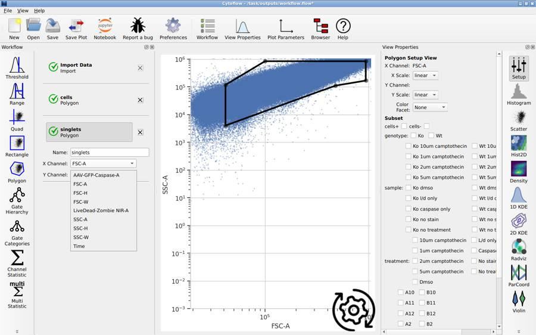
text(await tools.exec_command({cmd:"cu click 222 518 && cu click 1086 338 && cu click 1076 841 && sleep 8 && cu screenshot /tmp/singletplot.png","max_output_tokens":1000}));
image((await tools.view_image({path:"/tmp/singletplot.png"})).image_url);
Script completed Wall time 8.5 seconds Output:
{"chunk_id":"e0175c","wall_time_seconds":8.273805794,"exit_code":0,"original_token_count":6,"output":"/tmp/singletplot.png\n"}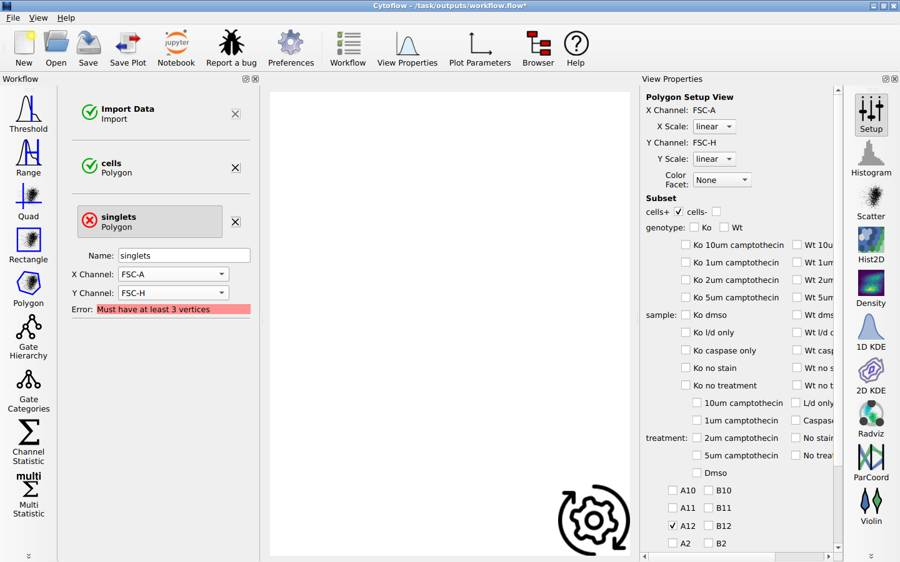
text(await tools.exec_command({cmd:"cu screenshot /tmp/singletplot2.png","max_output_tokens":1000}));
image((await tools.view_image({path:"/tmp/singletplot2.png"})).image_url);
Script completed Wall time 0.2 seconds Output:
{"chunk_id":"6f50fb","wall_time_seconds":0.000007762,"exit_code":0,"original_token_count":6,"output":"/tmp/singletplot2.png\n"}{
"duration_ms": 20000
}Wall time: 20.0047 seconds Sleep completed.
text(await tools.exec_command({cmd:"cu screenshot /tmp/singletsready.png","max_output_tokens":1000}));
image((await tools.view_image({path:"/tmp/singletsready.png"})).image_url);
Script completed Wall time 0.2 seconds Output:
{"chunk_id":"1614e4","wall_time_seconds":0.000005514,"exit_code":0,"original_token_count":6,"output":"/tmp/singletsready.png\n"}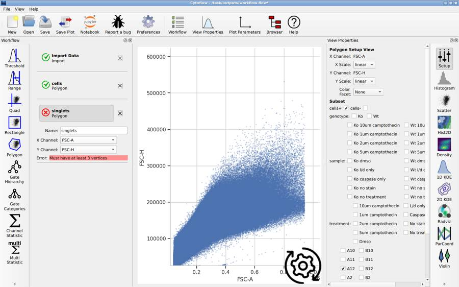
text(await tools.exec_command({cmd:"cu click 354 439 && cu key f && cu key Down && cu key Return && cu click 354 470 && cu key f && cu key Down && cu key Down && cu key Return && sleep 1 && cu screenshot /tmp/widthselection.png","max_output_tokens":1000}));
image((await tools.view_image({path:"/tmp/widthselection.png"})).image_url);
Script completed Wall time 1.5 seconds Output:
{"chunk_id":"728d0c","wall_time_seconds":1.289197493,"exit_code":0,"original_token_count":6,"output":"/tmp/widthselection.png\n"}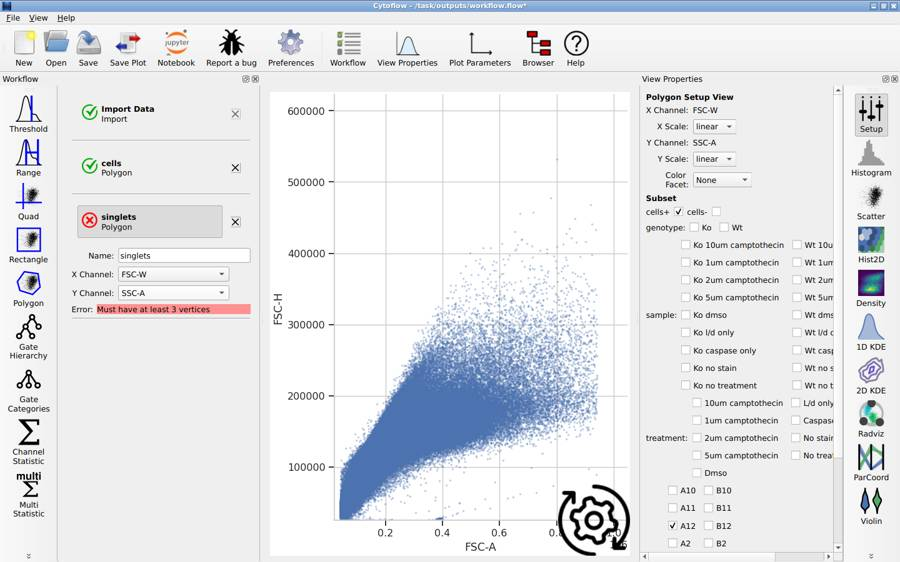
text(await tools.exec_command({cmd:"cu click 354 439 && cu key Home && cu key Down && cu key Down && cu key Return && cu click 354 470 && cu key Home && cu key Down && cu key Down && cu key Down && cu key Return && sleep 20 && cu screenshot /tmp/widthplot.png","max_output_tokens":1000}));
image((await tools.view_image({path:"/tmp/widthplot.png"})).image_url);
Script failed
Wall time 10.2 seconds
Output:
{"chunk_id":"95f014","wall_time_seconds":10.001564921,"session_id":63292,"original_token_count":0,"output":""}
Script error:
unable to locate image at `/tmp/widthplot.png`: No such file or directory (os error 2)text(await tools.write_stdin({session_id:63292,chars:"","yield_time_ms":15000,"max_output_tokens":1000}));
image((await tools.view_image({path:"/tmp/widthplot.png"})).image_url);
Script completed Wall time 5.4 seconds Output:
{"chunk_id":"804c84","wall_time_seconds":5.349544414,"exit_code":0,"original_token_count":5,"output":"/tmp/widthplot.png\n"}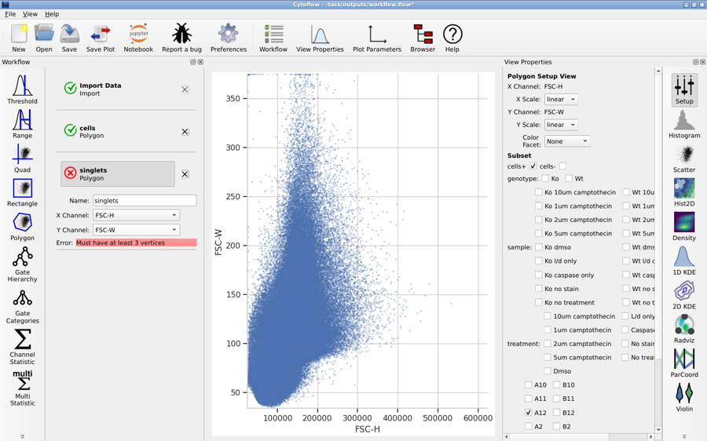
text(await tools.exec_command({cmd:"cu click 508 827 && sleep 0.5 && cu click 991 827 && sleep 0.5 && cu click 991 582 && sleep 0.5 && cu click 508 582 && sleep 0.5 && cu click 508 827 && sleep 2 && cu screenshot /tmp/singletgate.png","max_output_tokens":1000}));
image((await tools.view_image({path:"/tmp/singletgate.png"})).image_url);
Script completed Wall time 4.7 seconds Output:
{"chunk_id":"69f730","wall_time_seconds":4.501892425,"exit_code":0,"original_token_count":6,"output":"/tmp/singletgate.png\n"}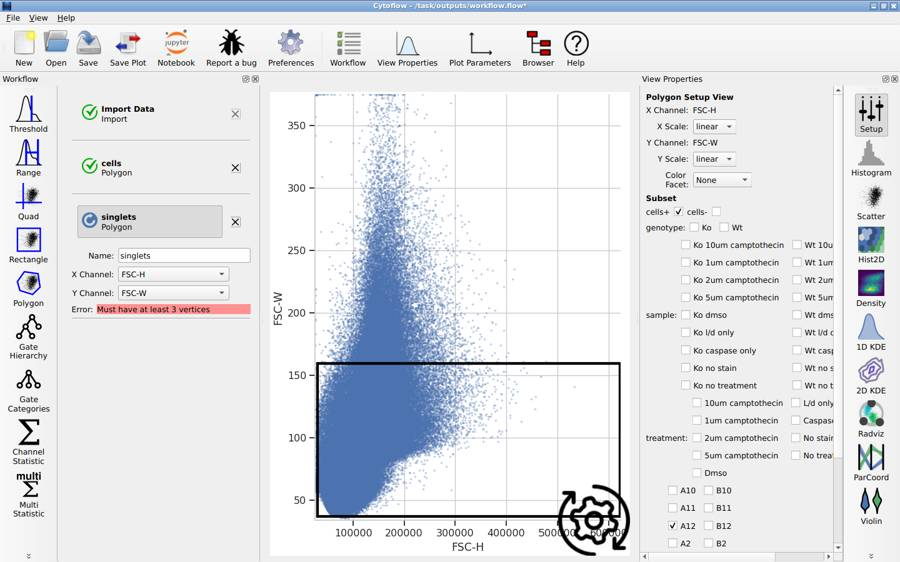
text(await tools.exec_command({cmd:"cu key ctrl+s && cu click 46 248 && sleep 1 && cu screenshot /tmp/livenew.png","max_output_tokens":1000}));
image((await tools.view_image({path:"/tmp/livenew.png"})).image_url);
Script completed Wall time 1.3 seconds Output:
{"chunk_id":"07fefe","wall_time_seconds":1.096891443,"exit_code":0,"original_token_count":5,"output":"/tmp/livenew.png\n"}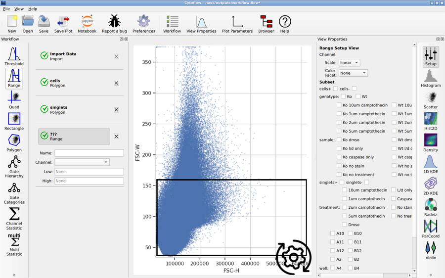
text(await tools.exec_command({cmd:"cu click 268 495 && cu type live && cu click 342 525 && cu key Home && cu key Down && cu key Down && cu key Down && cu key Down && cu key Return && cu click 1155 203 && cu key End && cu key Return && cu click 1086 287 && cu click 1106 590 && cu click 1190 235 && sleep 0.5 && cu screenshot /tmp/livecolor.png","max_output_tokens":1000}));
image((await tools.view_image({path:"/tmp/livecolor.png"})).image_url);
Script completed Wall time 1.5 seconds Output:
{"chunk_id":"000b37","wall_time_seconds":1.334769448,"exit_code":0,"original_token_count":5,"output":"/tmp/livecolor.png\n"}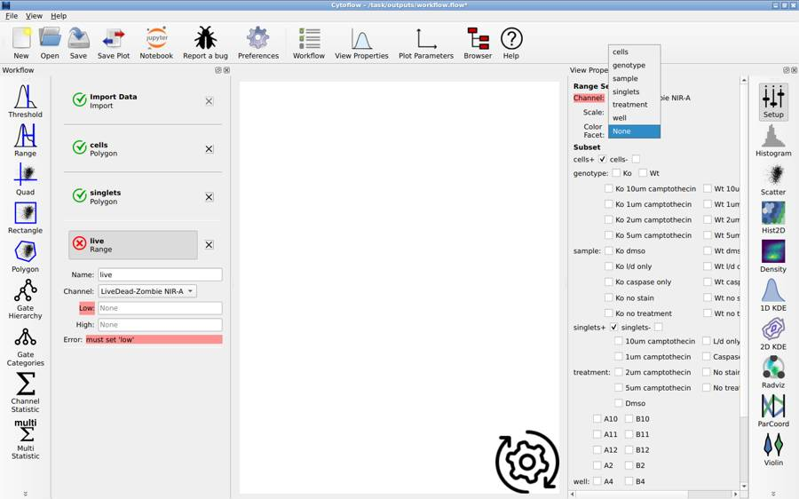
text(await tools.exec_command({cmd:"cu click 1119 211 && cu click 1274 614 && cu click 1274 642 && cu click 1274 670 && sleep 25 && cu screenshot /tmp/livecontrols.png","yield_time_ms":30000,"max_output_tokens":1000}));
image((await tools.view_image({path:"/tmp/livecontrols.png"})).image_url);
Script completed Wall time 25.6 seconds Output:
{"chunk_id":"159e7c","wall_time_seconds":25.383101439,"exit_code":0,"original_token_count":6,"output":"/tmp/livecontrols.png\n"}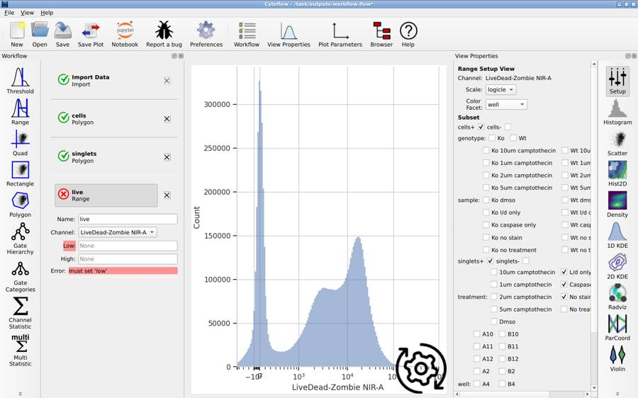
text(await tools.exec_command({cmd:"cu click 275 555 && cu key ctrl+a && cu type -1000000 && cu key Tab && sleep 20 && cu screenshot /tmp/livecontrolsdone.png","yield_time_ms":30000,"max_output_tokens":1000}));
image((await tools.view_image({path:"/tmp/livecontrolsdone.png"})).image_url);
Script completed Wall time 20.5 seconds Output:
{"chunk_id":"1e10c6","wall_time_seconds":20.313973311,"exit_code":0,"original_token_count":7,"output":"/tmp/livecontrolsdone.png\n"}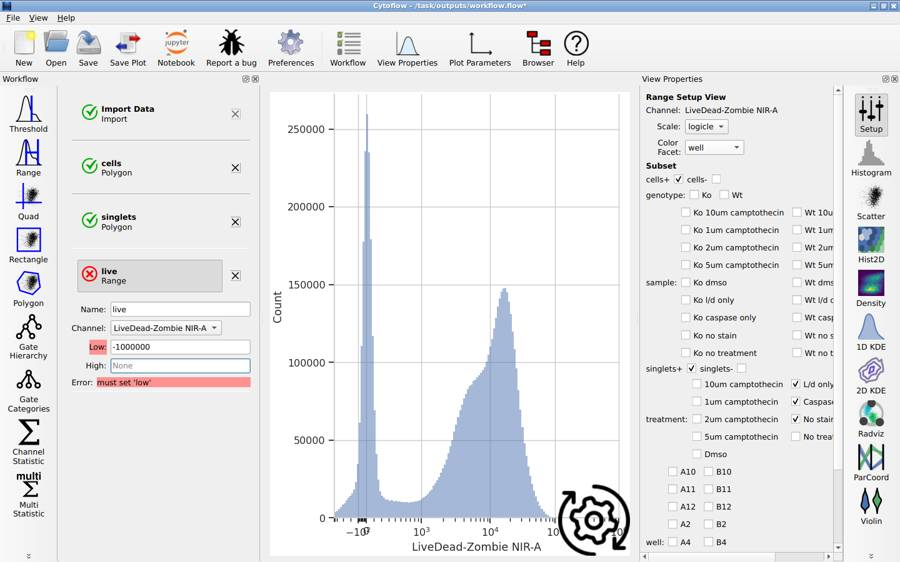
{
"duration_ms": 40000
}Wall time: 40.0062 seconds Sleep completed.
text(await tools.exec_command({cmd:"cu screenshot /tmp/controlfinal.png","max_output_tokens":1000}));
image((await tools.view_image({path:"/tmp/controlfinal.png"})).image_url);
Script completed Wall time 0.2 seconds Output:
{"chunk_id":"69e939","wall_time_seconds":0.000006301,"exit_code":0,"original_token_count":6,"output":"/tmp/controlfinal.png\n"}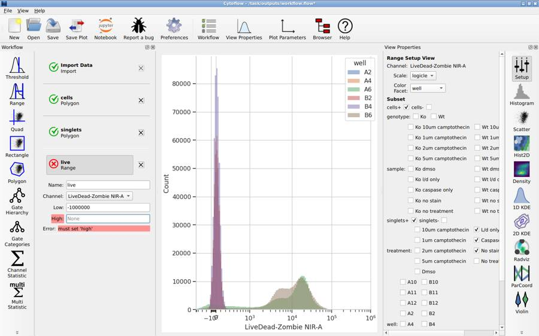
text(await tools.exec_command({cmd:"cu click 272 585 && cu key ctrl+a && cu type 8000 && cu key Tab && cu click 45 179 && sleep 1 && cu screenshot /tmp/caspnew.png","max_output_tokens":1000}));
image((await tools.view_image({path:"/tmp/caspnew.png"})).image_url);
Script completed Wall time 1.5 seconds Output:
{"chunk_id":"e60bb2","wall_time_seconds":1.319776531,"exit_code":0,"original_token_count":5,"output":"/tmp/caspnew.png\n"}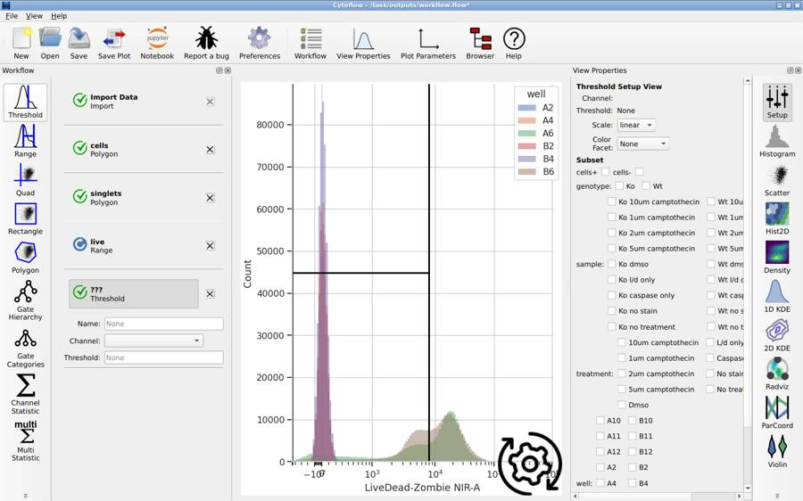
text(await tools.exec_command({cmd:"cu click 276 582 && cu key ctrl+a && cu type caspase_positive && cu click 352 612 && cu key Home && cu key Return && cu click 1166 225 && cu key End && cu key Return && sleep 20 && cu screenshot /tmp/caspset.png","yield_time_ms":30000,"max_output_tokens":1000}));
image((await tools.view_image({path:"/tmp/caspset.png"})).image_url);
Script completed Wall time 21.0 seconds Output:
{"chunk_id":"e9f686","wall_time_seconds":20.776252912,"exit_code":0,"original_token_count":5,"output":"/tmp/caspset.png\n"}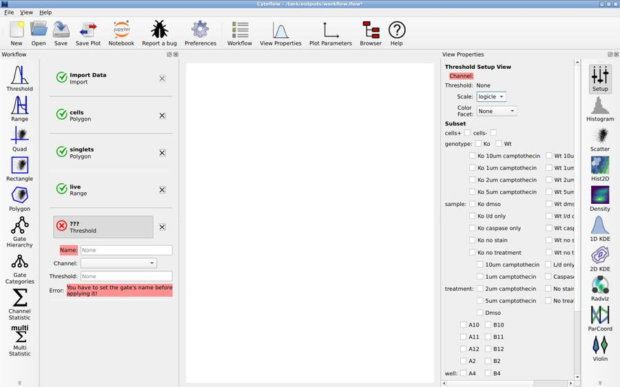
text(await tools.exec_command({cmd:"cu click 276 582 && cu key ctrl+a && cu paste caspase_positive && cu key Tab && sleep 0.8 && cu click 353 612 && sleep 0.5 && cu screenshot /tmp/caspmenu.png","max_output_tokens":1000}));
image((await tools.view_image({path:"/tmp/caspmenu.png"})).image_url);
Script completed Wall time 3.0 seconds Output:
{"chunk_id":"15a026","wall_time_seconds":2.843869409,"exit_code":0,"original_token_count":5,"output":"/tmp/caspmenu.png\n"}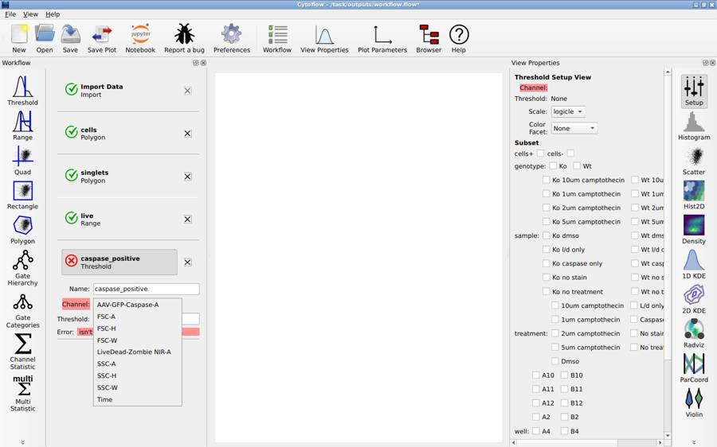
text(await tools.exec_command({cmd:"cu click 273 614 && cu click 294 642 && cu paste 1000 && cu key Tab && sleep 0.8 && cu click 240 525 && sleep 0.8 && cu click 1190 257 && sleep 0.4 && cu screenshot /tmp/casphue.png","max_output_tokens":1000}));
image((await tools.view_image({path:"/tmp/casphue.png"})).image_url);
Script completed Wall time 3.9 seconds Output:
{"chunk_id":"5357ac","wall_time_seconds":3.726187751,"exit_code":0,"original_token_count":5,"output":"/tmp/casphue.png\n"}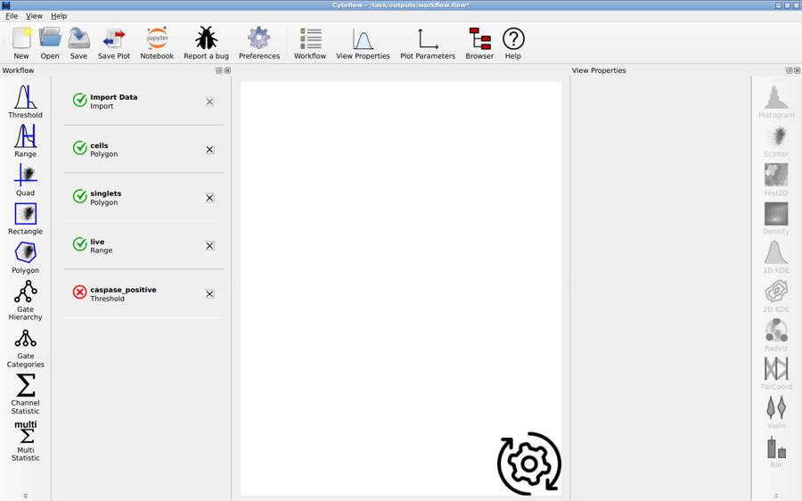
text(await tools.exec_command({cmd:"cu click 242 524 && sleep 1 && cu screenshot /tmp/caspselect.png","max_output_tokens":1000}));
image((await tools.view_image({path:"/tmp/caspselect.png"})).image_url);
Script completed Wall time 1.2 seconds Output:
{"chunk_id":"71e40c","wall_time_seconds":1.057558234,"exit_code":0,"original_token_count":5,"output":"/tmp/caspselect.png\n"}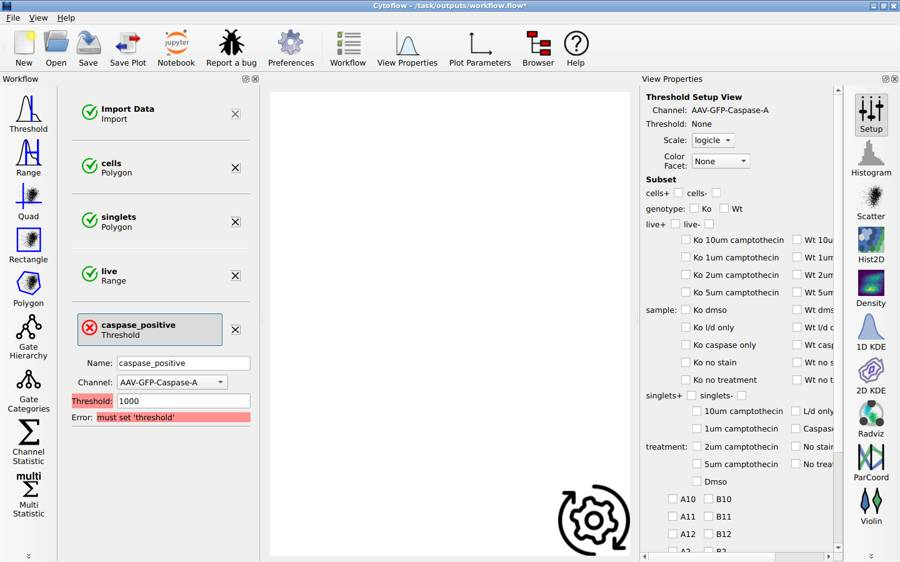
text(await tools.exec_command({cmd:"cu click 293 643 && cu key Return && cu click 1086 308 && cu click 1107 632 && cu click 1190 257 && cu key End && cu key Up && cu key Return && cu click 1274 658 && cu click 1274 686 && cu click 1274 713 && sleep 25 && cu screenshot /tmp/caspcontrols.png","yield_time_ms":30000,"max_output_tokens":1000}));
image((await tools.view_image({path:"/tmp/caspcontrols.png"})).image_url);
Script completed Wall time 26.0 seconds Output:
{"chunk_id":"4ee3f3","wall_time_seconds":25.766624678,"exit_code":0,"original_token_count":6,"output":"/tmp/caspcontrols.png\n"}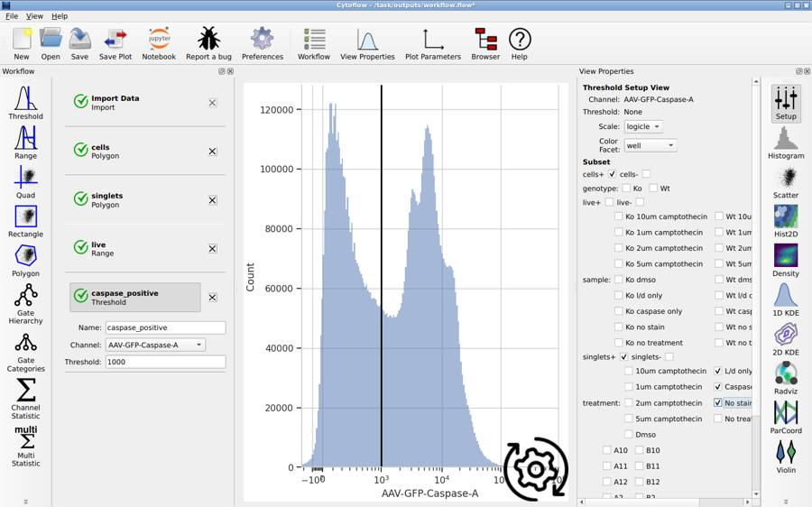
{
"duration_ms": 30000
}Wall time: 30.0062 seconds Sleep completed.
text(await tools.exec_command({cmd:"cu screenshot /tmp/caspcontrolfinal.png","max_output_tokens":1000}));
image((await tools.view_image({path:"/tmp/caspcontrolfinal.png"})).image_url);
Script completed Wall time 0.2 seconds Output:
{"chunk_id":"7e0119","wall_time_seconds":0.000006766,"exit_code":0,"original_token_count":7,"output":"/tmp/caspcontrolfinal.png\n"}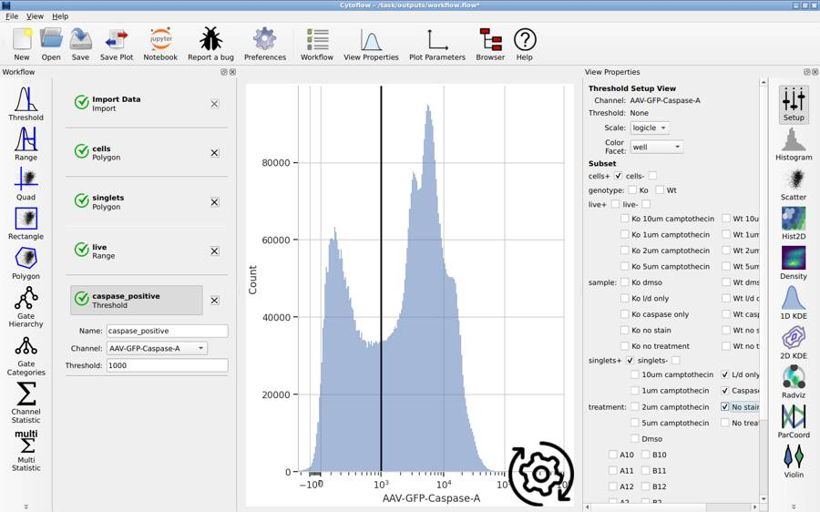
{
"duration_ms": 45000
}Wall time: 45.0041 seconds Sleep completed.
text(await tools.exec_command({cmd:"cu screenshot /tmp/caspactual.png","max_output_tokens":1000}));
image((await tools.view_image({path:"/tmp/caspactual.png"})).image_url);
Script completed Wall time 0.2 seconds Output:
{"chunk_id":"bc2318","wall_time_seconds":0.000006853,"exit_code":0,"original_token_count":5,"output":"/tmp/caspactual.png\n"}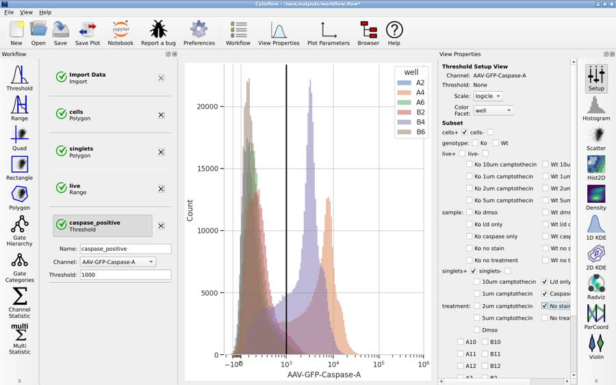
text(await tools.exec_command({cmd:"cu click 294 642 && cu key ctrl+a && cu paste 2000 && cu key Return && cu key ctrl+s && cu click 1393 314 && sleep 1 && cu screenshot /tmp/scatterconfig.png","max_output_tokens":1000}));
image((await tools.view_image({path:"/tmp/scatterconfig.png"})).image_url);
Script completed Wall time 2.8 seconds Output:
{"chunk_id":"c2ffd3","wall_time_seconds":2.573784581,"exit_code":0,"original_token_count":6,"output":"/tmp/scatterconfig.png\n"}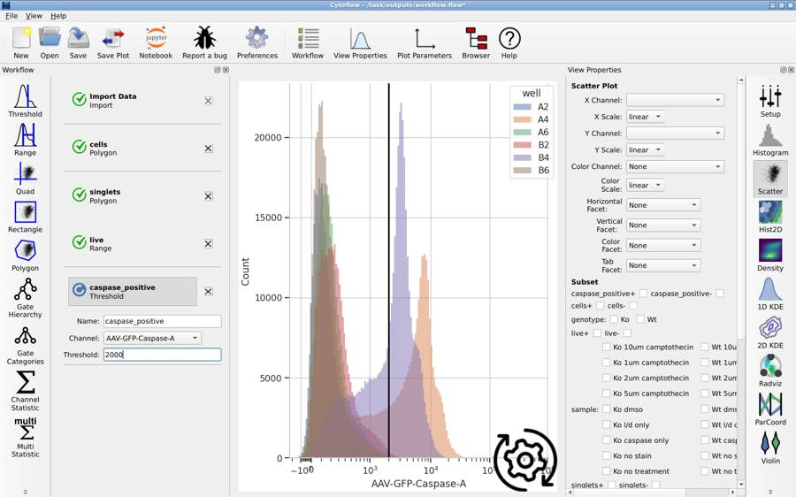
text(await tools.exec_command({cmd:"cu click 1297 181 && cu key Home && cu key Return && cu click 1190 210 && cu key End && cu key Return && cu click 1297 241 && cu key Home && cu key Down && cu key Down && cu key Down && cu key Down && cu key Return && cu click 1190 270 && cu key End && cu key Return && cu click 1257 371 && cu key Home && cu key Down && cu key Down && cu key Return && cu click 1257 407 && cu key End && cu key Up && cu key Up && cu key Return && cu click 1085 552 && cu click 1105 877 && cu scroll 1222 791 down 4 && sleep 1 && cu screenshot /tmp/scattersubset.png","max_output_tokens":1000}));
image((await tools.view_image({path:"/tmp/scattersubset.png"})).image_url);
Script completed Wall time 2.7 seconds Output:
{"chunk_id":"67c12a","wall_time_seconds":2.547033719,"exit_code":0,"original_token_count":6,"output":"/tmp/scattersubset.png\n"}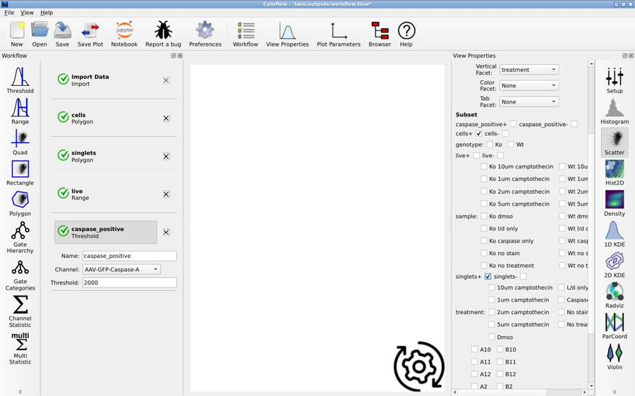
text(await tools.exec_command({cmd:"cu click 1273 652 && cu click 1273 680 && cu click 1273 709 && cu click 557 70 && sleep 25 && cu screenshot /tmp/controlscatterpending.png","yield_time_ms":30000,"max_output_tokens":1000}));
image((await tools.view_image({path:"/tmp/controlscatterpending.png"})).image_url);
Script completed Wall time 25.6 seconds Output:
{"chunk_id":"133b33","wall_time_seconds":25.391765607,"exit_code":0,"original_token_count":8,"output":"/tmp/controlscatterpending.png\n"}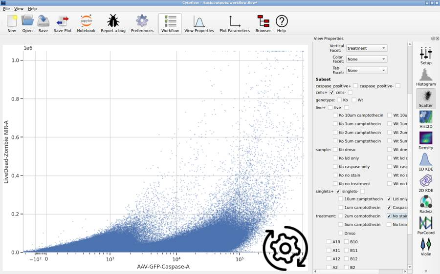
{
"duration_ms": 45000
}Wall time: 45.0032 seconds Sleep completed.
text(await tools.exec_command({cmd:"cu screenshot /tmp/controlscatter2.png","max_output_tokens":1000}));
image((await tools.view_image({path:"/tmp/controlscatter2.png"})).image_url);
Script completed Wall time 0.2 seconds Output:
{"chunk_id":"7088c4","wall_time_seconds":0.000006402,"exit_code":0,"original_token_count":7,"output":"/tmp/controlscatter2.png\n"}text(await tools.clock__curr_time({}));
text(await tools.exec_command({cmd:"cu key ctrl+s","max_output_tokens":1000}));
Script completed
Wall time 0.1 seconds
Output:
{"current_time":"2026-11-06 00:47:21 UTC"}
{"chunk_id":"cc38dd","wall_time_seconds":0.000005654,"exit_code":0,"original_token_count":0,"output":""}text(await tools.exec_command({cmd:"cu screenshot /tmp/controlscatter3.png","max_output_tokens":1000}));
image((await tools.view_image({path:"/tmp/controlscatter3.png"})).image_url);
Script completed Wall time 0.2 seconds Output:
{"chunk_id":"f4edcf","wall_time_seconds":0.000006426,"exit_code":0,"original_token_count":7,"output":"/tmp/controlscatter3.png\n"}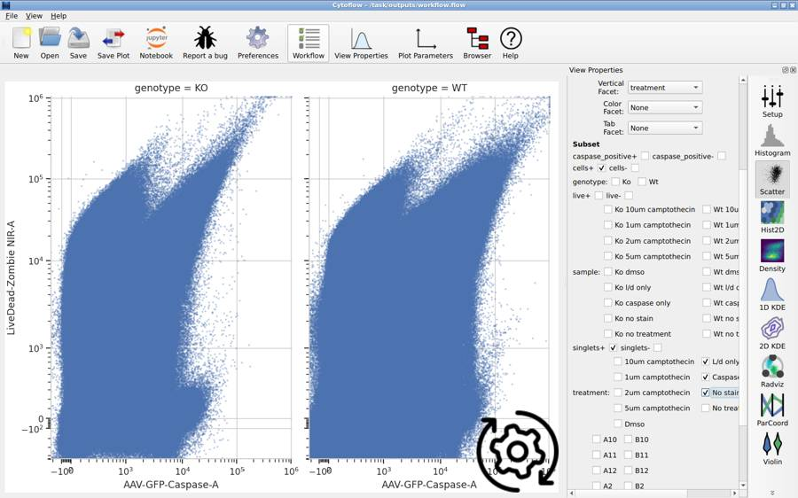
{
"duration_ms": 45000
}Wall time: 45.0038 seconds Sleep completed.
text(await tools.exec_command({cmd:"cu screenshot /tmp/controlscatter4.png","max_output_tokens":1000}));
image((await tools.view_image({path:"/tmp/controlscatter4.png"})).image_url);
Script completed Wall time 0.2 seconds Output:
{"chunk_id":"6f9361","wall_time_seconds":0.000007404,"exit_code":0,"original_token_count":7,"output":"/tmp/controlscatter4.png\n"}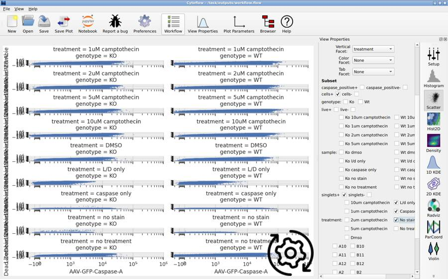
text(await tools.exec_command({cmd:"cu click 558 71 && cu click 47 692 && sleep 1 && cu screenshot /tmp/statnew.png","max_output_tokens":1000}));
image((await tools.view_image({path:"/tmp/statnew.png"})).image_url);
Script completed Wall time 1.4 seconds Output:
{"chunk_id":"ac42f4","wall_time_seconds":1.167908965,"exit_code":0,"original_token_count":5,"output":"/tmp/statnew.png\n"}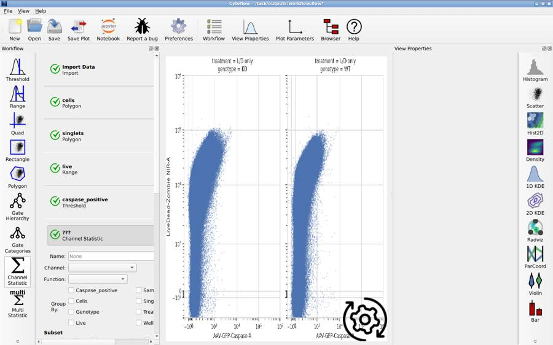
text(await tools.exec_command({cmd:"cu click 279 668 && cu key ctrl+a && cu paste count_all && cu key Return && cu click 343 697 && cu key Home && cu key Down && cu key Return && cu click 320 727 && sleep 0.5 && cu screenshot /tmp/statfunction.png","max_output_tokens":1000}));
image((await tools.view_image({path:"/tmp/statfunction.png"})).image_url);
Script completed Wall time 2.4 seconds Output:
{"chunk_id":"202fda","wall_time_seconds":2.197299061,"exit_code":0,"original_token_count":6,"output":"/tmp/statfunction.png\n"}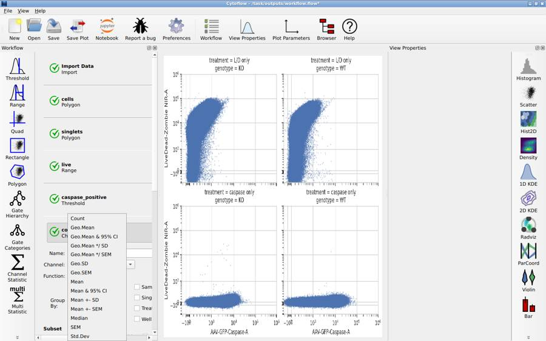
text(await tools.exec_command({cmd:"cu click 206 576 && cu click 360 841 && cu scroll 1394 798 down 6 && sleep 1 && cu screenshot /tmp/tableicons.png","max_output_tokens":1000}));
image((await tools.view_image({path:"/tmp/tableicons.png"})).image_url);
Script completed Wall time 2.0 seconds Output:
{"chunk_id":"395831","wall_time_seconds":1.777988071,"exit_code":0,"original_token_count":5,"output":"/tmp/tableicons.png\n"}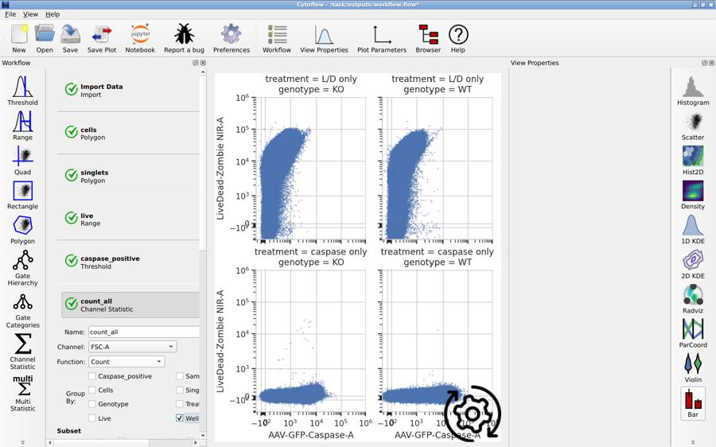
text(await tools.exec_command({cmd:"cu click 1394 891 && sleep 0.3 && cu click 1394 891 && sleep 0.3 && cu click 1394 891 && sleep 0.3 && cu click 1394 891 && cu screenshot /tmp/moreviews.png","max_output_tokens":1000}));
image((await tools.view_image({path:"/tmp/moreviews.png"})).image_url);
Script completed Wall time 1.5 seconds Output:
{"chunk_id":"4ed79a","wall_time_seconds":1.283470713,"exit_code":0,"original_token_count":5,"output":"/tmp/moreviews.png\n"}text(await tools.exec_command({cmd:"cu move 1395 891 && sleep 3 && cu screenshot /tmp/scrollviews.png","max_output_tokens":1000}));
image((await tools.view_image({path:"/tmp/scrollviews.png"})).image_url);
Script completed Wall time 3.1 seconds Output:
{"chunk_id":"62bf6f","wall_time_seconds":2.959951903,"exit_code":0,"original_token_count":6,"output":"/tmp/scrollviews.png\n"}text(await tools.exec_command({cmd:"cu click 1395 889 && sleep 1 && cu screenshot /tmp/viewoverflow.png","max_output_tokens":1000}));
image((await tools.view_image({path:"/tmp/viewoverflow.png"})).image_url);
Script completed Wall time 1.3 seconds Output:
{"chunk_id":"bfb117","wall_time_seconds":1.063641041,"exit_code":0,"original_token_count":6,"output":"/tmp/viewoverflow.png\n"}text(await tools.exec_command({cmd:"cu click 1399 532 && sleep 1 && cu screenshot /tmp/longtable.png","max_output_tokens":1000}));
image((await tools.view_image({path:"/tmp/longtable.png"})).image_url);
Script completed Wall time 1.2 seconds Output:
{"chunk_id":"2a43f0","wall_time_seconds":1.050857746,"exit_code":0,"original_token_count":5,"output":"/tmp/longtable.png\n"}text(await tools.exec_command({cmd:"cu click 1180 181 && cu key Home && cu key Return && sleep 1 && cu screenshot /tmp/countalltable.png","max_output_tokens":1000}));
image((await tools.view_image({path:"/tmp/countalltable.png"})).image_url);
Script completed Wall time 1.3 seconds Output:
{"chunk_id":"e5f6a9","wall_time_seconds":1.093188587,"exit_code":0,"original_token_count":6,"output":"/tmp/countalltable.png\n"}text(await tools.exec_command({cmd:"cu click 1180 181 && cu key End && cu key Return && sleep 1 && cu click 1140 211 && sleep 0.7 && cu screenshot /tmp/exportall.png","max_output_tokens":1000}));
image((await tools.view_image({path:"/tmp/exportall.png"})).image_url);
Script completed Wall time 2.1 seconds Output:
{"chunk_id":"3e0826","wall_time_seconds":1.897852951,"exit_code":0,"original_token_count":5,"output":"/tmp/exportall.png\n"}text(await tools.exec_command({cmd:"cu click 664 567 && cu paste /task/outputs/cytoflow_count_all.csv && cu click 982 568 && sleep 0.6 && cu key ctrl+s","max_output_tokens":1000}));
text(await tools.exec_command({cmd:"cat /task/outputs/cytoflow_count_all.csv","max_output_tokens":2000}));
Script completed
Wall time 2.2 seconds
Output:
{"chunk_id":"bdbcfd","wall_time_seconds":2.031005163,"exit_code":0,"original_token_count":0,"output":""}
{"chunk_id":"33ba0b","wall_time_seconds":0.00000666,"exit_code":0,"original_token_count":59,"output":"well,FSC-A\nA10,552590.0\nA11,377220.0\nA12,409074.0\nA2,365736.0\nA4,440820.0\nA6,412724.0\nA7,395514.0\nA8,384992.0\nA9,428254.0\nB10,539106.0\nB11,561171.0\nB12,538223.0\nB2,392795.0\nB4,605670.0\nB6,457465.0\nB7,612174.0\nB8,493435.0\nB9,425772.0\n"}text(await tools.exec_command({cmd:"cu click 47 693 && cu scroll 301 768 down 8 && sleep 1 && cu screenshot /tmp/countcellsnew.png","max_output_tokens":1000}));
image((await tools.view_image({path:"/tmp/countcellsnew.png"})).image_url);
Script completed Wall time 2.1 seconds Output:
{"chunk_id":"763ac7","wall_time_seconds":1.863300058,"exit_code":0,"original_token_count":6,"output":"/tmp/countcellsnew.png\n"}text(await tools.exec_command({cmd:"cu click 276 255 && cu key ctrl+a && cu paste count_cells && cu key Return && cu click 343 285 && cu key Home && cu key Down && cu key Return && cu click 320 315 && cu key Home && cu key Return && cu click 360 428 && cu scroll 310 754 down 6 && sleep 1 && cu screenshot /tmp/countcellssubset.png","max_output_tokens":1000}));
image((await tools.view_image({path:"/tmp/countcellssubset.png"})).image_url);
Script completed Wall time 3.6 seconds Output:
{"chunk_id":"0a0ee5","wall_time_seconds":3.453610784,"exit_code":0,"original_token_count":7,"output":"/tmp/countcellssubset.png\n"}text(await tools.exec_command({cmd:"cu click 166 818 && cu scroll 309 320 up 6 && sleep 1 && cu screenshot /tmp/countcellsconfig.png","max_output_tokens":1000}));
image((await tools.view_image({path:"/tmp/countcellsconfig.png"})).image_url);
Script completed Wall time 1.8 seconds Output:
{"chunk_id":"56e900","wall_time_seconds":1.6654130980000001,"exit_code":0,"original_token_count":7,"output":"/tmp/countcellsconfig.png\n"}text(await tools.exec_command({cmd:"cu click 1394 890 && sleep 0.4 && cu click 1399 532 && sleep 0.4 && cu click 1180 181 && cu key End && cu key Return && sleep 2 && cu screenshot /tmp/countcellsresult.png","max_output_tokens":1000}));
image((await tools.view_image({path:"/tmp/countcellsresult.png"})).image_url);
Script completed Wall time 3.3 seconds Output:
{"chunk_id":"582be2","wall_time_seconds":3.106371928,"exit_code":0,"original_token_count":7,"output":"/tmp/countcellsresult.png\n"}text(await tools.exec_command({cmd:"cu click 47 693 && sleep 0.5 && cu scroll 310 755 down 10 && sleep 0.5 && cu screenshot /tmp/newstatscroll.png","max_output_tokens":1000}));
image((await tools.view_image({path:"/tmp/newstatscroll.png"})).image_url);
Script completed Wall time 2.2 seconds Output:
{"chunk_id":"ccade7","wall_time_seconds":2.064142105,"exit_code":0,"original_token_count":6,"output":"/tmp/newstatscroll.png\n"}text(await tools.exec_command({cmd:"cu click 166 812 && cu click 187 835 && cu scroll 312 321 up 6 && sleep 1 && cu screenshot /tmp/singletstatconfig.png","max_output_tokens":1000}));
image((await tools.view_image({path:"/tmp/singletstatconfig.png"})).image_url);
Script completed Wall time 2.0 seconds Output:
{"chunk_id":"614455","wall_time_seconds":1.7684143209999998,"exit_code":0,"original_token_count":7,"output":"/tmp/singletstatconfig.png\n"}text(await tools.exec_command({cmd:"cu click 274 249 && cu key ctrl+a && cu paste count_singlets && cu key Return && cu click 342 279 && cu key Home && cu key Down && cu key Return && cu click 319 310 && cu key Home && cu key Return && cu click 361 422 && sleep 1 && cu click 47 693 && sleep 0.5 && cu scroll 310 759 down 12 && sleep 0.5 && cu screenshot /tmp/countlivenew.png","max_output_tokens":1000}));
image((await tools.view_image({path:"/tmp/countlivenew.png"})).image_url);
Script completed Wall time 5.3 seconds Output:
{"chunk_id":"445c18","wall_time_seconds":5.16334032,"exit_code":0,"original_token_count":6,"output":"/tmp/countlivenew.png\n"}text(await tools.exec_command({cmd:"cu click 166 836 && cu click 187 857 && cu scroll 309 302 up 6 && sleep 1 && cu screenshot /tmp/livestatconfig.png","max_output_tokens":1000}));
image((await tools.view_image({path:"/tmp/livestatconfig.png"})).image_url);
Script completed Wall time 2.0 seconds Output:
{"chunk_id":"fce131","wall_time_seconds":1.774111275,"exit_code":0,"original_token_count":6,"output":"/tmp/livestatconfig.png\n"}text(await tools.exec_command({cmd:"cu click 275 271 && cu key ctrl+a && cu paste count_live && cu key Return && cu click 343 301 && cu key Home && cu key Down && cu key Return && cu click 319 332 && cu key Home && cu key Return && cu click 361 445 && cu click 161 514 && sleep 1 && cu click 47 692 && sleep 0.6 && cu scroll 310 759 down 14 && sleep 0.5 && cu screenshot /tmp/markerstatnew.png","max_output_tokens":1000}));
image((await tools.view_image({path:"/tmp/markerstatnew.png"})).image_url);
Script completed Wall time 5.7 seconds Output:
{"chunk_id":"96b6ce","wall_time_seconds":5.555978994,"exit_code":0,"original_token_count":6,"output":"/tmp/markerstatnew.png\n"}text(await tools.exec_command({cmd:"cu click 166 835 && cu click 187 857 && cu scroll 309 302 up 6 && sleep 0.7 && cu screenshot /tmp/markerstatconfig.png","max_output_tokens":1000}));
image((await tools.view_image({path:"/tmp/markerstatconfig.png"})).image_url);
Script completed Wall time 1.6 seconds Output:
{"chunk_id":"6faa0d","wall_time_seconds":1.467133238,"exit_code":0,"original_token_count":7,"output":"/tmp/markerstatconfig.png\n"}text(await tools.exec_command({cmd:"cu click 275 271 && cu key ctrl+a && cu paste count_marker && cu key Return && cu click 343 301 && cu key Home && cu key Down && cu key Return && cu click 319 332 && cu key Home && cu key Return && cu click 361 445 && cu click 161 514 && cu click 244 491 && cu key ctrl+s && sleep 1 && cu click 1394 890 && sleep 0.4 && cu click 1399 532 && sleep 0.5 && cu click 1182 181 && sleep 0.3 && cu screenshot /tmp/statlist.png","max_output_tokens":1000}));
image((await tools.view_image({path:"/tmp/statlist.png"})).image_url);
Script completed Wall time 4.8 seconds Output:
{"chunk_id":"46fdfb","wall_time_seconds":4.613626224,"exit_code":0,"original_token_count":5,"output":"/tmp/statlist.png\n"}text(await tools.exec_command({cmd:"cu click 1146 230 && sleep 0.6 && cu click 1142 210 && sleep 0.6 && cu paste /task/outputs/cytoflow_count_cells.csv && cu key Return && sleep 2 && cu screenshot /tmp/countcellssaved.png","max_output_tokens":1000}));
image((await tools.view_image({path:"/tmp/countcellssaved.png"})).image_url);
Script completed Wall time 4.9 seconds Output:
{"chunk_id":"62c031","wall_time_seconds":4.712507042,"exit_code":0,"original_token_count":7,"output":"/tmp/countcellssaved.png\n"}{
"duration_ms": 45000
}Wall time: 45.0038 seconds Sleep completed.
text(await tools.exec_command({cmd:"cu screenshot /tmp/statready.png","max_output_tokens":1000}));
image((await tools.view_image({path:"/tmp/statready.png"})).image_url);
Script completed Wall time 0.2 seconds Output:
{"chunk_id":"7829c7","wall_time_seconds":0.000006285,"exit_code":0,"original_token_count":5,"output":"/tmp/statready.png\n"}text(await tools.exec_command({cmd:"cu click 1152 211 && sleep 0.7 && cu paste /task/outputs/cytoflow_count_cells.csv && cu key Return && sleep 0.7 && cu click 1206 182 && sleep 0.4 && cu screenshot /tmp/statsmenucomplete.png","max_output_tokens":1000}));
image((await tools.view_image({path:"/tmp/statsmenucomplete.png"})).image_url);
Script completed Wall time 3.5 seconds Output:
{"chunk_id":"9024fa","wall_time_seconds":3.310700482,"exit_code":0,"original_token_count":7,"output":"/tmp/statsmenucomplete.png\n"}text(await tools.exec_command({cmd:"cu click 1153 206 && sleep 0.8 && cu click 1153 211 && sleep 0.6 && cu paste /task/outputs/cytoflow_count_live.csv && cu key Return && sleep 0.7 && cu click 1206 181 && cu key Down && cu key Return && sleep 0.8 && cu click 1153 211 && sleep 0.6 && cu paste /task/outputs/cytoflow_count_marker.csv && cu key Return && sleep 0.7 && cu click 1206 181 && cu key Down && cu key Return && sleep 0.8 && cu click 1153 211 && sleep 0.6 && cu paste /task/outputs/cytoflow_count_singlets.csv && cu key Return && sleep 0.7 && cu screenshot /tmp/countsexported.png","yield_time_ms":10000,"max_output_tokens":1000}));
image((await tools.view_image({path:"/tmp/countsexported.png"})).image_url);
text(await tools.exec_command({cmd:"python - <<'PY'\nimport pandas as pd\nfrom pathlib import Path\np=Path('/task/outputs')\nd={n:pd.read_csv(p/f'cytoflow_count_{n}.csv',index_col=0).iloc[:,0] for n in ['all','cells','singlets','live','marker']}\nt=pd.DataFrame(d)\nt['cells_pct']=100*t.cells/t['all']\nt['singlet_pct']=100*t.singlets/t.cells\nt['live_pct']=100*t.live/t.singlets\nt['marker_pct']=100*t.marker/t.live\nprint(t.round(3).to_string())\nt.to_csv(p/'interim_per_well.csv')\nPY","max_output_tokens":4000}));
Script failed
Wall time 10.2 seconds
Output:
{"chunk_id":"e45529","wall_time_seconds":10.000753993,"session_id":32055,"original_token_count":0,"output":""}
Script error:
unable to locate image at `/tmp/countsexported.png`: No such file or directory (os error 2)text(await tools.write_stdin({session_id:32055,chars:"","yield_time_ms":10000,"max_output_tokens":1000}));
image((await tools.view_image({path:"/tmp/countsexported.png"})).image_url);
text(await tools.exec_command({cmd:"python - <<'PY'\nimport pandas as pd\nfrom pathlib import Path\np=Path('/task/outputs')\nd={n:pd.read_csv(p/f'cytoflow_count_{n}.csv',index_col=0).iloc[:,0] for n in ['all','cells','singlets','live','marker']}\nt=pd.DataFrame(d)\nt['cells_pct']=100*t.cells/t['all']\nt['singlet_pct']=100*t.singlets/t.cells\nt['live_pct']=100*t.live/t.singlets\nt['marker_pct']=100*t.marker/t.live\nprint(t.round(3).to_string())\nt.to_csv(p/'interim_per_well.csv')\nPY","max_output_tokens":4000}));
Script completed Wall time 0.1 seconds Output:
{"chunk_id":"13636f","wall_time_seconds":0.000007088,"exit_code":0,"original_token_count":6,"output":"/tmp/countsexported.png\n"}{"chunk_id":"d4eb5e","wall_time_seconds":0.000007061,"exit_code":127,"original_token_count":12,"output":"/bin/bash: line 1: python: command not found\n"}text(await tools.exec_command({cmd:"python3 - <<'PY'\nimport pandas as pd\nfrom pathlib import Path\np=Path('/task/outputs')\nd={n:pd.read_csv(p/f'cytoflow_count_{n}.csv',index_col=0).iloc[:,0] for n in ['all','cells','singlets','live','marker']}\nt=pd.DataFrame(d)\nt['cells_pct']=100*t.cells/t['all']\nt['singlet_pct']=100*t.singlets/t.cells\nt['live_pct']=100*t.live/t.singlets\nt['marker_pct']=100*t.marker/t.live\nprint(t.round(3).to_string())\nt.to_csv(p/'interim_per_well.csv')\nPY","max_output_tokens":4000}));
Script completed
Wall time 0.9 seconds
Output:
{"chunk_id":"b23856","wall_time_seconds":0.757553305,"exit_code":0,"original_token_count":505,"output":" all cells singlets live marker cells_pct singlet_pct live_pct marker_pct\nwell \nA10 552590.0 442600.0 410056.0 196442.0 106705.0 80.096 92.647 47.906 54.319\nA11 377220.0 305646.0 290723.0 122650.0 39180.0 81.026 95.118 42.188 31.945\nA12 409074.0 340962.0 311881.0 114361.0 48041.0 83.350 91.471 36.668 42.008\nA2 365736.0 291487.0 273782.0 273782.0 235.0 79.699 93.926 100.000 0.086\nA4 440820.0 357037.0 335924.0 335923.0 232563.0 80.994 94.087 100.000 69.231\nA6 412724.0 330340.0 311697.0 130752.0 37.0 80.039 94.356 41.948 0.028\nA7 395514.0 324883.0 308760.0 109010.0 51632.0 82.142 95.037 35.306 47.364\nA8 384992.0 316975.0 302124.0 119939.0 65037.0 82.333 95.315 39.699 54.225\nA9 428254.0 344952.0 325462.0 135726.0 65693.0 80.548 94.350 41.703 48.401\nB10 539106.0 422209.0 405201.0 169101.0 55649.0 78.317 95.972 41.733 32.909\nB11 561171.0 435735.0 415538.0 277349.0 90830.0 77.647 95.365 66.745 32.749\nB12 538223.0 421605.0 401707.0 297547.0 123465.0 78.333 95.280 74.071 41.494\nB2 392795.0 319766.0 310191.0 310134.0 1584.0 81.408 97.006 99.982 0.511\nB4 605670.0 491832.0 467761.0 467754.0 281717.0 81.205 95.106 99.999 60.228\nB6 457465.0 354423.0 340626.0 139011.0 9.0 77.475 96.107 40.810 0.006\nB7 612174.0 482341.0 457952.0 209165.0 71339.0 78.791 94.944 45.674 34.107\nB8 493435.0 391374.0 376378.0 143116.0 36124.0 79.316 96.168 38.025 25.241\nB9 425772.0 327976.0 318272.0 142436.0 38490.0 77.031 97.041 44.753 27.023\n"}text(await tools.exec_command({cmd:"cu click 44 178 && sleep 0.6 && cu scroll 310 749 down 20 && sleep 0.5 && cu click 1394 890 && sleep 0.4 && cu screenshot /tmp/helpernew.png","max_output_tokens":1000}));
image((await tools.view_image({path:"/tmp/helpernew.png"})).image_url);
Script completed Wall time 3.9 seconds Output:
{"chunk_id":"691caa","wall_time_seconds":3.67629901,"exit_code":0,"original_token_count":5,"output":"/tmp/helpernew.png\n"}text(await tools.exec_command({cmd:"cu click 1400 596 && cu click 274 770 && cu key ctrl+a && cu paste caspase_singlets && cu key Return && cu click 351 801 && cu key Home && cu key Return && cu click 276 832 && cu key ctrl+a && cu paste 2000 && cu key Return && sleep 1 && cu click 47 694 && sleep 0.7 && cu scroll 311 757 down 20 && sleep 0.5 && cu screenshot /tmp/secondstatnew.png","max_output_tokens":1000}));
image((await tools.view_image({path:"/tmp/secondstatnew.png"})).image_url);
Script completed Wall time 7.7 seconds Output:
{"chunk_id":"b4a317","wall_time_seconds":7.474657021,"exit_code":0,"original_token_count":6,"output":"/tmp/secondstatnew.png\n"}text(await tools.exec_command({cmd:"cu click 166 812 && cu click 187 835 && cu scroll 312 309 up 7 && sleep 0.7 && cu screenshot /tmp/secondstatconfig.png","max_output_tokens":1000}));
image((await tools.view_image({path:"/tmp/secondstatconfig.png"})).image_url);
Script completed Wall time 1.7 seconds Output:
{"chunk_id":"69a654","wall_time_seconds":1.5613701290000002,"exit_code":0,"original_token_count":7,"output":"/tmp/secondstatconfig.png\n"}text(await tools.exec_command({cmd:"cu click 276 249 && cu key ctrl+a && cu paste count_secondary && cu key Return && cu click 344 279 && cu key Home && cu key Down && cu key Return && cu click 319 310 && cu key Home && cu key Return && cu click 361 423 && cu click 244 470 && cu key ctrl+s && sleep 1 && cu click 1394 890 && sleep 0.4 && cu click 1399 532 && sleep 0.5 && cu screenshot /tmp/secondaryconfigured.png","max_output_tokens":1000}));
image((await tools.view_image({path:"/tmp/secondaryconfigured.png"})).image_url);
Script completed Wall time 4.3 seconds Output:
{"chunk_id":"e41ab3","wall_time_seconds":4.095016289,"exit_code":0,"original_token_count":8,"output":"/tmp/secondaryconfigured.png\n"}text(await tools.exec_command({cmd:"cu click 921 492 && cu scroll 309 300 up 8 && sleep 1 && cu screenshot /tmp/helpercheck.png","max_output_tokens":1000}));
image((await tools.view_image({path:"/tmp/helpercheck.png"})).image_url);
Script completed Wall time 2.0 seconds Output:
{"chunk_id":"98ec4d","wall_time_seconds":1.85755773,"exit_code":0,"original_token_count":6,"output":"/tmp/helpercheck.png\n"}text(await tools.exec_command({cmd:"cu scroll 309 301 up 20 && sleep 1 && cu screenshot /tmp/prevops.png","max_output_tokens":1000}));
image((await tools.view_image({path:"/tmp/prevops.png"})).image_url);
Script completed Wall time 3.1 seconds Output:
{"chunk_id":"c0fab9","wall_time_seconds":2.954383248,"exit_code":0,"original_token_count":5,"output":"/tmp/prevops.png\n"}text(await tools.exec_command({cmd:"cu scroll 122 302 up 18 && sleep 1 && cu screenshot /tmp/prevops2.png","max_output_tokens":1000}));
image((await tools.view_image({path:"/tmp/prevops2.png"})).image_url);
Script completed Wall time 2.9 seconds Output:
{"chunk_id":"68f3ef","wall_time_seconds":2.75161004,"exit_code":0,"original_token_count":5,"output":"/tmp/prevops2.png\n"}text(await tools.exec_command({cmd:"cu scroll 122 741 down 6 && sleep 0.8 && cu screenshot /tmp/helperloc.png","max_output_tokens":1000}));
image((await tools.view_image({path:"/tmp/helperloc.png"})).image_url);
Script completed Wall time 1.5 seconds Output:
{"chunk_id":"88bf4b","wall_time_seconds":1.352445438,"exit_code":0,"original_token_count":5,"output":"/tmp/helperloc.png\n"}text(await tools.exec_command({cmd:"cu click 250 665 && cu scroll 123 746 down 4 && sleep 0.8 && cu screenshot /tmp/helpererror.png","max_output_tokens":1000}));
image((await tools.view_image({path:"/tmp/helpererror.png"})).image_url);
Script completed Wall time 1.4 seconds Output:
{"chunk_id":"aef8c8","wall_time_seconds":1.261735934,"exit_code":0,"original_token_count":6,"output":"/tmp/helpererror.png\n"}text(await tools.exec_command({cmd:"cu click 352 729 && cu key Home && cu key Return && sleep 0.5 && cu click 273 760 && cu key ctrl+a && cu paste 2000 && cu key Return && sleep 1 && cu screenshot /tmp/helperfixed.png","max_output_tokens":1000}));
image((await tools.view_image({path:"/tmp/helperfixed.png"})).image_url);
Script completed Wall time 3.3 seconds Output:
{"chunk_id":"3bcd75","wall_time_seconds":3.073904507,"exit_code":0,"original_token_count":6,"output":"/tmp/helperfixed.png\n"}text(await tools.exec_command({cmd:"cu click 260 839 && cu scroll 122 744 down 12 && sleep 1 && cu screenshot /tmp/secondarybottom.png","max_output_tokens":1000}));
image((await tools.view_image({path:"/tmp/secondarybottom.png"})).image_url);
Script completed Wall time 2.4 seconds Output:
{"chunk_id":"de397b","wall_time_seconds":2.259460569,"exit_code":0,"original_token_count":7,"output":"/tmp/secondarybottom.png\n"}text(await tools.exec_command({cmd:"cu click 361 209 && cu scroll 122 739 down 5 && sleep 0.6 && cu screenshot /tmp/secondarylastsubset.png","max_output_tokens":1000}));
image((await tools.view_image({path:"/tmp/secondarylastsubset.png"})).image_url);
Script completed Wall time 1.3 seconds Output:
{"chunk_id":"cecb67","wall_time_seconds":1.164875085,"exit_code":0,"original_token_count":8,"output":"/tmp/secondarylastsubset.png\n"}text(await tools.exec_command({cmd:"cu click 244 835 && cu key ctrl+s && cu click 1394 890 && sleep 0.5 && cu click 1399 532 && sleep 1 && cu click 1205 181 && sleep 0.4 && cu screenshot /tmp/secondarytablemenu.png","max_output_tokens":1000}));
image((await tools.view_image({path:"/tmp/secondarytablemenu.png"})).image_url);
Script completed Wall time 2.5 seconds Output:
{"chunk_id":"0b3aa6","wall_time_seconds":2.30457633,"exit_code":0,"original_token_count":7,"output":"/tmp/secondarytablemenu.png\n"}text(await tools.exec_command({cmd:"cu key Escape && cu scroll 122 301 up 7 && sleep 1 && cu screenshot /tmp/secondarygroupcheck.png","max_output_tokens":1000}));
image((await tools.view_image({path:"/tmp/secondarygroupcheck.png"})).image_url);
Script completed Wall time 1.9 seconds Output:
{"chunk_id":"894c02","wall_time_seconds":1.673061005,"exit_code":0,"original_token_count":8,"output":"/tmp/secondarygroupcheck.png\n"}text(await tools.exec_command({cmd:"cu click 46 890 && sleep 0.6 && cu screenshot /tmp/moreoperations.png","max_output_tokens":1000}));
image((await tools.view_image({path:"/tmp/moreoperations.png"})).image_url);
Script completed Wall time 0.8 seconds Output:
{"chunk_id":"035891","wall_time_seconds":0.655491736,"exit_code":0,"original_token_count":6,"output":"/tmp/moreoperations.png\n"}text(await tools.web__run({open:[{ref_id:"https://cytoflow.readthedocs.io/en/1.3.2/user_manual/reference/operations/binning.html"}],response_length:"short"}));
text(await tools.exec_command({cmd:"cu click 129 481 && cu scroll 330 747 down 20 && sleep 1 && cu screenshot /tmp/binningnew.png","max_output_tokens":1000}));
image((await tools.view_image({path:"/tmp/binningnew.png"})).image_url);
Script completed Wall time 3.8 seconds Output:
Internal Error ()
citeturn3view0 [wordlim: 200] Source: open({"ref_id":"https://cytoflow.readthedocs.io/en/1.3.2/user_manual/reference/operations/binning.html","lineno":null});
Failed to fetch https://cytoflow.readthedocs.io/en/1.3.2/user_manual/reference/operations/binning.html: Cache miss{"chunk_id":"b2f311","wall_time_seconds":3.069904698,"exit_code":0,"original_token_count":5,"output":"/tmp/binningnew.png\n"}text(await tools.exec_command({cmd:"cu click 275 756 && cu key ctrl+a && cu paste time_bin && cu key Return && cu click 352 786 && cu key End && cu key Return && sleep 20 && cu screenshot /tmp/timeaxis.png","yield_time_ms":30000,"max_output_tokens":1000}));
image((await tools.view_image({path:"/tmp/timeaxis.png"})).image_url);
Script completed Wall time 21.9 seconds Output:
{"chunk_id":"d2d833","wall_time_seconds":21.61993585,"exit_code":0,"original_token_count":5,"output":"/tmp/timeaxis.png\n"}text(await tools.exec_command({cmd:"cu click 275 846 && cu key ctrl+a && cu paste 1000 && cu key Return && cu key ctrl+s && sleep 1 && cu click 47 694 && sleep 0.6 && cu scroll 122 748 down 30 && sleep 0.6 && cu scroll 122 300 up 8 && sleep 0.7 && cu screenshot /tmp/timestatnew.png","max_output_tokens":1000}));
image((await tools.view_image({path:"/tmp/timestatnew.png"})).image_url);
Script completed Wall time 8.5 seconds Output:
{"chunk_id":"e1f0e7","wall_time_seconds":8.295421739,"exit_code":0,"original_token_count":6,"output":"/tmp/timestatnew.png\n"}text(await tools.exec_command({cmd:"cu click 275 346 && cu key ctrl+a && cu paste count_time && cu key Return && cu click 343 376 && cu key Home && cu key Down && cu key Return && cu click 319 406 && cu key Home && cu key Return && cu click 361 520 && sleep 15 && cu click 247 292 && sleep 0.6 && cu click 247 292 && sleep 1 && cu screenshot /tmp/timegroupready.png","yield_time_ms":30000,"max_output_tokens":1000}));
image((await tools.view_image({path:"/tmp/timegroupready.png"})).image_url);
Script completed Wall time 18.8 seconds Output:
{"chunk_id":"ec0ad1","wall_time_seconds":18.652633959,"exit_code":0,"original_token_count":6,"output":"/tmp/timegroupready.png\n"}text(await tools.exec_command({cmd:"cu click 256 839 && cu scroll 122 749 down 20 && cu scroll 122 301 up 8 && sleep 0.7 && cu screenshot /tmp/timegroups.png","max_output_tokens":1000}));
image((await tools.view_image({path:"/tmp/timegroups.png"})).image_url);
Script completed Wall time 3.8 seconds Output:
{"chunk_id":"0325d8","wall_time_seconds":3.570435438,"exit_code":0,"original_token_count":5,"output":"/tmp/timegroups.png\n"}text(await tools.exec_command({cmd:"cu click 361 489 && cu click 361 460 && cu click 361 517 && cu key ctrl+s && cu click 1394 890 && sleep 0.4 && cu click 1399 532 && sleep 0.6 && cu click 1205 181 && cu key End && cu key Return && sleep 8 && cu screenshot /tmp/timecounttable.png","yield_time_ms":15000,"max_output_tokens":1000}));
image((await tools.view_image({path:"/tmp/timecounttable.png"})).image_url);
Script completed Wall time 9.8 seconds Output:
{"chunk_id":"311b4d","wall_time_seconds":9.649540494,"exit_code":0,"original_token_count":6,"output":"/tmp/timecounttable.png\n"}text(await tools.exec_command({cmd:"sleep 15 && cu click 1155 211 && sleep 0.7 && cu paste /task/outputs/cytoflow_count_time.csv && cu key Return && sleep 0.8 && cu click 1221 181 && cu key Up && cu key Up && cu key Return && sleep 0.7 && cu screenshot /tmp/secondaryexportselect.png","yield_time_ms":20000,"max_output_tokens":1000}));
image((await tools.view_image({path:"/tmp/secondaryexportselect.png"})).image_url);
Script completed Wall time 19.0 seconds Output:
{"chunk_id":"71484b","wall_time_seconds":18.769492117,"exit_code":0,"original_token_count":8,"output":"/tmp/secondaryexportselect.png\n"}text(await tools.exec_command({cmd:"cu click 1155 211 && sleep 0.6 && cu paste /task/outputs/cytoflow_count_secondary.csv && cu key Return && sleep 0.7 && cu key ctrl+s","max_output_tokens":1000}));
text(await tools.exec_command({cmd:"python3 - <<'PY'\nimport pandas as pd\nimport matplotlib\nmatplotlib.use('Agg')\nimport matplotlib.pyplot as plt\nfrom pathlib import Path\np=Path('/task/outputs')\nt=pd.read_csv(p/'interim_per_well.csv',index_col=0)\ns=pd.read_csv(p/'cytoflow_count_secondary.csv',index_col=0).iloc[:,0]\nt['caspase_singlets']=s\nt['caspase_all_pct']=100*s/t.singlets\nprint(t[['live_pct','marker_pct','caspase_all_pct']].round(3).to_string())\nt.to_csv(p/'interim_per_well.csv')\na=pd.read_csv(p/'cytoflow_count_time.csv')\nprint(a.head().to_string(index=False))\nfig,axs=plt.subplots(6,3,figsize=(14,16),sharex=True)\nfor (w,g),ax in zip(a.groupby('well',sort=False),axs.flat):\n ax.plot(g['time_bin'],g['FSC-A'],lw=1)\n ax.set_title(w)\n ax.set_ylim(bottom=0)\n ax.set_xlabel('Time (FCS units; bin width 1,000)')\n ax.set_ylabel('Events/bin')\nfig.tight_layout()\nfig.savefig(p/'qc_time_counts.png',dpi=160)\nPY","max_output_tokens":3000}));
image((await tools.view_image({path:"/task/outputs/qc_time_counts.png"})).image_url);
Script completed Wall time 6.6 seconds Output:
{"chunk_id":"6173f6","wall_time_seconds":2.642468558,"exit_code":0,"original_token_count":0,"output":""}{"chunk_id":"d6e14a","wall_time_seconds":3.626983588,"exit_code":0,"original_token_count":255,"output":" live_pct marker_pct caspase_all_pct\nwell \nA10 47.906 54.319 77.554\nA11 42.188 31.945 69.285\nA12 36.668 42.008 76.145\nA2 100.000 0.086 0.086\nA4 100.000 69.231 69.231\nA6 41.948 0.028 0.079\nA7 35.306 47.364 79.259\nA8 39.699 54.225 80.670\nA9 41.703 48.401 77.059\nB10 41.733 32.909 69.189\nB11 66.745 32.749 54.219\nB12 74.071 41.494 56.407\nB2 99.982 0.511 0.516\nB4 99.999 60.228 60.228\nB6 40.810 0.006 0.179\nB7 45.674 34.107 67.820\nB8 38.025 25.241 68.056\nB9 44.753 27.023 63.986\n time_bin well FSC-A\n 0 A10 12999.0\n 0 A11 7868.0\n 0 A12 372.0\n 0 A2 7922.0\n 0 A4 8264.0\n"}text(await tools.exec_command({cmd:"python3 - <<'PY'\nimport pandas as pd\nx=pd.read_csv('/task/outputs/cytoflow_count_time.csv')\nprint(x.pivot(index='time_bin',columns='well',values='FSC-A')[['A12','A11','B12','A8']].to_string())\nPY","max_output_tokens":4000}));
text(await tools.exec_command({cmd:"cu click 1395 314 && sleep 0.5 && cu screenshot /tmp/timeviewnew.png","max_output_tokens":1000}));
image((await tools.view_image({path:"/tmp/timeviewnew.png"})).image_url);
Script completed Wall time 1.2 seconds Output:
{"chunk_id":"d7f1bd","wall_time_seconds":0.315757842,"exit_code":0,"original_token_count":550,"output":"well A12 A11 B12 A8\ntime_bin \n0 372.0 7868.0 11901.0 8458.0\n1000 447.0 8386.0 12648.0 8729.0\n2000 217.0 8319.0 12789.0 8875.0\n3000 48.0 8394.0 12745.0 12591.0\n4000 1.0 8116.0 12298.0 8580.0\n5000 NaN 8182.0 12635.0 8636.0\n6000 47.0 8274.0 12807.0 8712.0\n7000 54.0 8278.0 12293.0 8505.0\n8000 NaN 8278.0 12073.0 8619.0\n9000 50.0 8409.0 12132.0 8628.0\n10000 757.0 8446.0 12133.0 8429.0\n11000 500.0 8397.0 11956.0 8452.0\n12000 3.0 8333.0 11858.0 8316.0\n13000 71.0 7928.0 11837.0 8333.0\n14000 37.0 8118.0 11498.0 8639.0\n15000 28.0 8158.0 11432.0 8795.0\n16000 55.0 8041.0 11214.0 8704.0\n17000 NaN 7673.0 11426.0 8778.0\n18000 63.0 8023.0 11482.0 8783.0\n19000 74.0 8127.0 11506.0 8703.0\n20000 13660.0 8225.0 11353.0 8533.0\n21000 12763.0 8154.0 11424.0 8671.0\n22000 5468.0 8260.0 11616.0 8689.0\n23000 11100.0 8374.0 11642.0 8543.0\n24000 20605.0 8350.0 11686.0 8526.0\n25000 19646.0 8265.0 11661.0 8618.0\n26000 22320.0 8324.0 11840.0 8734.0\n27000 21113.0 8473.0 11438.0 8503.0\n28000 19989.0 8412.0 11368.0 8485.0\n29000 22923.0 8411.0 11081.0 8443.0\n30000 21341.0 8198.0 11067.0 8080.0\n31000 16971.0 8014.0 11394.0 8142.0\n32000 14588.0 8011.0 10809.0 7874.0\n33000 13514.0 7986.0 10773.0 7506.0\n34000 12671.0 7934.0 10722.0 7591.0\n35000 12611.0 7819.0 10871.0 7605.0\n36000 13756.0 7522.0 10818.0 7613.0\n37000 12583.0 7748.0 10529.0 7672.0\n38000 12837.0 7680.0 10068.0 7099.0\n39000 12217.0 7836.0 10488.0 6874.0\n40000 13143.0 7435.0 10625.0 6702.0\n41000 13898.0 7057.0 10774.0 6840.0\n42000 13626.0 7434.0 10359.0 6965.0\n43000 12785.0 7376.0 9237.0 6893.0\n44000 13113.0 7511.0 10340.0 6222.0\n45000 13577.0 7266.0 11323.0 6679.0\n46000 13432.0 6752.0 10354.0 6625.0\n47000 NaN 645.0 1900.0 NaN\n"}{"chunk_id":"e9bb1e","wall_time_seconds":0.560570899,"exit_code":0,"original_token_count":6,"output":"/tmp/timeviewnew.png\n"}text(await tools.exec_command({cmd:"cu click 1274 181 && cu key End && cu key Return && cu click 1274 241 && cu key Home && cu key Down && cu key Return && cu click 1230 305 && cu key g && cu key Return && cu click 1097 844 && cu click 1275 844 && cu click 558 72 && sleep 20 && cu screenshot /tmp/timefsc.png","yield_time_ms":30000,"max_output_tokens":1000}));
image((await tools.view_image({path:"/tmp/timefsc.png"})).image_url);
Script completed Wall time 21.1 seconds Output:
{"chunk_id":"1a9c85","wall_time_seconds":20.776465567,"exit_code":0,"original_token_count":5,"output":"/tmp/timefsc.png\n"}text(await tools.exec_command({cmd:"cu click 922 462 && cu key ctrl+s && cu click 21 29 && sleep 0.5 && cu screenshot /tmp/restartmenu.png","max_output_tokens":1000}));
image((await tools.view_image({path:"/tmp/restartmenu.png"})).image_url);
Script completed Wall time 0.9 seconds Output:
{"chunk_id":"532049","wall_time_seconds":0.696540958,"exit_code":0,"original_token_count":6,"output":"/tmp/restartmenu.png\n"}text(await tools.exec_command({cmd:"cu click 47 197 && sleep 1 && cu screenshot /tmp/desktop.png","max_output_tokens":1000}));
image((await tools.view_image({path:"/tmp/desktop.png"})).image_url);
Script completed Wall time 1.2 seconds Output:
{"chunk_id":"9c71b8","wall_time_seconds":1.044294155,"exit_code":0,"original_token_count":5,"output":"/tmp/desktop.png\n"}
text(await tools.exec_command({cmd:"cu click 600 400 right && sleep 0.5 && cu screenshot /tmp/desktopmenu.png","max_output_tokens":1000}));
image((await tools.view_image({path:"/tmp/desktopmenu.png"})).image_url);
Script completed Wall time 0.7 seconds Output:
{"chunk_id":"8d3deb","wall_time_seconds":0.543350091,"exit_code":0,"original_token_count":6,"output":"/tmp/desktopmenu.png\n"}text(await tools.exec_command({cmd:"cu key Escape && cu key alt+F2 && sleep 0.6 && cu screenshot /tmp/rundialog.png","max_output_tokens":1000}));
image((await tools.view_image({path:"/tmp/rundialog.png"})).image_url);
Script completed Wall time 0.8 seconds Output:
{"chunk_id":"694c5c","wall_time_seconds":0.583612067,"exit_code":0,"original_token_count":5,"output":"/tmp/rundialog.png\n"}text(await tools.exec_command({cmd:"cu click 600 400 right && cu move 671 455 && sleep 0.7 && cu screenshot /tmp/apps.png","max_output_tokens":1000}));
image((await tools.view_image({path:"/tmp/apps.png"})).image_url);
Script completed Wall time 0.9 seconds Output:
{"chunk_id":"b0d632","wall_time_seconds":0.749954357,"exit_code":0,"original_token_count":4,"output":"/tmp/apps.png\n"}
text(await tools.exec_command({cmd:"cu click 90 70 && sleep 0.5 && cu paste /task/outputs/workflow.flow && cu key Return && sleep 0.8 && cu screenshot /tmp/reopenprompt.png","max_output_tokens":1000}));
image((await tools.view_image({path:"/tmp/reopenprompt.png"})).image_url);
Script completed Wall time 2.9 seconds Output:
{"chunk_id":"7fd08f","wall_time_seconds":2.706177696,"exit_code":0,"original_token_count":6,"output":"/tmp/reopenprompt.png\n"}
text(await tools.exec_command({cmd:"cu click 1316 745 && sleep 1 && cu screenshot /tmp/reopenyes.png","max_output_tokens":1000}));
image((await tools.view_image({path:"/tmp/reopenyes.png"})).image_url);
Script completed Wall time 1.2 seconds Output:
{"chunk_id":"34a326","wall_time_seconds":1.047843591,"exit_code":0,"original_token_count":5,"output":"/tmp/reopenyes.png\n"}text(await tools.exec_command({cmd:"cu click 745 450 && cu click 703 9 double && sleep 0.5 && cu click 772 72 && cu click 864 72 && cu click 924 72 && cu click 650 72 && sleep 1 && cu screenshot /tmp/reloadedui.png","max_output_tokens":1000}));
image((await tools.view_image({path:"/tmp/reloadedui.png"})).image_url);
Script completed Wall time 2.4 seconds Output:
{"chunk_id":"ca57ff","wall_time_seconds":2.180083529,"exit_code":0,"original_token_count":5,"output":"/tmp/reloadedui.png\n"}text(await tools.clock__curr_time({}));
text(await tools.exec_command({cmd:"cu screenshot /tmp/reapplyprogress.png","max_output_tokens":1000}));
image((await tools.view_image({path:"/tmp/reapplyprogress.png"})).image_url);
Script completed Wall time 0.1 seconds Output:
{"current_time":"2026-11-06 01:01:22 UTC"}{"chunk_id":"2ca47a","wall_time_seconds":0.000006807,"exit_code":0,"original_token_count":7,"output":"/tmp/reapplyprogress.png\n"}text(await tools.web__run({search_query:[{q:'site.sigmaaldrich.com camptothecin DMSO 10 mM solubility'},{q:'site.thermofisher.com CellEvent Caspase 3/7 neurons controls staurosporine camptothecin'}],response_length:"long"}));
text(await tools.exec_command({cmd:"cu screenshot /tmp/reapply2.png","max_output_tokens":1000}));
image((await tools.view_image({path:"/tmp/reapply2.png"})).image_url);
Script completed Wall time 1.7 seconds Output:
Camptothecin (CPT) Solubility in DMSO (https://www.selleckchem.com/products/Camptothecine/solubility-dmso.html) citeturn4search0 [wordlim: 200] Crawled: 2 weeks ago; The recommended stock concentration is 10 mM in DMSO.) ... Check the Camptothecin (CPT) product page for in-depth specifications, including solubility, stock solutions, MOA, and working concentrations. # Camptothecin (CPT) Solubility ## In Vitro Solubility Batch: [Select] All in vitro solubility values are batch-tested experimental data (non-literature values). Solvent | Solubility & Note --- | --- 0.1M NaOH | 2.5 mg/mL DMSO | Insoluble (Moisture-contaminated DMSO may reduce solubility. Use fresh, anhydrous DMSO.) Water | Insoluble DMSO | 7 mg/mL (20.09 mM) (Moisture-contaminated DMSO may reduce solubility. Use fresh, anhydrous DMSO. The recommended stock concentration is 10 mM in DMSO.) Water | Insoluble Ethanol | Insoluble DMSO | 6 mg/mL (17.22 mM) (Moisture-contaminated DMSO may reduce solubility. Use fresh, anhydrous DMSO. The recommended stock concentration is 10 mM in DMSO.) Water | Insoluble Ethanol | Insoluble DMSO | 4 mg/mL (11.48 mM) (Moisture-contaminated DMSO may reduce solubility. Use fresh, anhydrous DMSO. The recommended stock concentration is 10 mM in DMSO.) Water | Insoluble Ethanol | Insoluble DMSO | 4 mg/mL (11.48 mM) (Moisture-contaminated DMSO may reduce solubility. Use fresh, anhydrous DMSO. The recommended stock concentration is 10 mM in DMSO.) Water | Insoluble Ethanol | Insoluble FAQ Q: Why does a DMSO stock precipitate in media/saline? A: It is caused by unheated aqueous media (supersaturation), local solvent shock, or incorrect mixing sequence. How to fix it? * Preheat media/saline to 37°C. * Mix rapidly (pipette/vortex) upon addition. * For complex mixes, always add the aqueous phase last. * Re-dissolve minor precipitates with a 37°C water bath and sonication (≤30 min). Check the Camptothecin (CPT) product page for in-depth specifications, including solubility, stock solutions, MOA, and working concentrations. ## How to Prepare Stock Solution? Concentration Volume Mass --- 🧮 Molarity Calculator Mass (mg): [Input] Target Conc (mM): [Input] MW (g/mol): [Input] Required Vol (mL): [Input] [Button: Calculate Volume] ## Aliquotting Service Image: Free Aliquotting Service Pre-aliquoted for Longevity: Solid-state aliquots offer significantly longer shelf life compared to stock solutions, ensuring maximum stability for every use. The mixed solution should be used immediately for optimal results. Injection | Clear solution | 5% DMSO 1 95% Corn oil Validated by Selleck labs. Should you need adjustments to this formulation, contact our sales team for custom testing. | 0.400mg/mL (1.15mM) | Taking the 1 mL working solution as an example, add 50 μL of 8 mg/ml clear DMSO stock solution to 950 μL of corn oil and mix evenly. The mixed solution should be used immediately for optimal results. Oral Administration | Homogeneous suspensionCMC-NA | CMC-NA | ≥5mg/mL | Taking the 1 mL working solution as an example, add 5 mg of this product to 1 ml of CMC-Na solution, mix evenly to obtain a homogeneous suspension with a final concentration of 5 mg/ml. Oral Administration | Homogeneous suspensionCMC-NA | CMC-NA | ≥5mg/mL | Taking the 1 mL working solution as an example, add 5 mg of this product to 1 ml of CMC-Na solution, mix evenly to obtain a homogeneous suspension with a final concentration of 5 mg/ml. Injection | Clear solution | 5%DMSO 1 40%PEG300 2 5%Tween80 3 50%ddH2O Validated by Selleck labs. -------------------------------------------------------------------------------- sd11694_-_Camptothecin_(US).pdf (https://cdn.caymanchem.com/cdn/msds/11694m.pdf) citeturn4search12 [wordlim: 200] Published: 10 months ago; Trade name: Camptothecin ... DMF: 2 mg/ml; DMSO: 3 mg/ml; DMSO:PBS(pH 7.2) (1:3): 0.25 mg/ml ... · Solubility in / Miscibility with Water: Not determined. ... 10 Stability and reactivity Safety Data Sheet acc. to OSHA HCS Page 6/9 Date of issue: 01/05/2026 Revision date 01/05/2026 Trade name: Camptothecin (Contd. from page 5) · SOLUBILITY DMF: 2 mg/ml; DMSO: 3 mg/ml; DMSO:PBS(pH 7.2) (1:3): 0.25 mg/ml · Dynamic: Not applicable. · Solubility in / Miscibility with Water: Not determined. · Partition coefficient (n-octanol/water): Not determined. · Vapor pressure: Not applicable. · Vapor pressure: · Density: Not determined. · Relative density Not determined. · Vapor density Not applicable. · Particle characteristics Not determined. · Other information · Appearance: · Form: Crystalline · Important information on protection of health and environment, and on safety. · Ignition temperature: Not determined. · Danger of explosion: Product does not present an explosion hazard. · Change in condition · Evaporation rate Not applicable. 10 Stability and reactivity · Reactivity No further relevant information available. · Chemical stability -------------------------------------------------------------------------------- Safety Data Sheet (SDS) (https://media.cellsignal.com/s3sds/13637-sds-EN-20241210192417.pdf) citeturn4search13 [wordlim: 200] Published: 1.9 years ago; Solubility in other solvents Soluble in dimethyl sulfoxide (DMSO) ... 10. ... Chemical name (S)-(+)-Camptothecin | LD50 Oral = 153 mg/kg ( Rat ) | LD50 Dermal - | LC50 Inhalation - --- | --- | --- | ---Serious eye damage/eye irritation Product name Camptothecin (M)SDS Number 13637 None known Flash point no data available None known Evaporation rate no data available None known Flammability no data available None known Flammability Limits in Air None known Upper explosion limit no data available Lower explosion limit no data available Vapor pressure no data available None known Relative vapor density No data available None known Relative density no data available None known Solubility no data avai … [22,438 more characters not shown]
{"chunk_id":"9c9a30","wall_time_seconds":0.000007879,"exit_code":0,"original_token_count":5,"output":"/tmp/reapply2.png\n"}text(await tools.exec_command({cmd:"cat > /task/outputs/build_deliverables.py <<'PY'\nfrom pathlib import Path\nimport json\nimport pandas as pd\nimport numpy as np\nimport matplotlib\nmatplotlib.use('Agg')\nimport matplotlib.pyplot as plt\n\nOUT = Path('/task/outputs')\nlayout = pd.read_csv('/task/inputs/plate_layout.csv')\npopulations = [\n ('all_events', 'other', 'none', 'all'),\n ('cells', 'cells', 'all_events', 'cells'),\n ('singlets', 'singlets', 'cells', 'singlets'),\n ('live', 'live', 'singlets', 'live'),\n ('caspase_positive', 'marker_positive', 'live', 'marker'),\n ('caspase_singlets', 'other', 'singlets', 'secondary'),\n]\ndata = {}\nfor pop, role, parent, export in populations:\n t = pd.read_csv(OUT / f'cytoflow_count_{export}.csv').set_index('well')['FSC-A']\n assert len(t) == 18 and (t == t.astype(int)).all()\n data[pop] = t.astype(int)\nwide = pd.DataFrame(data)\nrows = []\nfor r in layout.itertuples(index=False):\n for pop, role, parent, export in populations:\n n = int(wide.loc[r.well, pop])\n pct = '' if parent == 'none' else 100*n/int(wide.loc[r.well, parent])\n if parent != 'none':\n assert n <= wide.loc[r.well, parent]\n rows.append([r.file, r.well, pop, role, parent, n, pct])\npd.DataFrame(rows, columns=['file','well','population','role','parent','count','pct_of_parent']).to_csv(OUT/'counts.csv',index=False)\n\nflags=[]\nfor r in layout.itertuples(index=False):\n issue, evidence, decision = 'none', '', 'keep'\n if r.well == 'A12':\n issue, decision = 'clog', 'exclude'\n evidence = ('Severe interrupted acquisition consistent with clog/release: Cytoflow 1,000-Time-unit bins contain '\n '74 events at Time 19000-20000, 13660 at 20000-21000, and 22923 at 29000-30000; '\n 'bins at 5000, 8000 and 17000 have no events. Despite 409074 total events, '\n 'the long initial failure and recovery surge make this well unreliable for the genotype comparison.')\n flags.append([r.file,r.well,issue,evidence,decision])\npd.DataFrame(flags,columns=['file','well','issue_type','evidence','decision']).to_csv(OUT/'flags.csv',index=False)\n\nmetrics=[('live_caspase_pct','caspase_positive','live'),\n ('singlet_caspase_pct','caspase_singlets','singlets'),\n ('viability_pct','live','singlets')]\nsummary=[]\nlookup={}\nfor r in layout.itertuples(index=False):\n if r.well=='A12':\n continue\n for metric,num,den in metrics:\n condition=f'{r.genotype} | {r.treatment} | {metric}'\n val=100*wide.loc[r.well,num]/wide.loc[r.well,den]\n summary.append([condition,r.well,1,val,'',f'100 * {num} / {den}','none'])\n lookup[(r.genotype,r.treatment,metric)]=(condition,val)\npd.DataFrame(summary,columns=['condition','wells','n_wells_used','mean','sd','metric_definition','normalisation_applied']).to_csv(OUT/'condition_summary.csv',index=False)\n\n# The input tables contain one well per condition; no SD or event-level inference is calculated.\nplt.rcParams.update({'font.size':11,'axes.spines.top':False,'axes.spines.right':False})\nfig,axs=plt.subplots(1,3,figsize=(16,6),sharey=True)\ntreatments=['no treatment','DMSO','1uM camptothecin','2uM camptothecin','5uM camptothecin','10uM camptothecin']\nlabels=['Untreated','Vehicle','1','2','5','10']\ncolors={'WT':'#2171b5','KO':'#cf5c18'}\ntitles=['Caspase-positive / live singlets','Caspase-positive / all singlets','NIR-low / all singlets']\nfor ax,(metric,num,den),title in zip(axs,metrics,titles):\n for genotype,offset in [('WT',-.13),('KO',.13)]:\n xs,ys=[],[]\n for j,treat in enumerate(treatments):\n key=(genotype,treat,metric)\n if key not in lookup: continue\n val=lookup[key][1]\n xs.append(j+offset);ys.append(val)\n ax.text(j+offset,val+3.5,f'{val:.1f}',ha='center',va='bottom',fontsize=8.8,color=colors[genotype])\n ax.scatter(xs,ys,s=55,color=colors[genotype],label=genotype,zorder=3,marker='o' if genotype=='WT' else 's')\n ax.set_title(title,fontsize=12,pad=13)\n ax.set_xticks(range(len(labels)),labels)\n ax.set_ylim(0,100)\n ax.set_xlim(-.55,5.55)\n ax.grid(axis='y',alpha=.18)\n ax.set_xlabel('Control or camptothecin concentration (µM)',labelpad=12)\naxs[0].set_ylabel('Percentage (%)')\naxs[0].legend(frameon=False,loc='upper left')\nfig.suptitle('PGRN-KO does not show increased caspase positivity in the usable wells',fontsize=16,y=.98)\nfig.text(.5,.91,'WT and PGRN-KO iPSC-derived neurons · 4.5 h treatment · acquired 09-Mar-2023',ha='center',fontsize=11)\nfig.text(.07,.07,'One well per condition; no error bars. WT untreated A12 excluded for interrupted acquisition (clog/release).',fontsize=10)\nfig.text(.07,.035,'Shared gates: scatter cells → pulse-width singlets; NIR ≤ 8,000; caspase > 2,000. No background subtraction or normalisation.',fontsize=10)\nfig.subplots_adjust(top=.81,bottom=.22,left=.06,right=.99,wspace=.2)\nfig.savefig(OUT/'figure.png',dpi=200)\nplt.close(fig)\nwide=layout.set_index('well').join(wide)\nfor metric,num,den in metrics: wide[metric]=100*wide[num]/wide[den]\nwide.to_csv(OUT/'per_well_metrics.csv')\nprint('Counts:',len(rows),'Summary rows:',len(summary),'Total events:',int(wide.all_events.sum()))\nprint(wide[['sample','live_caspase_pct','singlet_caspase_pct','viability_pct']].round(3).to_string())\nPY\npython3 /task/outputs/build_deliverables.py","max_output_tokens":4000}));
text(await tools.exec_command({cmd:"cu screenshot /tmp/reapply3.png","max_output_tokens":1000}));
image((await tools.view_image({path:"/tmp/reapply3.png"})).image_url);
Script completed Wall time 2.7 seconds Output:
{"chunk_id":"221b5d","wall_time_seconds":2.3453111030000002,"exit_code":0,"original_token_count":418,"output":"Counts: 108 Summary rows: 51 Total events: 8392735\n sample live_caspase_pct singlet_caspase_pct viability_pct\nwell \nA2 WT no stain 0.086 0.086 100.000\nA4 WT caspase only 69.231 69.231 100.000\nA6 WT L/D only 0.028 0.079 41.948\nA7 WT 10uM camptothecin 47.364 79.259 35.306\nA8 WT 5uM camptothecin 54.225 80.670 39.699\nA9 WT 2uM camptothecin 48.401 77.059 41.703\nA10 WT 1uM camptothecin 54.319 77.554 47.906\nA11 WT DMSO 31.945 69.285 42.188\nA12 WT no treatment 42.008 76.145 36.668\nB2 KO no stain 0.511 0.516 99.982\nB4 KO caspase only 60.228 60.228 99.999\nB6 KO L/D only 0.006 0.179 40.810\nB7 KO 10uM camptothecin 34.107 67.820 45.674\nB8 KO 5uM camptothecin 25.241 68.056 38.025\nB9 KO 2uM camptothecin 27.023 63.986 44.753\nB10 KO 1uM camptothecin 32.909 69.189 41.733\nB11 KO DMSO 32.749 54.219 66.745\nB12 KO no treatment 41.494 56.407 74.071\n"}{"chunk_id":"d14344","wall_time_seconds":0.000006631,"exit_code":0,"original_token_count":5,"output":"/tmp/reapply3.png\n"}text(await tools.exec_command({cmd:"cu scroll 121 746 down 30 && cu click 649 71 && sleep 0.5 && cu screenshot /tmp/lastopsreload.png","max_output_tokens":1000}));
image((await tools.view_image({path:"/tmp/lastopsreload.png"})).image_url);
Script completed Wall time 3.7 seconds Output:
{"chunk_id":"44b7ea","wall_time_seconds":3.564250748,"exit_code":0,"original_token_count":6,"output":"/tmp/lastopsreload.png\n"}text(await tools.exec_command({cmd:"cu click 257 665 && sleep 0.6 && cu click 1217 181 && cu key End && cu key Up && cu key Return && sleep 0.7 && cu screenshot /tmp/rechecksecondary.png","max_output_tokens":1000}));
image((await tools.view_image({path:"/tmp/rechecksecondary.png"})).image_url);
Script completed Wall time 1.7 seconds Output:
{"chunk_id":"e20caa","wall_time_seconds":1.5225856740000001,"exit_code":0,"original_token_count":7,"output":"/tmp/rechecksecondary.png\n"}text(await tools.exec_command({cmd:"python3 - <<'PY'\np='/task/outputs/build_deliverables.py'\ns=open(p).read().replace(\"('caspase_positive', 'marker_positive', 'live', 'marker')\", \"('caspase_positive', 'other', 'live', 'marker')\").replace(\"('caspase_singlets', 'other', 'singlets', 'secondary')\", \"('caspase_singlets', 'marker_positive', 'singlets', 'secondary')\")\ns=s.replace(\"metrics=[('live_caspase_pct','caspase_positive','live'),\\n ('singlet_caspase_pct','caspase_singlets','singlets'),\", \"metrics=[('singlet_caspase_pct','caspase_singlets','singlets'),\\n ('live_caspase_pct','caspase_positive','live'),\")\ns=s.replace(\"titles=['Caspase-positive / live singlets','Caspase-positive / all singlets','NIR-low / all singlets']\", \"titles=['Caspase-positive / all singlets','Caspase-positive / live singlets','NIR-low / all singlets']\")\nopen(p,'w').write(s)\nPY\npython3 /task/outputs/build_deliverables.py","max_output_tokens":1000}));
text(await tools.exec_command({cmd:"cu screenshot /tmp/recheckready.png","max_output_tokens":1000}));
image((await tools.view_image({path:"/tmp/recheckready.png"})).image_url);
Script completed Wall time 1.7 seconds Output:
{"chunk_id":"48f743","wall_time_seconds":1.389144426,"exit_code":0,"original_token_count":418,"output":"Counts: 108 Summary rows: 51 Total events: 8392735\n sample live_caspase_pct singlet_caspase_pct viability_pct\nwell \nA2 WT no stain 0.086 0.086 100.000\nA4 WT caspase only 69.231 69.231 100.000\nA6 WT L/D only 0.028 0.079 41.948\nA7 WT 10uM camptothecin 47.364 79.259 35.306\nA8 WT 5uM camptothecin 54.225 80.670 39.699\nA9 WT 2uM camptothecin 48.401 77.059 41.703\nA10 WT 1uM camptothecin 54.319 77.554 47.906\nA11 WT DMSO 31.945 69.285 42.188\nA12 WT no treatment 42.008 76.145 36.668\nB2 KO no stain 0.511 0.516 99.982\nB4 KO caspase only 60.228 60.228 99.999\nB6 KO L/D only 0.006 0.179 40.810\nB7 KO 10uM camptothecin 34.107 67.820 45.674\nB8 KO 5uM camptothecin 25.241 68.056 38.025\nB9 KO 2uM camptothecin 27.023 63.986 44.753\nB10 KO 1uM camptothecin 32.909 69.189 41.733\nB11 KO DMSO 32.749 54.219 66.745\nB12 KO no treatment 41.494 56.407 74.071\n"}{"chunk_id":"cb942c","wall_time_seconds":0.000008223,"exit_code":0,"original_token_count":6,"output":"/tmp/recheckready.png\n"}text(await tools.exec_command({cmd:"cu click 1221 181 && cu key Home && cu key Down && cu key Return && sleep 0.8\nfor name in all cells live marker secondary singlets; do\n cu click 1157 211\n sleep 0.5\n cu paste \"/task/outputs/recheck_count_${name}.csv\"\n cu key Return\n sleep 0.7\n cu click 1221 181\n cu key Down\n cu key Return\n sleep 0.7\ndone\ncu key ctrl+s\ncu screenshot /tmp/recheckexports.png","yield_time_ms":30000,"max_output_tokens":1000}));
image((await tools.view_image({path:"/tmp/recheckexports.png"})).image_url);
text(await tools.exec_command({cmd:"python3 - <<'PY'\nimport pandas as pd\nfrom pathlib import Path\np=Path('/task/outputs')\nfor name in ['all','cells','live','marker','secondary','singlets']:\n a=pd.read_csv(p/f'cytoflow_count_{name}.csv').sort_values('well').reset_index(drop=True)\n b=pd.read_csv(p/f'recheck_count_{name}.csv').sort_values('well').reset_index(drop=True)\n pd.testing.assert_frame_equal(a,b)\n print(name, '18/18 exact matches after reload/reapply')\nPY","max_output_tokens":1000}));
Script completed Wall time 22.8 seconds Output:
{"chunk_id":"b3fc79","wall_time_seconds":22.068052975,"exit_code":0,"original_token_count":6,"output":"/tmp/recheckexports.png\n"}{"chunk_id":"756ef5","wall_time_seconds":0.395810039,"exit_code":0,"original_token_count":72,"output":"all 18/18 exact matches after reload/reapply\ncells 18/18 exact matches after reload/reapply\nlive 18/18 exact matches after reload/reapply\nmarker 18/18 exact matches after reload/reapply\nsecondary 18/18 exact matches after reload/reapply\nsinglets 18/18 exact matches after reload/reapply\n"}text(await tools.exec_command({cmd:"cu scroll 122 301 up 35 && cu click 244 267 && sleep 1 && cu screenshot /tmp/cellsreview.png","max_output_tokens":1000}));
image((await tools.view_image({path:"/tmp/cellsreview.png"})).image_url);
Script completed Wall time 4.8 seconds Output:
{"chunk_id":"f9e1b8","wall_time_seconds":4.603088571,"exit_code":0,"original_token_count":6,"output":"/tmp/cellsreview.png\n"}text(await tools.exec_command({cmd:"cu click 1076 791 && cu click 1134 791 && cu click 1076 820 && cu click 1190 287 && cu key g && cu key Return && sleep 15 && cu screenshot /tmp/cellsdmso.png","yield_time_ms":20000,"max_output_tokens":1000}));
image((await tools.view_image({path:"/tmp/cellsdmso.png"})).image_url);
Script completed Wall time 15.7 seconds Output:
{"chunk_id":"6fe6e0","wall_time_seconds":15.462476374,"exit_code":0,"original_token_count":5,"output":"/tmp/cellsdmso.png\n"}text(await tools.exec_command({cmd:"cu screenshot /tmp/cellsreviewdone.png","max_output_tokens":1000}));
image((await tools.view_image({path:"/tmp/cellsreviewdone.png"})).image_url);
Script completed Wall time 0.2 seconds Output:
{"chunk_id":"63d452","wall_time_seconds":0.000008237,"exit_code":0,"original_token_count":7,"output":"/tmp/cellsreviewdone.png\n"}text(await tools.exec_command({cmd:"cu screenshot /task/outputs/qc_cells_gate.png && cu click 242 445 && sleep 0.6 && cu screenshot /tmp/singletsreviewconfig.png","max_output_tokens":1000}));
image((await tools.view_image({path:"/tmp/singletsreviewconfig.png"})).image_url);
Script completed Wall time 1.0 seconds Output:
{"chunk_id":"4789cf","wall_time_seconds":0.76595217,"exit_code":0,"original_token_count":16,"output":"/task/outputs/qc_cells_gate.png\n/tmp/singletsreviewconfig.png\n"}text(await tools.exec_command({cmd:"cu click 1076 813 && cu click 1134 813 && cu click 1076 841 && cu click 1190 287 && cu key g && cu key Return && sleep 20 && cu screenshot /tmp/singletsdmso.png","yield_time_ms":30000,"max_output_tokens":1000}));
image((await tools.view_image({path:"/tmp/singletsdmso.png"})).image_url);
Script completed Wall time 20.6 seconds Output:
{"chunk_id":"dbe515","wall_time_seconds":20.433845555,"exit_code":0,"original_token_count":6,"output":"/tmp/singletsdmso.png\n"}text(await tools.exec_command({cmd:"cat > /task/outputs/write_report.py <<'PY'\nfrom pathlib import Path\nimport json\nimport pandas as pd\nP=Path('/task/outputs')\nt=pd.read_csv(P/'per_well_metrics.csv').set_index('well')\ns=pd.read_csv(P/'condition_summary.csv').set_index('condition')\ndef key(g,tx,m='singlet_caspase_pct'): return f'{g} | {tx} | {m}'\ndef comp(name,a,b,direction=None):\n av,bv=float(s.loc[a,'mean']),float(s.loc[b,'mean'])\n return dict(comparison=name,a=a,b=b,direction=direction or ('increase' if bv>av else 'decrease'),magnitude=f'{av:.3f}% to {bv:.3f}%; b - a = {bv-av:+.3f} percentage points; b/a = {bv/av:.3f}',confidence='low')\ncomparisons=[]\nfor tx in ['DMSO','1uM camptothecin','2uM camptothecin','5uM camptothecin','10uM camptothecin']:\n comparisons.append(comp(f'KO versus WT, {tx}: caspase-positive among all singlets',key('WT',tx),key('KO',tx)))\nfor g in ['WT','KO']:\n comparisons.append(comp(f'{g}, 10 uM camptothecin versus DMSO: all singlets',key(g,'DMSO'),key(g,'10uM camptothecin')))\ncomparisons.append(comp('KO versus WT, DMSO: caspase-positive among live singlets',key('WT','DMSO','live_caspase_pct'),key('KO','DMSO','live_caspase_pct'),'no_clear_change'))\nanswer={\n 'question':'Is a difference in caspase activity present in PGRNKOs compared to WT PGP1 neurons?',\n 'comparisons':comparisons,\n 'overall_answer':('partial: KO has a lower caspase-positive fraction among all singlets in every usable genotype-matched condition '\n '(DMSO and 1, 2, 5, 10 uM camptothecin), opposite to the anticipated increase. Live-singlet DMSO fractions are similar. '\n 'A basal untreated genotype difference cannot be established because WT untreated A12 failed acquisition QC, and each remaining condition has only one well.'),\n 'assay_verdict':'needs_optimisation',\n 'next_action':'repeat_with_change',\n 'next_change':{\n 'what':'Camptothecin and vehicle formulation',\n 'from':'250 uM camptothecin stock added at 2, 4, 10 or 20 uL to 500 uL medium; DMSO control 10 uL into 500 uL. Stock solvent was not recorded.',\n 'to':'Repeat 1, 2, 5 and 10 uM camptothecin at 500 uL final volume with a uniform 0.1% DMSO in every drug and vehicle well; use verified soluble 1, 2, 5 and 10 mM DMSO stocks in bulk master mixes, equivalent to 0.5 uL stock per final 500 uL. Retain untreated controls.',\n 'why':'The recorded vehicle control is about 1.96% DMSO. If the drug stock was in neat DMSO, vehicle exposure varied about 0.40-3.85% with dose. Equal, lower vehicle exposure removes this confound before attributing the high basal caspase positivity and variable viable-cell response to genotype or camptothecin.'\n },\n 'excluded_wells':['A12'],\n 'caveats':[\n 'One well per genotype-condition and no documented independent differentiation replicates; event counts do not supply biological replication.',\n 'A12 has severe acquisition interruption and recovery surges; its counts are diagnostic only and it is omitted from condition_summary.csv and the main figure.',\n 'The primary endpoint is caspase-positive/all singlets; live-only gating gives a different treatment interpretation because NIR-high caspase-positive events are removed.',\n 'The NIR-low viability boundary at 8000 is operational; the broad shoulder/peak and absence of a dedicated killed-cell control limit absolute viability estimates.',\n 'Vehicle and stock-solvent details are insufficient for an unconfounded dose-response; 1:1000 CellEvent dilution cannot be converted to molarity without the product/stock concentration.',\n 'Cells and singlets are scatter/pulse-defined, with no neuronal identity marker; processing and loss of detached cells before staining may bias the recovered population.',\n 'No caspase-inhibitor control or independent apoptosis assay was acquired; reporter positivity is a proxy for caspase activity, not a direct enzyme-rate measurement.'\n ]\n}\n(P/'answer.json').write_text(json.dumps(answer,indent=2,ensure_ascii=False)+'\\n',encoding='utf-8')\nlines=[]\nfor tx,aw,bw in [('DMSO','A11','B11'),('1 uM','A10','B10'),('2 uM','A9','B9'),('5 uM','A8','B8'),('10 uM','A7','B7')]:\n a,b=t.loc[aw],t.loc[bw]\n lines.append(f'| {tx} | {aw};{bw} | {a.singlet_caspase_pct:.2f} | {b.singlet_caspase_pct:.2f} | {a.live_caspase_pct:.2f}; {b.live_caspase_pct:.2f} | {a.viability_pct:.2f}; {b.viability_pct:.2f} |')\nreport='''## Question\n\nIs a difference in caspase activity present in PGRNKOs compared to WT PGP1 neurons? This is the first assay-optimisation run, before AAV-PGRN rescue experiments. The plan anticipates poorer health and higher caspase activity after PGRN loss and includes a 4.5-hour camptothecin challenge.\n\n## Methods\n\nAnalysed all 18 supplied Attune NxT files acquired on 09-Mar-2023, using the provided run-flow map. A wells are WT and B wells are KO. No samples were relabelled. All **8,392,735 events** were imported in Cytoflow 1.3.2 with “Events per sample” unset. All gates, time binning and event-count statistics were created through the Cytoflow GUI. Python only assembled exported tables, calculated the specified ratios and between-condition differences, and drew the final chart. Each condition has one well; SD is blank and no significance tests or event-based biological confidence intervals are reported.\n\nThe channel labelled **AAV-GFP-Caspase-A** was treated as the CellEvent readout, consistent with the no-AAV plan and the single-stain controls. **LiveDead-Zombie NIR-A** was treated as viability dye signal. The caspase-only controls shift the former channel while remaining NIR-low, and the NIR-only controls remain largely below the caspase threshold. No additional compensation, autofluorescence subtraction or intensity normalisation was applied. The fluorescence channels showed no material reciprocal spillover at the selected positivity thresholds. This is an empirical assessment of these controls, not a measured compensation ma
… [10,080 more characters not shown]Script completed Wall time 0.7 seconds Output:
{"chunk_id":"5fab39","wall_time_seconds":0.312925179,"exit_code":0,"original_token_count":8,"output":"Wrote answer.json and report.md\n"}{"chunk_id":"46d0c9","wall_time_seconds":0.000009441,"exit_code":0,"original_token_count":7,"output":"/tmp/singletreviewdone.png\n"}text(await tools.exec_command({cmd:"cu screenshot /task/outputs/qc_singlets_gate.png && cu click 252 530 && sleep 0.7 && cu screenshot /tmp/livegateconfigreview.png","max_output_tokens":1000}));
image((await tools.view_image({path:"/tmp/livegateconfigreview.png"})).image_url);
Script completed Wall time 1.1 seconds Output:
{"chunk_id":"c84b4a","wall_time_seconds":0.878810735,"exit_code":0,"original_token_count":17,"output":"/task/outputs/qc_singlets_gate.png\n/tmp/livegateconfigreview.png\n"}image((await tools.view_image({path:"/task/outputs/figure.png"})).image_url);
text(await tools.exec_command({cmd:"cu screenshot /tmp/livecontrolreviewdone.png","max_output_tokens":1000}));
image((await tools.view_image({path:"/tmp/livecontrolreviewdone.png"})).image_url);
Script completed Wall time 0.2 seconds Output:
{"chunk_id":"60d772","wall_time_seconds":0.000006677,"exit_code":0,"original_token_count":8,"output":"/tmp/livecontrolreviewdone.png\n"}text(await tools.exec_command({cmd:"cu screenshot /task/outputs/qc_viability_controls.png && cu click 247 649 && sleep 0.7 && cu click 1393 180 && sleep 15 && cu screenshot /tmp/caspasegatefinal.png","yield_time_ms":20000,"max_output_tokens":1000}));
image((await tools.view_image({path:"/tmp/caspasegatefinal.png"})).image_url);
text(await tools.exec_command({cmd:"python3 - <<'PY'\np='/task/outputs/build_deliverables.py'\ns=open(p).read().replace(\"val+3.5,f'{val:.1f}',ha='center',va='bottom'\", \"val+(3.5 if genotype=='WT' else -4.5),f'{val:.1f}',ha='center',va=('bottom' if genotype=='WT' else 'top')\")\ns=s.replace(\"titles=['Caspase-positive / all singlets'\", \"titles=['Caspase-positive / all singlets (primary)'\")\ns=s.replace('PGRN-KO does not show increased caspase positivity in the usable wells', 'Observed caspase positivity is lower in PGRN-KO in the usable matched wells')\nopen(p,'w').write(s)\nPY\npython3 /task/outputs/build_deliverables.py","max_output_tokens":1000}));
Script completed Wall time 17.5 seconds Output:
{"chunk_id":"1b1894","wall_time_seconds":15.971259283,"exit_code":0,"original_token_count":17,"output":"/task/outputs/qc_viability_controls.png\n/tmp/caspasegatefinal.png\n"}{"chunk_id":"cc54f7","wall_time_seconds":1.146277617,"exit_code":0,"original_token_count":418,"output":"Counts: 108 Summary rows: 51 Total events: 8392735\n sample live_caspase_pct singlet_caspase_pct viability_pct\nwell \nA2 WT no stain 0.086 0.086 100.000\nA4 WT caspase only 69.231 69.231 100.000\nA6 WT L/D only 0.028 0.079 41.948\nA7 WT 10uM camptothecin 47.364 79.259 35.306\nA8 WT 5uM camptothecin 54.225 80.670 39.699\nA9 WT 2uM camptothecin 48.401 77.059 41.703\nA10 WT 1uM camptothecin 54.319 77.554 47.906\nA11 WT DMSO 31.945 69.285 42.188\nA12 WT no treatment 42.008 76.145 36.668\nB2 KO no stain 0.511 0.516 99.982\nB4 KO caspase only 60.228 60.228 99.999\nB6 KO L/D only 0.006 0.179 40.810\nB7 KO 10uM camptothecin 34.107 67.820 45.674\nB8 KO 5uM camptothecin 25.241 68.056 38.025\nB9 KO 2uM camptothecin 27.023 63.986 44.753\nB10 KO 1uM camptothecin 32.909 69.189 41.733\nB11 KO DMSO 32.749 54.219 66.745\nB12 KO no treatment 41.494 56.407 74.071\n"}text(await tools.exec_command({cmd:"cu screenshot /tmp/casphistdone.png","max_output_tokens":1000}));
image((await tools.view_image({path:"/tmp/casphistdone.png"})).image_url);
Script completed Wall time 0.2 seconds Output:
{"chunk_id":"7da31c","wall_time_seconds":0.00000713,"exit_code":0,"original_token_count":6,"output":"/tmp/casphistdone.png\n"}text(await tools.exec_command({cmd:"cat > /task/outputs/validate_deliverables.py <<'PY'\nfrom pathlib import Path\nimport json\nimport pandas as pd\nimport numpy as np\nP=Path('/task/outputs')\nl=pd.read_csv('/task/inputs/plate_layout.csv')\nc=pd.read_csv(P/'counts.csv',keep_default_na=False)\nf=pd.read_csv(P/'flags.csv',keep_default_na=False)\ns=pd.read_csv(P/'condition_summary.csv',keep_default_na=False)\na=json.loads((P/'answer.json').read_text())\nassert list(c)==['file','well','population','role','parent','count','pct_of_parent']\nassert list(f)==['file','well','issue_type','evidence','decision']\nassert list(s)==['condition','wells','n_wells_used','mean','sd','metric_definition','normalisation_applied']\nassert len(c)==108 and len(f)==18\nassert set(c.file)==set(f.file)==set(l.file)\nassert not c.duplicated(['file','population']).any()\nassert c.groupby('file').population.nunique().eq(6).all()\nassert set(c.role)<={'cells','singlets','live','marker_positive','other'}\nassert set(f.issue_type)<={'none','clog','ran_dry','too_few_events','saturation','bad_control','mislabel','other'}\nassert set(f.decision)<={'keep','keep_with_note','exclude'}\nfor role in ['cells','singlets','live','marker_positive']:\n assert c[c.role==role].population.nunique()==1 and len(c[c.role==role])==18\nfor file,g in c.groupby('file'):\n g=g.set_index('population')\n assert g.loc['all_events','role']=='other' and g.loc['all_events','parent']=='none' and g.loc['all_events','pct_of_parent']==''\n for pop,r in g.iterrows():\n assert int(r['count'])==r['count']\n if pop!='all_events':\n assert r['parent'] in g.index\n assert np.isclose(float(r.pct_of_parent),100*r['count']/g.loc[r.parent,'count'])\nfor r in f.itertuples():\n if r.issue_type!='none': assert r.evidence and any(x.isdigit() for x in r.evidence)\nassert set(a['excluded_wells'])==set(f.loc[f.decision=='exclude','well'])=={'A12'}\nassert s.condition.is_unique and (s.n_wells_used==1).all() and (s.sd=='').all()\nassert not s.wells.str.split(';').apply(lambda x:'A12' in x).any()\nassert (s.normalisation_applied=='none').all()\nassert a['overall_answer'].startswith(('yes:','partial:','no:'))\nfor x in a['comparisons']:\n assert x['a'] in set(s.condition) and x['b'] in set(s.condition)\n assert x['direction'] in {'increase','decrease','no_clear_change'}\n assert x['confidence'] in {'high','medium','low'}\nhead=[x for x in (P/'report.md').read_text().splitlines() if x.startswith('## ')]\nassert head==['## Question','## Methods','## Results','## Conclusion','## Caveats','## Recommendation']\nfor x in ['workflow.flow','figure.png']: assert (P/x).stat().st_size>0\nfor n in ['all','cells','live','marker','secondary','singlets']:\n pd.testing.assert_frame_equal(pd.read_csv(P/f'cytoflow_count_{n}.csv'),pd.read_csv(P/f'recheck_count_{n}.csv'))\n# Reconciliation of two independent GUI count exports, not recounting FCS events.\nt=pd.read_csv(P/'cytoflow_count_time.csv').groupby('well')['FSC-A'].sum()\nalln=pd.read_csv(P/'cytoflow_count_all.csv').set_index('well')['FSC-A']\npd.testing.assert_series_equal(t.sort_index(),alln.sort_index(),check_names=False)\nmsg='PASS: required schemas, 108 cumulative population counts, 18 flags, 51 condition-metric rows, JSON cross-references, exclusion agreement, exact count reproduction after GUI reload/reapply, and time-bin count reconciliation.\\n'\n(P/'validation.txt').write_text(msg)\nprint(msg)\nPY\npython3 /task/outputs/validate_deliverables.py\ncu screenshot /task/outputs/qc_caspase_controls.png\ncu key ctrl+s","max_output_tokens":1000}));
Script completed
Wall time 0.6 seconds
Output:
{"chunk_id":"273548","wall_time_seconds":0.460018246,"exit_code":0,"original_token_count":66,"output":"PASS: required schemas, 108 cumulative population counts, 18 flags, 51 condition-metric rows, JSON cross-references, exclusion agreement, exact count reproduction after GUI reload/reapply, and time-bin count reconciliation.\n\n/task/outputs/qc_caspase_controls.png\n"}text(await tools.exec_command({cmd:"cu click 21 29 && cu click 47 196 && sleep 15 && cu screenshot /tmp/qcrestart.png","yield_time_ms":20000,"max_output_tokens":1000}));
image((await tools.view_image({path:"/tmp/qcrestart.png"})).image_url);
Script completed Wall time 15.3 seconds Output:
{"chunk_id":"8160b8","wall_time_seconds":15.152909328,"exit_code":0,"original_token_count":5,"output":"/tmp/qcrestart.png\n"}
text(await tools.exec_command({cmd:"cu click 91 69 && sleep 0.5 && cu paste /task/inputs/start.flow && cu key Return && sleep 0.5 && cu click 1316 744 && sleep 0.8 && cu screenshot /tmp/qcopenprompt.png","max_output_tokens":1000}));
image((await tools.view_image({path:"/tmp/qcopenprompt.png"})).image_url);
Script completed Wall time 3.5 seconds Output:
{"chunk_id":"d18289","wall_time_seconds":3.307037902,"exit_code":0,"original_token_count":6,"output":"/tmp/qcopenprompt.png\n"}
text(await tools.exec_command({cmd:"cu click 745 450 && cu click 700 9 double && sleep 0.5 && cu click 770 72 && cu click 865 72 && cu click 925 72 && cu click 21 29 && cu click 72 102 && sleep 0.5 && cu paste /task/outputs/qc_ssc.flow && cu key Return && sleep 1 && cu screenshot /tmp/qcsaved.png","max_output_tokens":1000}));
image((await tools.view_image({path:"/tmp/qcsaved.png"})).image_url);
Script completed Wall time 4.4 seconds Output:
{"chunk_id":"a99667","wall_time_seconds":4.161904443,"exit_code":0,"original_token_count":5,"output":"/tmp/qcsaved.png\n"}text(await tools.exec_command({cmd:"cu click 44 178 && sleep 0.7 && cu click 1394 890 && sleep 0.5 && cu click 1399 595 && sleep 0.5 && cu screenshot /tmp/qcthresholdnew.png","max_output_tokens":1000}));
image((await tools.view_image({path:"/tmp/qcthresholdnew.png"})).image_url);
Script completed Wall time 2.2 seconds Output:
{"chunk_id":"97fa74","wall_time_seconds":1.9925376780000001,"exit_code":0,"original_token_count":6,"output":"/tmp/qcthresholdnew.png\n"}text(await tools.exec_command({cmd:"cu click 920 544 && cu click 1394 890 && sleep 0.5 && cu click 1399 595 && sleep 0.5 && cu click 275 322 && cu key ctrl+a && cu paste ceiling && cu key Return && cu click 352 353 && cu key Home && cu key Down && cu key Down && cu key Down && cu key Down && cu key Down && cu key Return && cu click 275 383 && cu key ctrl+a && cu paste 1048000 && cu key Return && sleep 10 && cu screenshot /tmp/qcsscgate.png","yield_time_ms":15000,"max_output_tokens":1000}));
image((await tools.view_image({path:"/tmp/qcsscgate.png"})).image_url);
Script completed Wall time 14.7 seconds Output:
{"chunk_id":"1d363d","wall_time_seconds":14.470582607,"exit_code":0,"original_token_count":5,"output":"/tmp/qcsscgate.png\n"}text(await tools.exec_command({cmd:"cu click 46 693 && sleep 0.6 && cu screenshot /tmp/qcstatnew.png","max_output_tokens":1000}));
image((await tools.view_image({path:"/tmp/qcstatnew.png"})).image_url);
Script completed Wall time 0.8 seconds Output:
{"chunk_id":"40c727","wall_time_seconds":0.65527177,"exit_code":0,"original_token_count":5,"output":"/tmp/qcstatnew.png\n"}text(await tools.exec_command({cmd:"cu click 276 409 && cu key ctrl+a && cu paste count_ceiling && cu key Return && cu click 343 439 && cu key Home && cu key Down && cu key Return && cu click 319 469 && cu key Home && cu key Return && cu click 185 498 && cu click 361 525 && cu click 1394 890 && sleep 0.4 && cu click 1399 532 && sleep 0.7 && cu click 1181 181 && cu key End && cu key Return && sleep 8 && cu screenshot /tmp/qcsscstat.png","yield_time_ms":15000,"max_output_tokens":1000}));
image((await tools.view_image({path:"/tmp/qcsscstat.png"})).image_url);
Script completed Wall time 11.7 seconds Output:
{"chunk_id":"52813a","wall_time_seconds":11.465633221,"exit_code":0,"original_token_count":5,"output":"/tmp/qcsscstat.png\n"}text(await tools.exec_command({cmd:"sleep 10 && cu click 1196 181 && cu key End && cu key Return && sleep 0.8 && cu click 1147 211 && sleep 0.6 && cu paste /task/outputs/cytoflow_qc_ssc.csv && cu key Return && sleep 0.7 && cu key ctrl+s && cu screenshot /tmp/qcsscexport.png","yield_time_ms":15000,"max_output_tokens":1000}));
image((await tools.view_image({path:"/tmp/qcsscexport.png"})).image_url);
text(await tools.exec_command({cmd:"cat /task/outputs/cytoflow_qc_ssc.csv","max_output_tokens":2000}));
Script completed Wall time 13.9 seconds Output:
{"chunk_id":"d0f767","wall_time_seconds":13.694388757,"exit_code":0,"original_token_count":6,"output":"/tmp/qcsscexport.png\n"}{"chunk_id":"06d7e1","wall_time_seconds":0.00000764,"exit_code":0,"original_token_count":125,"output":"ceiling,well,FSC-A\n0,A10,542722.0\n0,A11,374971.0\n0,A12,400773.0\n0,A2,359873.0\n0,A4,436566.0\n0,A6,407997.0\n0,A7,393187.0\n0,A8,381918.0\n0,A9,424523.0\n0,B10,536253.0\n0,B11,558065.0\n0,B12,534174.0\n0,B2,391029.0\n0,B4,602365.0\n0,B6,455485.0\n0,B7,608412.0\n0,B8,490094.0\n0,B9,424275.0\n1,A10,9868.0\n1,A11,2249.0\n1,A12,8301.0\n1,A2,5863.0\n1,A4,4254.0\n1,A6,4727.0\n1,A7,2327.0\n1,A8,3074.0\n1,A9,3731.0\n1,B10,2853.0\n1,B11,3106.0\n1,B12,4049.0\n1,B2,1766.0\n1,B4,3305.0\n1,B6,1980.0\n1,B7,3762.0\n1,B8,3341.0\n1,B9,1497.0\n"}text(await tools.exec_command({cmd:"cu key ctrl+e && sleep 0.5 && cu key ctrl+a && cu paste /task/outputs/qc_fsc.flow && cu key Return && sleep 0.7 && cu click 244 265 && sleep 0.5 && cu click 352 353 && cu key Home && cu key Down && cu key Return && sleep 1 && cu screenshot /tmp/qcfscconfig.png","max_output_tokens":1000}));
image((await tools.view_image({path:"/tmp/qcfscconfig.png"})).image_url);
Script completed Wall time 4.5 seconds Output:
{"chunk_id":"e7a44f","wall_time_seconds":4.33138706,"exit_code":0,"original_token_count":6,"output":"/tmp/qcfscconfig.png\n"}text(await tools.exec_command({cmd:"cu click 245 445 && sleep 15 && cu click 1148 211 && sleep 0.6 && cu paste /task/outputs/cytoflow_qc_fsc.csv && cu key Return && sleep 0.7 && cu key ctrl+s && cu key ctrl+e && sleep 0.5 && cu key ctrl+a && cu paste /task/outputs/qc_caspase.flow && cu key Return && sleep 0.7 && cu click 244 265 && sleep 0.5 && cu click 352 353 && cu key Home && cu key Return && cu click 245 445 && sleep 1 && cu screenshot /tmp/qccaspconfig.png","yield_time_ms":30000,"max_output_tokens":1000}));
image((await tools.view_image({path:"/tmp/qccaspconfig.png"})).image_url);
text(await tools.exec_command({cmd:"cat /task/outputs/cytoflow_qc_fsc.csv","max_output_tokens":2000}));
Script completed Wall time 22.5 seconds Output:
{"chunk_id":"864639","wall_time_seconds":22.316805893,"exit_code":0,"original_token_count":6,"output":"/tmp/qccaspconfig.png\n"}{"chunk_id":"bf5425","wall_time_seconds":0.000006511,"exit_code":0,"original_token_count":123,"output":"ceiling,well,FSC-A\n0,A10,545585.0\n0,A11,375888.0\n0,A12,403247.0\n0,A2,361088.0\n0,A4,437762.0\n0,A6,409521.0\n0,A7,394166.0\n0,A8,383103.0\n0,A9,425693.0\n0,B10,538673.0\n0,B11,560639.0\n0,B12,537493.0\n0,B2,392643.0\n0,B4,605406.0\n0,B6,457048.0\n0,B7,611548.0\n0,B8,492994.0\n0,B9,425514.0\n1,A10,7005.0\n1,A11,1332.0\n1,A12,5827.0\n1,A2,4648.0\n1,A4,3058.0\n1,A6,3203.0\n1,A7,1348.0\n1,A8,1889.0\n1,A9,2561.0\n1,B10,433.0\n1,B11,532.0\n1,B12,730.0\n1,B2,152.0\n1,B4,264.0\n1,B6,417.0\n1,B7,626.0\n1,B8,441.0\n1,B9,258.0\n"}text(await tools.exec_command({cmd:"sleep 15 && cu click 1148 211 && sleep 0.6 && cu paste /task/outputs/cytoflow_qc_caspase.csv && cu key Return && sleep 0.7 && cu key ctrl+s && cu key ctrl+e && sleep 0.5 && cu key ctrl+a && cu paste /task/outputs/qc_nir.flow && cu key Return && sleep 0.7 && cu click 244 265 && sleep 0.5 && cu click 352 353 && cu key Home && cu key Down && cu key Down && cu key Down && cu key Down && cu key Return && cu click 245 445 && sleep 1 && cu screenshot /tmp/qcnirconfig.png","yield_time_ms":30000,"max_output_tokens":1000}));
image((await tools.view_image({path:"/tmp/qcnirconfig.png"})).image_url);
text(await tools.exec_command({cmd:"cat /task/outputs/cytoflow_qc_caspase.csv","max_output_tokens":2000}));
Script completed Wall time 22.5 seconds Output:
{"chunk_id":"3948c0","wall_time_seconds":22.280300128,"exit_code":0,"original_token_count":6,"output":"/tmp/qcnirconfig.png\n"}{"chunk_id":"24e573","wall_time_seconds":0.000006377,"exit_code":1,"original_token_count":18,"output":"cat: /task/outputs/cytoflow_qc_caspase.csv: No such file or directory\n"}{
"duration_ms": 30000
}Wall time: 30.0036 seconds Sleep completed.
text(await tools.exec_command({cmd:"cu screenshot /tmp/nirready.png","max_output_tokens":1000}));
image((await tools.view_image({path:"/tmp/nirready.png"})).image_url);
Script completed Wall time 0.2 seconds Output:
{"chunk_id":"8760af","wall_time_seconds":0.000006655,"exit_code":0,"original_token_count":5,"output":"/tmp/nirready.png\n"}text(await tools.exec_command({cmd:"cu click 920 544 && cu click 245 265 && sleep 0.6 && cu screenshot /tmp/nirchannelcheck.png","max_output_tokens":1000}));
image((await tools.view_image({path:"/tmp/nirchannelcheck.png"})).image_url);
Script completed Wall time 0.9 seconds Output:
{"chunk_id":"7449ac","wall_time_seconds":0.759945202,"exit_code":0,"original_token_count":7,"output":"/tmp/nirchannelcheck.png\n"}text(await tools.exec_command({cmd:"cu click 246 445 && sleep 0.8 && cu click 1148 211 && sleep 0.6 && cu paste /task/outputs/cytoflow_qc_nir.csv && cu key Return && sleep 0.7 && cu key ctrl+s && cu key ctrl+e && sleep 0.5 && cu key ctrl+a && cu paste /task/outputs/qc_caspase_final.flow && cu key Return && sleep 0.7 && cu click 244 265 && sleep 0.5 && cu click 352 353 && cu key Home && cu key Return && cu click 245 445 && sleep 2 && cu screenshot /tmp/caspsatpending.png","max_output_tokens":1000}));
image((await tools.view_image({path:"/tmp/caspsatpending.png"})).image_url);
text(await tools.exec_command({cmd:"cat /task/outputs/cytoflow_qc_nir.csv","max_output_tokens":2000}));
Script completed Wall time 9.3 seconds Output:
{"chunk_id":"c50e1d","wall_time_seconds":9.123426674,"exit_code":0,"original_token_count":6,"output":"/tmp/caspsatpending.png\n"}{"chunk_id":"6eae13","wall_time_seconds":0.000007124,"exit_code":0,"original_token_count":98,"output":"ceiling,well,FSC-A\n0,A10,552586.0\n0,A11,377220.0\n0,A12,409070.0\n0,A2,365736.0\n0,A4,440820.0\n0,A6,412716.0\n0,A7,395513.0\n0,A8,384987.0\n0,A9,428247.0\n0,B10,539102.0\n0,B11,561170.0\n0,B12,538223.0\n0,B2,392795.0\n0,B4,605670.0\n0,B6,457462.0\n0,B7,612146.0\n0,B8,493416.0\n0,B9,425762.0\n1,A10,4.0\n1,A12,4.0\n1,A6,8.0\n1,A7,1.0\n1,A8,5.0\n1,A9,7.0\n1,B10,4.0\n1,B11,1.0\n1,B6,3.0\n1,B7,28.0\n1,B8,19.0\n1,B9,10.0\n"}text(await tools.exec_command({cmd:"cu screenshot /tmp/caspsatready.png","max_output_tokens":1000}));
image((await tools.view_image({path:"/tmp/caspsatready.png"})).image_url);
Script completed Wall time 0.2 seconds Output:
{"chunk_id":"eca812","wall_time_seconds":0.000006993,"exit_code":0,"original_token_count":6,"output":"/tmp/caspsatready.png\n"}text(await tools.exec_command({cmd:"cu click 919 544 && cu click 1149 211 && sleep 0.7 && cu paste /task/outputs/cytoflow_qc_caspase.csv && cu key Return && sleep 0.7 && cu key ctrl+s && cu screenshot /tmp/caspsatexported.png","max_output_tokens":1000}));
image((await tools.view_image({path:"/tmp/caspsatexported.png"})).image_url);
text(await tools.exec_command({cmd:"python3 - <<'PY'\nimport pandas as pd\nfrom pathlib import Path\np=Path('/task/outputs')\na=pd.read_csv(p/'cytoflow_count_all.csv').set_index('well')['FSC-A'].astype(int)\nq=pd.DataFrame({'all_events':a})\nfor ch in ['ssc','fsc','caspase','nir']:\n d=pd.read_csv(p/f'cytoflow_qc_{ch}.csv')\n total=d.groupby('well')['FSC-A'].sum().sort_index()\n assert (total==a.sort_index()).all()\n q[ch+'_near_ceiling']=d[d.ceiling==1].set_index('well')['FSC-A'].reindex(a.index,fill_value=0).astype(int)\n q[ch+'_pct']=100*q[ch+'_near_ceiling']/q.all_events\nprint(q.round(5).to_string())\nq.to_csv(p/'qc_detector_limits.csv')\nPY","max_output_tokens":4000}));
Script completed Wall time 3.5 seconds Output:
{"chunk_id":"bee4cf","wall_time_seconds":2.943473805,"exit_code":0,"original_token_count":7,"output":"/tmp/caspsatexported.png\n"}{"chunk_id":"f4f4fe","wall_time_seconds":0.254021267,"exit_code":0,"original_token_count":665,"output":" all_events ssc_near_ceiling ssc_pct fsc_near_ceiling fsc_pct caspase_near_ceiling caspase_pct nir_near_ceiling nir_pct\nwell \nA10 552590 9868 1.78577 7005 1.26767 30 0.00543 4 0.00072\nA11 377220 2249 0.59620 1332 0.35311 0 0.00000 0 0.00000\nA12 409074 8301 2.02922 5827 1.42444 1 0.00024 4 0.00098\nA2 365736 5863 1.60307 4648 1.27086 0 0.00000 0 0.00000\nA4 440820 4254 0.96502 3058 0.69371 0 0.00000 0 0.00000\nA6 412724 4727 1.14532 3203 0.77606 0 0.00000 8 0.00194\nA7 395514 2327 0.58835 1348 0.34082 1 0.00025 1 0.00025\nA8 384992 3074 0.79846 1889 0.49066 5 0.00130 5 0.00130\nA9 428254 3731 0.87121 2561 0.59801 1 0.00023 7 0.00163\nB10 539106 2853 0.52921 433 0.08032 0 0.00000 4 0.00074\nB11 561171 3106 0.55349 532 0.09480 0 0.00000 1 0.00018\nB12 538223 4049 0.75229 730 0.13563 0 0.00000 0 0.00000\nB2 392795 1766 0.44960 152 0.03870 0 0.00000 0 0.00000\nB4 605670 3305 0.54568 264 0.04359 0 0.00000 0 0.00000\nB6 457465 1980 0.43282 417 0.09115 0 0.00000 3 0.00066\nB7 612174 3762 0.61453 626 0.10226 0 0.00000 28 0.00457\nB8 493435 3341 0.67709 441 0.08937 0 0.00000 19 0.00385\nB9 425772 1497 0.35160 258 0.06060 0 0.00000 10 0.00235\n"}text(await tools.exec_command({cmd:"ls -lh /task/outputs; cat /task/outputs/qc_detector_limits.csv; sed -n '1,240p' /task/outputs/build_deliverables.py; sed -n '1,260p' /task/outputs/write_report.py",max_output_tokens:16000}));
Script completed
Wall time 0.1 seconds
Output:
{"chunk_id":"887e94","wall_time_seconds":0.000006204,"exit_code":0,"original_token_count":6317,"output":"total 2.4M\n-rw-r--r-- 1 root task 5.4K Nov 6 01:08 answer.json\n-rw-r--r-- 1 root task 5.3K Nov 6 01:09 build_deliverables.py\n-rw-r--r-- 1 root task 4.9K Nov 6 01:09 condition_summary.csv\n-rw-r--r-- 1 root task 11K Nov 6 01:09 counts.csv\n-rw-rw-r-- 1 cfapp task 233 Nov 6 00:49 cytoflow_count_all.csv\n-rw-rw-r-- 1 cfapp task 233 Nov 6 00:52 cytoflow_count_cells.csv\n-rw-rw-r-- 1 cfapp task 233 Nov 6 00:52 cytoflow_count_live.csv\n-rw-rw-r-- 1 cfapp task 209 Nov 6 00:52 cytoflow_count_marker.csv\n-rw-rw-r-- 1 cfapp task 222 Nov 6 00:58 cytoflow_count_secondary.csv\n-rw-rw-r-- 1 cfapp task 233 Nov 6 00:52 cytoflow_count_singlets.csv\n-rw-rw-r-- 1 cfapp task 14K Nov 6 00:58 cytoflow_count_time.csv\n-rw-rw-r-- 1 cfapp task 325 Nov 6 01:16 cytoflow_qc_caspase.csv\n-rw-rw-r-- 1 cfapp task 490 Nov 6 01:12 cytoflow_qc_fsc.csv\n-rw-rw-r-- 1 cfapp task 392 Nov 6 01:14 cytoflow_qc_nir.csv\n-rw-rw-r-- 1 cfapp task 499 Nov 6 01:12 cytoflow_qc_ssc.csv\n-rw-r--r-- 1 root task 221K Nov 6 01:09 figure.png\n-rw-r--r-- 1 root task 1.5K Nov 6 01:09 flags.csv\n-rw-r--r-- 1 root task 2.7K Nov 6 00:58 interim_per_well.csv\n-rw-r--r-- 1 root task 3.3K Nov 6 01:09 per_well_metrics.csv\n-rw-rw-r-- 1 cfapp task 30K Nov 6 01:13 qc_caspase.flow\n-rw-r--r-- 1 root task 234K Nov 6 01:10 qc_caspase_controls.png\n-rw-rw-r-- 1 cfapp task 30K Nov 6 01:16 qc_caspase_final.flow\n-rw-r--r-- 1 root task 306K Nov 6 01:06 qc_cells_gate.png\n-rw-r--r-- 1 root task 1.7K Nov 6 01:16 qc_detector_limits.csv\n-rw-rw-r-- 1 cfapp task 31K Nov 6 01:12 qc_fsc.flow\n-rw-rw-r-- 1 cfapp task 31K Nov 6 01:14 qc_nir.flow\n-rw-r--r-- 1 root task 374K Nov 6 01:08 qc_singlets_gate.png\n-rw-rw-r-- 1 cfapp task 31K Nov 6 01:12 qc_ssc.flow\n-rw-r--r-- 1 root task 452K Nov 6 00:58 qc_time_counts.png\n-rw-r--r-- 1 root task 234K Nov 6 01:09 qc_viability_controls.png\n-rw-rw-r-- 1 cfapp task 233 Nov 6 01:04 recheck_count_all.csv\n-rw-rw-r-- 1 cfapp task 233 Nov 6 01:04 recheck_count_cells.csv\n-rw-rw-r-- 1 cfapp task 233 Nov 6 01:04 recheck_count_live.csv\n-rw-rw-r-- 1 cfapp task 209 Nov 6 01:04 recheck_count_marker.csv\n-rw-rw-r-- 1 cfapp task 222 Nov 6 01:04 recheck_count_secondary.csv\n-rw-rw-r-- 1 cfapp task 233 Nov 6 01:04 recheck_count_singlets.csv\n-rw-r--r-- 1 root task 12K Nov 6 01:08 report.md\n-rw-r--r-- 1 root task 3.3K Nov 6 01:10 validate_deliverables.py\n-rw-r--r-- 1 root task 224 Nov 6 01:10 validation.txt\n-rw-rw-r-- 1 cfapp task 260K Nov 6 01:10 workflow.flow\n-rw-r--r-- 1 root task 16K Nov 6 01:08 write_report.py\nwell,all_events,ssc_near_ceiling,ssc_pct,fsc_near_ceiling,fsc_pct,caspase_near_ceiling,caspase_pct,nir_near_ceiling,nir_pct\nA10,552590,9868,1.7857724533560144,7005,1.267666805407264,30,0.00542897989467779,4,0.0007238639859570387\nA11,377220,2249,0.5962038067970945,1332,0.35310959121997776,0,0.0,0,0.0\nA12,409074,8301,2.0292172076445825,5827,1.4244366544928302,1,0.00024445454856578515,4,0.0009778181942631406\nA2,365736,5863,1.603068880285233,4648,1.2708620425662227,0,0.0,0,0.0\nA4,440820,4254,0.9650197359466449,3058,0.693707182069779,0,0.0,0,0.0\nA6,412724,4727,1.1453174518564464,3203,0.7760634225293417,0,0.0,8,0.001938341361297138\nA7,395514,2327,0.5883483264814899,1348,0.3408223223451003,1,0.000252835550701113,1,0.000252835550701113\nA8,384992,3074,0.7984581497797357,1889,0.490659546172388,5,0.0012987282852630704,5,0.0012987282852630704\nA9,428254,3731,0.8712119443134215,2561,0.5980095924381326,1,0.00023350628365409313,7,0.001634543985578652\nB10,539106,2853,0.5292094690098051,433,0.08031815635515094,0,0.0,4,0.0007419691118258747\nB11,561171,3106,0.553485479470607,532,0.09480176274255084,0,0.0,1,0.00017819880214765198\nB12,538223,4049,0.7522904075076687,730,0.13563151333183457,0,0.0,0,0.0\nB2,392795,1766,0.4495983910182156,152,0.03869703025751346,0,0.0,0,0.0\nB4,605670,3305,0.5456766886258193,264,0.04358809252563277,0,0.0,0,0.0\nB6,457465,1980,0.43281999715825253,417,0.09115451455302591,0,0.0,3,0.0006557878744822009\nB7,612174,3762,0.6145311627086416,626,0.10225850820191645,0,0.0,28,0.0045738629866671895\nB8,493435,3341,0.6770901942505092,441,0.0893734737098098,0,0.0,19,0.0038505578242321683\nB9,425772,1497,0.3515966291818156,258,0.0605958118429582,0,0.0,10,0.002348674877634039\nfrom pathlib import Path\nimport json\nimport pandas as pd\nimport numpy as np\nimport matplotlib\nmatplotlib.use('Agg')\nimport matplotlib.pyplot as plt\n\nOUT = Path('/task/outputs')\nlayout = pd.read_csv('/task/inputs/plate_layout.csv')\npopulations = [\n ('all_events', 'other', 'none', 'all'),\n ('cells', 'cells', 'all_events', 'cells'),\n ('singlets', 'singlets', 'cells', 'singlets'),\n ('live', 'live', 'singlets', 'live'),\n ('caspase_positive', 'other', 'live', 'marker'),\n ('caspase_singlets', 'marker_positive', 'singlets', 'secondary'),\n]\ndata = {}\nfor pop, role, parent, export in populations:\n t = pd.read_csv(OUT / f'cytoflow_count_{export}.csv').set_index('well')['FSC-A']\n assert len(t) == 18 and (t == t.astype(int)).all()\n data[pop] = t.astype(int)\nwide = pd.DataFrame(data)\nrows = []\nfor r in layout.itertuples(index=False):\n for pop, role, parent, export in populations:\n n = int(wide.loc[r.well, pop])\n pct = '' if parent == 'none' else 100*n/int(wide.loc[r.well, parent])\n if parent != 'none':\n assert n <= wide.loc[r.well, parent]\n rows.append([r.file, r.well, pop, role, parent, n, pct])\npd.DataFrame(rows, columns=['file','well','population','role','parent','count','pct_of_parent']).to_csv(OUT/'counts.csv',index=False)\n\nflags=[]\nfor r in layout.itertuples(index=False):\n issue, evidence, decision = 'none', '', 'keep'\n if r.well == 'A12':\n issue, decision = 'clog', 'exclude'\n evidence = ('Se
… [19,642 more characters not shown]const r = await tools.exec_command({cmd:"cat /task/inputs/plan.md; cat /task/inputs/plate_layout.csv; cat /task/outputs/validate_deliverables.py; cu screenshot /tmp/final_qc_screen.png",max_output_tokens:10000});
text(r);
const im = await tools.view_image({path:"/task/outputs/figure.png"}); image(im.image_url);
const im2 = await tools.view_image({path:"/tmp/final_qc_screen.png"}); image(im2.image_url);
Script completed Wall time 0.2 seconds Output:
{"chunk_id":"17a41d","wall_time_seconds":0.000006359,"exit_code":0,"original_token_count":2030,"output":"# EXP23000279 | Caspase Assay in WT and PGRNKO iPSC Derived Neurons\n\nNotebook plan for the run acquired on 2023-03-09. This is the scientist's text as written, up to the start of this run's results.\n\n## DAY 2023-03-09\n\n### Background:\nLoss of function of PGRN has been shown to negatively impact neural cell health reflected by increased cell death and caspase activity.\nCaspases are important mediators of the cell death pathway (apoptosis). Caspases are a group of proteases that result in cleavage of protein substrates subsequently leading to cell disassembly. For the PGRN RNAswap program we will want to measure caspase activity in iPSC derived neurons before and after adding the PGRN RNAswap constructs to ensure that PGRN protein replacement is rescuing the health of neurons. Before testing if AAV-PGRN constructs help restore neural health I will test and optimize the assay on the neurons with no AAV.\n\n### Objective:\nFor first round of experiments will be optimizing the assay. The goal will be to determine if a difference in caspase activity is present in PGRNKOs compared to WT PGP1 neurons. Camptothsesin (topoisomerase inhibitor) will be added.\n\n### Materials:\n- Camptothecin\n- CellEvent Caspase 3/7 reagent\n- DMSO\n- Zombie NIR\n\n### Procedure:\n- Differentiate WT and PGRNKO iPSC into neurons\n- Once cells are sufficiently neuronal can run caspase assay.\n- Add camptothecin Follow plate maps below.\n\n| Dose | for 1 well |\n|---|---|\n| 10uM | 20uL of 250uM stock into 500uL media |\n| 5uM | 10uL of 250uM stock into 500uL media |\n| 2uM | 4uL of 250uM stock into 500uL media |\n| 1uM | 2uL of 250uM stock into 500uL media |\n| DMSO (no treatment controls) | 10uL into 500uL media |\n\n- Incubate with camptothecin for 4.5hrs\n\nWT plate map (as written):\n```\nWT DMSO | WT 5uM camptothecin | WT caspase stain only\nWT no treatment | WT 10uM camptothecin | WT caspase stain only\nWT 1uM camptothecin | WT no stain | WT L/D only\nWT 2uM camptothecin | WT no stain | WT L/D only\n```\n\nKO plate map (as written):\n```\nKO DMSO | KO 5uM camptothecin | KO caspase only\nKO no treatment | KO 10uM camptothecin | KO caspase only\nKO 1uM camptothecin | KO no stain | KO L/D only\nKO 2uM camptothecin | KO no stain | KO L/D only\n```\n\n5. Run flow\n\nFlow plate map (as written; the remaining rows of the table are empty):\n```\nWT no stain | WT no stain | WT caspase only | WT caspase only | WT L/D only | WT L/D only | WT 10uM camptothecin | WT 5uM camptothecin | WT 2uM camptothecin | WT 1uM camptothecin | WT DMSO | WT no treatment\nKO no stain | KO no stain | KO caspase only | KO caspase only | KO L/D only | KO L/D only | KO 10uM camptothecin | KO 5uM camptothecin | KO 2uM camptothecin | KO 1uM camptothecin | KO DMSO | KO no treatment\n```\n\n3. Run CellEvent flow assay\n- Aspirate media and wash with PBS\n- Add 150uL accutase incubate for 5-10min\n- Add 75uL FBS and collect into 96w round bottom plate\n- spin down 200xg for 5min\n- Add 200uL Zombie NIR at 1:500 (4mL PBS+ 8uL Zombie) Incubate for 10min\n- Spin down and remove Zombie stain\n- Add 200uL of Cell Event Caspase 3/7 Detection reagent (1:1000) in flow staining buffer. Incubate for 30min at 37C (4mL +4uL reagent)\n- Analyze the samples without fixing.\nfile,well,sample,genotype,treatment\nCaspase_WT_KO_optimization_caspase_Group_A2.fcs,A2,WT no stain,WT,no stain\nCaspase_WT_KO_optimization_caspase_Group_A4.fcs,A4,WT caspase only,WT,caspase only\nCaspase_WT_KO_optimization_caspase_Group_A6.fcs,A6,WT L/D only,WT,L/D only\nCaspase_WT_KO_optimization_caspase_Group_A7.fcs,A7,WT 10uM camptothecin,WT,10uM camptothecin\nCaspase_WT_KO_optimization_caspase_Group_A8.fcs,A8,WT 5uM camptothecin,WT,5uM camptothecin\nCaspase_WT_KO_optimization_caspase_Group_A9.fcs,A9,WT 2uM camptothecin,WT,2uM camptothecin\nCaspase_WT_KO_optimization_caspase_Group_A10.fcs,A10,WT 1uM camptothecin,WT,1uM camptothecin\nCaspase_WT_KO_optimization_caspase_Group_A11.fcs,A11,WT DMSO,WT,DMSO\nCaspase_WT_KO_optimization_caspase_Group_A12.fcs,A12,WT no treatment,WT,no treatment\nCaspase_WT_KO_optimization_caspase_Group_B2.fcs,B2,KO no stain,KO,no stain\nCaspase_WT_KO_optimization_caspase_Group_B4.fcs,B4,KO caspase only,KO,caspase only\nCaspase_WT_KO_optimization_caspase_Group_B6.fcs,B6,KO L/D only,KO,L/D only\nCaspase_WT_KO_optimization_caspase_Group_B7.fcs,B7,KO 10uM camptothecin,KO,10uM camptothecin\nCaspase_WT_KO_optimization_caspase_Group_B8.fcs,B8,KO 5uM camptothecin,KO,5uM camptothecin\nCaspase_WT_KO_optimization_caspase_Group_B9.fcs,B9,KO 2uM camptothecin,KO,2uM camptothecin\nCaspase_WT_KO_optimization_caspase_Group_B10.fcs,B10,KO 1uM camptothecin,KO,1uM camptothecin\nCaspase_WT_KO_optimization_caspase_Group_B11.fcs,B11,KO DMSO,KO,DMSO\nCaspase_WT_KO_optimization_caspase_Group_B12.fcs,B12,KO no treatment,KO,no treatment\nfrom pathlib import Path\nimport json\nimport pandas as pd\nimport numpy as np\nP=Path('/task/outputs')\nl=pd.read_csv('/task/inputs/plate_layout.csv')\nc=pd.read_csv(P/'counts.csv',keep_default_na=False)\nf=pd.read_csv(P/'flags.csv',keep_default_na=False)\ns=pd.read_csv(P/'condition_summary.csv',keep_default_na=False)\na=json.loads((P/'answer.json').read_text())\nassert list(c)==['file','well','population','role','parent','count','pct_of_parent']\nassert list(f)==['file','well','issue_type','evidence','decision']\nassert list(s)==['condition','wells','n_wells_used','mean','sd','metric_definition','normalisation_applied']\nassert len(c)==108 and len(f)==18\nassert set(c.file)==set(f.file)==set(l.file)\nassert not c.duplicated(['file','population']).any()\nassert c.groupby('file').population.nunique().eq(6).all()\nassert set(c.role)<={'cells','singlets','live','marker_positive','other'}\nassert set(f.issue_type)<={'none','clog','ran_dry','too_few_events','saturation','bad_control',
… [2,367 more characters not shown]text(await tools.exec_command({cmd:"sed -n '1,55p' /task/outputs/cytoflow_count_time.csv; cat /task/outputs/answer.json",max_output_tokens:7000}));
const im = await tools.view_image({path:"/task/outputs/qc_time_counts.png"}); image(im.image_url);
const im2 = await tools.view_image({path:"/task/outputs/qc_singlets_gate.png"}); image(im2.image_url);
const im3 = await tools.view_image({path:"/task/outputs/qc_cells_gate.png"}); image(im3.image_url);
Script completed Wall time 0.1 seconds Output:
{"chunk_id":"26ffb4","wall_time_seconds":0.000007129,"exit_code":0,"original_token_count":1577,"output":"time_bin,well,FSC-A\n0,A10,12999.0\n0,A11,7868.0\n0,A12,372.0\n0,A2,7922.0\n0,A4,8264.0\n0,A6,8788.0\n0,A7,8379.0\n0,A8,8458.0\n0,A9,10093.0\n0,B10,11073.0\n0,B11,12711.0\n0,B12,11901.0\n0,B2,7126.0\n0,B4,12916.0\n0,B6,8578.0\n0,B7,12403.0\n0,B8,11213.0\n0,B9,9129.0\n1000,A10,13883.0\n1000,A11,8386.0\n1000,A12,447.0\n1000,A2,8559.0\n1000,A4,9078.0\n1000,A6,8908.0\n1000,A7,9212.0\n1000,A8,8729.0\n1000,A9,10328.0\n1000,B10,12028.0\n1000,B11,13143.0\n1000,B12,12648.0\n1000,B2,8253.0\n1000,B4,13619.0\n1000,B6,9500.0\n1000,B7,13761.0\n1000,B8,11478.0\n1000,B9,9827.0\n2000,A10,13420.0\n2000,A11,8319.0\n2000,A12,217.0\n2000,A2,8128.0\n2000,A4,9437.0\n2000,A6,8876.0\n2000,A7,9185.0\n2000,A8,8875.0\n2000,A9,10317.0\n2000,B10,12446.0\n2000,B11,13012.0\n2000,B12,12789.0\n2000,B2,8158.0\n2000,B4,13290.0\n2000,B6,9902.0\n2000,B7,14020.0\n2000,B8,11329.0\n2000,B9,9681.0\n{\n \"question\": \"Is a difference in caspase activity present in PGRNKOs compared to WT PGP1 neurons?\",\n \"comparisons\": [\n {\n \"comparison\": \"KO versus WT, DMSO: caspase-positive among all singlets\",\n \"a\": \"WT | DMSO | singlet_caspase_pct\",\n \"b\": \"KO | DMSO | singlet_caspase_pct\",\n \"direction\": \"decrease\",\n \"magnitude\": \"69.285% to 54.219%; b - a = -15.066 percentage points; b/a = 0.783\",\n \"confidence\": \"low\"\n },\n {\n \"comparison\": \"KO versus WT, 1uM camptothecin: caspase-positive among all singlets\",\n \"a\": \"WT | 1uM camptothecin | singlet_caspase_pct\",\n \"b\": \"KO | 1uM camptothecin | singlet_caspase_pct\",\n \"direction\": \"decrease\",\n \"magnitude\": \"77.554% to 69.189%; b - a = -8.366 percentage points; b/a = 0.892\",\n \"confidence\": \"low\"\n },\n {\n \"comparison\": \"KO versus WT, 2uM camptothecin: caspase-positive among all singlets\",\n \"a\": \"WT | 2uM camptothecin | singlet_caspase_pct\",\n \"b\": \"KO | 2uM camptothecin | singlet_caspase_pct\",\n \"direction\": \"decrease\",\n \"magnitude\": \"77.059% to 63.986%; b - a = -13.073 percentage points; b/a = 0.830\",\n \"confidence\": \"low\"\n },\n {\n \"comparison\": \"KO versus WT, 5uM camptothecin: caspase-positive among all singlets\",\n \"a\": \"WT | 5uM camptothecin | singlet_caspase_pct\",\n \"b\": \"KO | 5uM camptothecin | singlet_caspase_pct\",\n \"direction\": \"decrease\",\n \"magnitude\": \"80.670% to 68.056%; b - a = -12.613 percentage points; b/a = 0.844\",\n \"confidence\": \"low\"\n },\n {\n \"comparison\": \"KO versus WT, 10uM camptothecin: caspase-positive among all singlets\",\n \"a\": \"WT | 10uM camptothecin | singlet_caspase_pct\",\n \"b\": \"KO | 10uM camptothecin | singlet_caspase_pct\",\n \"direction\": \"decrease\",\n \"magnitude\": \"79.259% to 67.820%; b - a = -11.440 percentage points; b/a = 0.856\",\n \"confidence\": \"low\"\n },\n {\n \"comparison\": \"WT, 10 uM camptothecin versus DMSO: all singlets\",\n \"a\": \"WT | DMSO | singlet_caspase_pct\",\n \"b\": \"WT | 10uM camptothecin | singlet_caspase_pct\",\n \"direction\": \"increase\",\n \"magnitude\": \"69.285% to 79.259%; b - a = +9.974 percentage points; b/a = 1.144\",\n \"confidence\": \"low\"\n },\n {\n \"comparison\": \"KO, 10 uM camptothecin versus DMSO: all singlets\",\n \"a\": \"KO | DMSO | singlet_caspase_pct\",\n \"b\": \"KO | 10uM camptothecin | singlet_caspase_pct\",\n \"direction\": \"increase\",\n \"magnitude\": \"54.219% to 67.820%; b - a = +13.600 percentage points; b/a = 1.251\",\n \"confidence\": \"low\"\n },\n {\n \"comparison\": \"KO versus WT, DMSO: caspase-positive among live singlets\",\n \"a\": \"WT | DMSO | live_caspase_pct\",\n \"b\": \"KO | DMSO | live_caspase_pct\",\n \"direction\": \"no_clear_change\",\n \"magnitude\": \"31.945% to 32.749%; b - a = +0.805 percentage points; b/a = 1.025\",\n \"confidence\": \"low\"\n }\n ],\n \"overall_answer\": \"partial: KO has a lower caspase-positive fraction among all singlets in every usable genotype-matched condition (DMSO and 1, 2, 5, 10 uM camptothecin), opposite to the anticipated increase. Live-singlet DMSO fractions are similar. A basal untreated genotype difference cannot be established because WT untreated A12 failed acquisition QC, and each remaining condition has only one well.\",\n \"assay_verdict\": \"needs_optimisation\",\n \"next_action\": \"repeat_with_change\",\n \"next_change\": {\n \"what\": \"Camptothecin and vehicle formulation\",\n \"from\": \"250 uM camptothecin stock added at 2, 4, 10 or 20 uL to 500 uL medium; DMSO control 10 uL into 500 uL. Stock solvent was not recorded.\",\n \"to\": \"Repeat 1, 2, 5 and 10 uM camptothecin at 500 uL final volume with a uniform 0.1% DMSO in every drug and vehicle well; use verified soluble 1, 2, 5 and 10 mM DMSO stocks in bulk master mixes, equivalent to 0.5 uL stock per final 500 uL. Retain untreated controls.\",\n \"why\": \"The recorded vehicle control is about 1.96% DMSO. If the drug stock was in neat DMSO, vehicle exposure varied about 0.40-3.85% with dose. Equal, lower vehicle exposure removes this confound before attributing the high basal caspase positivity and variable viable-cell response to genotype or camptothecin.\"\n },\n \"excluded_wells\": [\n \"A12\"\n ],\n \"caveats\": [\n \"One well per genotype-condition and no documented independent differentiation replicates; event counts do not supply biological replication.\",\n \"A12 has severe acquisition interruption and recovery surges; its counts are diagnostic only and it is omitted from condition_summary.csv and the main figure.\",\n \"The primary endpoint is caspase-positive/all singlets; live-only gating gives a different treatmen
… [805 more characters not shown]const results=await Promise.allSettled([
tools.view_image({path:"/task/outputs/qc_caspase_controls.png"}),
tools.view_image({path:"/task/outputs/qc_viability_controls.png"})
]);
for(const r of results){if(r.status==="fulfilled")image(r.value.image_url);else text(r.reason);}
Script completed Wall time 0.0 seconds Output:
text(await tools.apply_patch("*** Begin Patch\n*** Update File: /task/outputs/build_deliverables.py\n@@\n-flags=[]\n+detector_qc = pd.read_csv(OUT/'qc_detector_limits.csv').set_index('well')\n+flags=[]\n for r in layout.itertuples(index=False):\n- issue, evidence, decision = 'none', '', 'keep'\n+ q = detector_qc.loc[r.well]\n+ issue, decision = 'saturation', 'keep_with_note'\n+ evidence = (f'Low-level raw scatter-edge clipping: {int(q.fsc_near_ceiling)} FSC-A events '\n+ f'({q.fsc_pct:.3f}%) and {int(q.ssc_near_ceiling)} SSC-A events ({q.ssc_pct:.3f}%) '\n+ 'exceed 1048000. These lie above the upper boundaries of the cells polygon; retain the gated sample. '\n+ f'Caspase and NIR near-ceiling counts are {int(q.caspase_near_ceiling)} and '\n+ f'{int(q.nir_near_ceiling)}, respectively, of {int(q.all_events)} total events.')\n@@\n- ax.text(j+offset,val+(3.5 if genotype=='WT' else -4.5),f'{val:.1f}',ha='center',va=('bottom' if genotype=='WT' else 'top'),fontsize=8.8,color=colors[genotype])\n+ other_key=('KO' if genotype=='WT' else 'WT',treat,metric)\n+ above=other_key not in lookup or val>=lookup[other_key][1]\n+ ax.text(j+offset,val+(3.5 if above else -4.5),f'{val:.1f}',ha='center',va=('bottom' if above else 'top'),fontsize=8.8,color=colors[genotype])\n*** Update File: /task/outputs/write_report.py\n@@\n 'Cells and singlets are scatter/pulse-defined, with no neuronal identity marker; processing and loss of detached cells before staining may bias the recovered population.',\n+ 'Raw scatter-edge clipping is present at low frequency and is excluded by the cells polygon; retained wells carry a saturation QC note. Caspase and NIR near-ceiling events each account for less than 0.006% of raw events.',\n@@\n Acquisition QC used Cytoflow counts grouped by well and fixed 1,000-unit bins of the recorded Time channel. Time is reported in FCS channel units; it has not been assumed to be seconds. `qc_time_counts.png` plots those exported counts. A low final partial bin alone was not classified as running dry. The workflow was saved, reopened and reapplied: all **108 counts** (18 files × 6 populations) matched the original exports exactly.\n+\n+Detector-edge QC used separate GUI Threshold operations at **>1,048,000** in FSC-A, SSC-A, caspase and NIR, with Cytoflow Count statistics grouped by Boolean gate and well. The four saved QC workflows (`qc_fsc.flow`, `qc_ssc.flow`, `qc_caspase_final.flow`, `qc_nir.flow`) and their exports preserve these checks; `qc_detector_limits.csv` tabulates the results. These diagnostic gates do not alter the six reported populations in the main workflow.\n@@\n All files have 365,736–612,174 total events. The cell gate retains 77.03–83.35%, and the singlet gate retains 91.47–97.04% of cells. The retained experimental wells have at least 109,010 NIR-low singlets. Sampling event numbers are ample; independent biological replication is absent.\n+\n+Raw near-ceiling scatter events comprise **0.039–1.424% for FSC-A** and **0.352–2.029% for SSC-A** across all 18 files. They fall above the cell polygon's upper boundaries. The retained wells are therefore marked `saturation / keep_with_note`, without additional exclusions. Fluorescence clipping is negligible at this threshold: the maximum caspase fraction is **30/552,590 = 0.00543%** (A10), and the maximum NIR fraction is **28/612,174 = 0.00457%** (B7). This does not support detector saturation as the cause of the high caspase-positive fractions.\n*** End Patch"));
text(await tools.exec_command({cmd:"python /task/outputs/build_deliverables.py\npython /task/outputs/write_report.py\npython /task/outputs/validate_deliverables.py",max_output_tokens:3000}));
image((await tools.view_image({path:"/task/outputs/figure.png"})).image_url);
Script completed Wall time 0.1 seconds Output:
{}{"chunk_id":"c95913","wall_time_seconds":0.000006451,"exit_code":127,"original_token_count":34,"output":"/bin/bash: line 1: python: command not found\n/bin/bash: line 2: python: command not found\n/bin/bash: line 3: python: command not found\n"}text(await tools.exec_command({cmd:"python3 /task/outputs/build_deliverables.py\npython3 /task/outputs/write_report.py\npython3 /task/outputs/validate_deliverables.py",max_output_tokens:3000}));
image((await tools.view_image({path:"/task/outputs/figure.png"})).image_url);
Script completed Wall time 2.4 seconds Output:
{"chunk_id":"254cc7","wall_time_seconds":2.206115265,"exit_code":0,"original_token_count":482,"output":"Counts: 108 Summary rows: 51 Total events: 8392735\n sample live_caspase_pct singlet_caspase_pct viability_pct\nwell \nA2 WT no stain 0.086 0.086 100.000\nA4 WT caspase only 69.231 69.231 100.000\nA6 WT L/D only 0.028 0.079 41.948\nA7 WT 10uM camptothecin 47.364 79.259 35.306\nA8 WT 5uM camptothecin 54.225 80.670 39.699\nA9 WT 2uM camptothecin 48.401 77.059 41.703\nA10 WT 1uM camptothecin 54.319 77.554 47.906\nA11 WT DMSO 31.945 69.285 42.188\nA12 WT no treatment 42.008 76.145 36.668\nB2 KO no stain 0.511 0.516 99.982\nB4 KO caspase only 60.228 60.228 99.999\nB6 KO L/D only 0.006 0.179 40.810\nB7 KO 10uM camptothecin 34.107 67.820 45.674\nB8 KO 5uM camptothecin 25.241 68.056 38.025\nB9 KO 2uM camptothecin 27.023 63.986 44.753\nB10 KO 1uM camptothecin 32.909 69.189 41.733\nB11 KO DMSO 32.749 54.219 66.745\nB12 KO no treatment 41.494 56.407 74.071\nWrote answer.json and report.md\nPASS: required schemas, 108 cumulative population counts, 18 flags, 51 condition-metric rows, JSON cross-references, exclusion agreement, exact count reproduction after GUI reload/reapply, and time-bin count reconciliation.\n\n"}text(await tools.exec_command({cmd:"python3 - <<'PY'\nfrom pathlib import Path\nimport pandas as pd\np=Path('/task/outputs')\nfor name in ('interim_per_well.csv','qc_caspase.flow'):\n (p/name).unlink(missing_ok=True)\nfor name in ('counts.csv','flags.csv','condition_summary.csv'):\n df=pd.read_csv(p/name,encoding='utf-8')\n print(name, len(df), 'rows;', ', '.join(df.columns))\nf=pd.read_csv(p/'flags.csv')\nprint('QC decisions:', f.groupby(['issue_type','decision']).size().to_dict())\nfor ch in ('fsc','ssc','nir','caspase'):\n q=pd.read_csv(p/f'cytoflow_qc_{ch}.csv').groupby('well')['FSC-A'].sum()\n n=pd.read_csv(p/'cytoflow_count_all.csv').set_index('well')['FSC-A']\n pd.testing.assert_series_equal(q.sort_index(),n.sort_index(),check_names=False)\nprint('All detector-QC totals reconcile to all_events.')\nfor name in ('workflow.flow','counts.csv','flags.csv','condition_summary.csv','figure.png','report.md','answer.json'):\n print(name,(p/name).stat().st_size,'bytes')\nPY",max_output_tokens:2000}));
Script completed
Wall time 0.5 seconds
Output:
{"chunk_id":"b17f89","wall_time_seconds":0.312881595,"exit_code":0,"original_token_count":139,"output":"counts.csv 108 rows; file, well, population, role, parent, count, pct_of_parent\nflags.csv 18 rows; file, well, issue_type, evidence, decision\ncondition_summary.csv 51 rows; condition, wells, n_wells_used, mean, sd, metric_definition, normalisation_applied\nQC decisions: {('clog', 'exclude'): 1, ('saturation', 'keep_with_note'): 17}\nAll detector-QC totals reconcile to all_events.\nworkflow.flow 265449 bytes\ncounts.csv 10843 bytes\nflags.csv 6600 bytes\ncondition_summary.csv 4933 bytes\nfigure.png 227213 bytes\nreport.md 12567 bytes\nanswer.json 5717 bytes\n"}